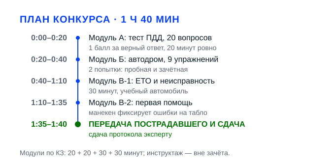
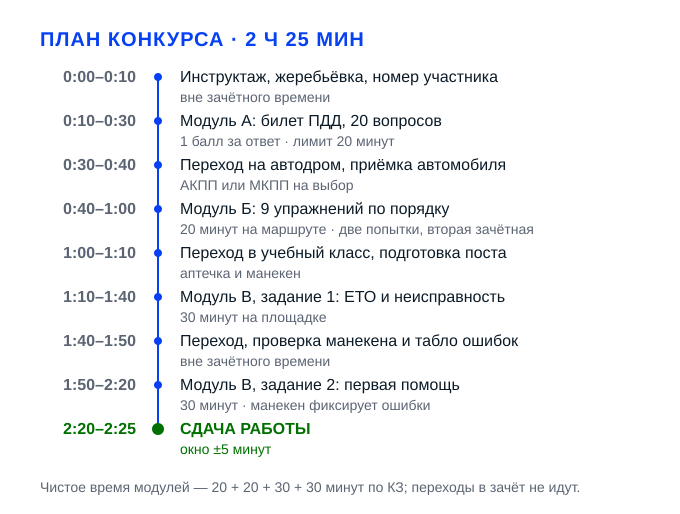
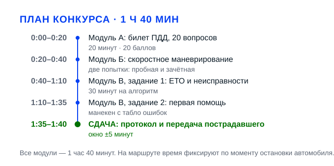

Водитель такси (Р)
Задания ниже — официальные файлы «Абилимпикс» (источник: abilympics-russia.ru), разложенные по категориям. Решения написаны по тексту задания, регламенту и критериям оценки; в них указано, что именно проверяет эксперт.
Школьник
14–16 лет, базовый уровень заданияВыдержка из официального конкурсного задания: страницы, относящиеся к категории «Школьник» (стр. 8–9, 18–20 источника).
Пошаговое решение
Конкурсное задание по компетенции «Водитель такси» для школьников состоит из трёх модулей и укладывается ровно в 1 час 40 минут: 20 минут на теорию ПДД, 20 — на скоростное маневрирование на автодроме и два блока по 30 минут на внештатные ситуации — поиск неисправности и первую помощь. Модуль А даёт 20 баллов, по одному за каждый из 20 вопросов билета; на площадке оценивают точность девяти упражнений и время, а в модуле В — порядок действий: осмотр машины по кругу, точную формулировку неисправности, жгут с запиской и 30 компрессий на манекене. Нигде не нужен героизм, везде нужна последовательность: сначала осмотрелся и обеспечил безопасность, потом делаешь. Ниже — разбор всех шагов по задачам, с тем, что смотрит эксперт и где теряются баллы.

Задача 1. Решить билет ПДД: 20 вопросов за 20 минутМодуль А · 20 баллов
Модуль А — это обычный экзаменационный билет ГИБДД на категории «А, В, М, А1, В1»: 20 вопросов за 20 минут, по 1 баллу за правильный ответ, итого 20 баллов. Сложность не в самих вопросах, а в темпе — на вопрос приходится минута, и любая заминка с оборудованием или привычка перечитывать всё по три раза съедают баллы, которые можно было взять. Здесь выигрывает не тот, кто знает больше, а тот, кто работает по алгоритму и держит время.
Действие 1.1. Войти в класс и подготовить рабочее место
Шаг 1.1.1
Заходим в класс по приглашению эксперта, называем свой номер участника и садимся за закреплённый компьютер. Сумку и телефон оставляем в отведённом месте, телефон выключен, на столе — только выданный лист и ручка. Клавиатуру и мышь до команды «начали» не трогаем: часть комплексов запускает билет по первому касанию, и неосторожный клик стартует таймер раньше времени.
Модуль А — 20 баллов, по 1 за каждый из 20 вопросов, и отсчёт 20 минут начинается по команде эксперта, а не по вашему желанию. Если билет запустится раньше, чем вы сели удобно, первая минута уйдёт на суету — это один вопрос и один балл. Порядок на столе нужен ещё и потому, что телефон рядом с клавиатурой — формальное основание снять участника с модуля.
Номер на мониторе совпадает с вашим, экран с билетом закрыт, время на классных часах сверено с экспертом. Стул отрегулирован по высоте, локти лежат на столе, монитор на уровне глаз — так вы не будете сползать и щуриться к десятому вопросу.
Самая частая ошибка — начать кликать «посмотреть, что там» до команды: билет стартует, таймер идёт, а вы ещё слушаете инструктаж. Вторая — убрать телефон в карман вместо отведённого места: за это снимают с модуля, и 20 набранных баллов превращаются в ноль.
Эксперт сверяет номер на мониторе с номером в протоколе до команды «начали» и проверяет, нет ли телефона на столе. Эти два пункта он отмечает раньше, чем участник начнёт работу.
Шаг 1.1.2
Слушаем инструктаж до конца и держим в голове три вещи: как запускается билет, где видно оставшееся время и чем работа завершается. Непонятное уточняем сразу, до команды: после старта вопросы по интерфейсу не задают и время на них не останавливают. Отдельно выясняем, что делать при зависании экрана — поднимать руку и ждать эксперта, а не перезагружать компьютер самому.
Инструктаж в последовательности выполнения работы стоит первым пунктом не формально: эксперт объясняет, сколько вопросов в билете и как считаются баллы — 20 вопросов, 1 балл за ответ, дополнительные вопросы за ошибки в зачёт не идут. Кто это услышал, тот не тратит последние минуты на попытки «добрать» баллы дополнительными вопросами.
Вы можете своими словами повторить три вещи: как начать, как завершить, к кому обращаться при сбое. Если хотя бы одна вызывает сомнение — поднимите руку сейчас, а не на пятом вопросе. Переспросить про завершение работы можно и нужно до команды, а не после.
Классика — пропустить инструктаж мимо ушей, потому что «и так всё понятно», а потом искать кнопку завершения в меню, пока идут последние две минуты. Вторая ошибка — молча сидеть при непонятном интерфейсе и терять вопросы, которые можно было закрыть.
Эксперт по ходу инструктажа смотрит, слушает ли участник и задаёт ли вопросы по существу; это первое впечатление о готовности к работе. Он же называет время окончания модуля и объявляет его вслух за две минуты до конца.
Шаг 1.1.3
Прогоняем оборудование до старта: двигаем мышь и смотрим, что курсор проходит весь экран плавно, а не дёргается и не залипает у края. Проверяем, что нет открытых посторонних окон и всплывающих подсказок, а на сенсорном экране — что палец попадает в кнопку ответа с первого раза. Если мышь «плавает» или кнопка не срабатывает, зовём эксперта и меняем место до команды, а не после.
Сбой оборудования в середине теста стоит не только времени: пока вы ищете эксперта, таймер 20 минут продолжает идти, а вопрос остаётся без ответа, то есть минус 1 балл из 20. Проверка занимает полминуты и полностью снимает этот риск. После старта замена рабочего места, как правило, уже не предусмотрена — регламент есть регламент.
Курсор двигается без рывков, кнопка ответа подсвечивается при наведении, на экране видно полное время — 20 минут. Убедитесь, что рядом нет второго активного окна, которое перехватывает клики. Если курсор дёргается у края экрана, меняйте место до старта, а не после.
Не проверить мышь и обнаружить, что она не работает, на третьем вопросе: ответ не засчитан, время ушло. Вторая ошибка — самостоятельно перезагрузить компьютер «чтобы починить»: билет при этом часто блокируется, и модуль придётся проходить заново, если эксперт вообще разрешит повтор.
Эксперт проверяет оборудование вместе с участником по его просьбе и только до команды. После старта он фиксирует сбой в протоколе, но время модуля при этом не останавливается.
Действие 1.2. Понять устройство билета и распределить 20 минут
Шаг 1.2.1
Разбираемся в устройстве билета: 20 вопросов идут блоками по пять, и внутри блока темы близкие — знаки и разметка, приоритет на перекрёстках, манёвры и обгон, скорость и остановка, особые условия движения. Если комплекс разрешает пролистать билет, пробегаем все 20 вопросов за минуту и помечаем три-четыре, где нужен расчёт или сложная схема перекрёстка. Пометки ставим на выданном листе.
План на 20 минут строится по факту, а не наугад: зная, что в билете четыре «тяжёлых» вопроса, вы отдаёте им по полторы минуты и забираете это время у простых вопросов по знакам, которые закрываются за пятнадцать секунд. Без такого просмотра первый же сложный вопрос съедает запас, и в конце не хватает минуты.
Вы знаете, сколько в билете тяжёлых вопросов и где они стоят по номерам; на листе есть пометки, а не только номер участника. Если комплекс не даёт листать — план строится по номерам вопросов по ходу, но принцип тот же.
Ошибка — идти строго по порядку и «зависать» на схеме перекрёстка на восемь минут, потому что хочется решить честно. За эти восемь минут можно было закрыть шесть простых вопросов и вернуться к сложному с холодной головой.
Эксперт не оценивает, как вы планируете, но по темпу ответов и числу пройденных вопросов к середине модуля видно, есть ли план. Застрявший на одном вопросе участник теряет темп уже к десятому номеру.
Шаг 1.2.2
Делим время арифметически: 20 минут на 20 вопросов — минута на вопрос. Ставим себе 45–50 секунд, а остаток складываем в резерв: к десятой минуте пройдены десять вопросов, к семнадцатой — все двадцать, три минуты остаются на возврат к спорным. Простые вопросы по знакам закрываем за 15 секунд и больше к ним не возвращаемся. Резерв — это два вопроса, которые иначе останутся пустыми.
Главная потеря баллов в этом модуле — не незнание, а нехватка времени: последние пять вопросов остаются пустыми, и это гарантированные минус 5 из 20. Резерв в три минуты нужен не для красоты, а чтобы пройти по всем строкам и закрыть пропуски хотя бы предположением.
К середине модуля на экране должно быть отвечено примерно десять вопросов; на семнадцатой минуте — двадцать. Если к десятой минуте отвечено шесть, темп надо поднимать: закрывать простые и оставлять спорные на резерв.
Увлечься одним вопросом на три-четыре минуты, потому что «обидно не решить». Правильный расчёт здесь простой: один вопрос стоит 1 балл, и он не стоит четырёх других, которые вы за это время не прочитали. Чаще всего такой вопрос потом оказывается верным, а баллов уже нет.
Эксперт видит таймер и число отвеченных вопросов; участник, у которого к концу осталось пять пустых строк, теряет баллы именно на организации. Он объявляет остаток времени и смотрит, укладывается ли участник в темп.
Шаг 1.2.3
Держим в голове правило этого модуля: ошибка стоит ровно 1 балл, а дополнительные вопросы, которые комплекс выдаёт за ошибку, в зачёт не идут. Значит, гадать наугад невыгодно только по времени: пять лишних вопросов съедят минуты, но баллов не добавят. Поэтому спорный вопрос решаем один раз, по алгоритму, и идём дальше, а не крутим его по кругу в надежде вспомнить.
В настоящем экзамене ГИБДД ошибка запускает дополнительные вопросы, и они оцениваются. Здесь условия другие: КЗ прямо говорит, что дополнительные вопросы в зачёт не идут, то есть ваша задача — максимум правильных ответов из 20, а не «чистота» блока. Понимание этого меняет тактику: рискнуть осмысленным ответом выгоднее, чем оставить пустую строку.
Вы можете объяснить своими словами, как считается результат модуля: 20 вопросов, 1 балл за верный ответ, дополнительные вопросы не оцениваются. Если объяснение сбивается, перечитайте инструктаж в голове ещё раз до старта.
Застрять на спорном вопросе, пытаясь «заслужить» его, и потерять три простых. Вторая ошибка — наоборот, отвечать на всё подряд за три минуты, не читая вопрос до конца: скорость без чтения даёт те же 1 балл ошибки, только ещё и обиднее.
Эксперт оценивает результат по протоколу комплекса; в спорной ситуации он смотрит, успел ли участник пройти все 20 вопросов. Если участник отвечает на дополнительные вопросы, эксперт видит, что правило модуля он не услышал.
Действие 1.3. Решать вопросы по алгоритму
Шаг 1.3.1
Читаем вопрос целиком, до последней строки, и находим в нём ключевые слова: «разрешено» или «запрещено», «вы», «первым», «по какой полосе», «с какой скоростью». Половина ошибок на билетах — не от незнания, а от прочитанного по диагонали вопроса с пропущенным «не». Затем смотрим на схему: где находится ваш автомобиль, куда он едет, какие знаки и какая разметка нарисованы.
Вопрос в билете сформулирован так, что один пропущенный союз меняет ответ на противоположный, и это самая дешёвая ошибка из всех возможных — она стоит 1 балл и не приносит никакого знания. Тридцать секунд на внимательное чтение дешевле, чем потерянный балл и потраченная минута на дополнительные вопросы.
Вы можете пересказать вопрос своими словами, не подглядывая: кто, где, что делает и что спрашивают. Если пересказ сбивается — читайте ещё раз, а не выбирайте вариант «по ощущению». Если пересказ рассыпается на середине, вопрос не прочитан: вернитесь к первой строке.
Отвечать по первому впечатлению от картинки, не дочитав условие: на схемах с трамваем и с прилегающей территорией это даёт стабильно неверный ответ. Вторая ошибка — читать только варианты ответов, а вопрос просматривать: варианты специально составлены так, чтобы подходить к разным ситуациям.
Эксперт за ходом решения не следит, но по протоколу видит, какие темы провалены. Системность ошибок в одной теме — сигнал, что правило не понято, а не забыто. Он сравнивает её с ошибками других участников по той же теме.
Шаг 1.3.2
Работаем отсевом: сначала убираем вариант, который прямо противоречит знаку или разметке, потом сравниваем два оставшихся по одному признаку — кто имеет преимущество и каким сигналом вы об этом сообщаете. На схеме проверяем траекторию: сплошная линия, направление движения по полосам, включённый до начала манёвра поворотник, а не в его середине. Если признак не находится, вопрос откладываем в резерв, а не выбираем «по симпатии».
Отсев по одному признаку не даёт запутаться в трёх похожих формулировках: варианты в билетах отличаются деталью, и сравнивать их целиком бессмысленно — достаточно найти признак, который решает дело. Это тот же приём, что и на перекрёстке: сначала преимущество, потом сигнал, потом траектория.
Остался один вариант, и вы можете назвать признак, по которому отбросили каждый из остальных. Если признак не называется — ответ держится на догадке, и тогда лучше вернуться к вопросу в резервные три минуты. Проверить это можно на любом похожем вопросе из тренировочного билета.
Выбирать «самый безопасный» вариант по принципу «водитель всегда уступает»: в билетах есть вопросы, где правильный ответ — воспользоваться преимуществом. Излишняя уступчивость создаёт помеху и стоит балла. Смотрите на знак, а не на желание быть вежливым.
Эксперт сверяет ответы с эталоном и отмечает вопросы, где ошибка повторяется у одного и того же участника. Разбор после конкурса обычно показывает, что правило знали, но не применили к схеме.
Шаг 1.3.3
Отдельно держим в голове пять типовых ловушек, на которых чаще всего валятся школьники: перекрёсток с трамваем (при равном праве преимущество у него), выезд с прилегающей территории (это не перекрёсток), остановка и стоянка у знака с зоной действия по табличке, буксировка и перевозка детей, скорость вне населённого пункта. По каждой вспоминаем одну формулировку правила — и сразу применяем.
Эти пять тем дают непропорционально много ошибок: они требуют не знания знака, а понимания, как правило работает в конкретной ситуации. Одна вспомнённая формулировка на каждую тему закрывает сразу несколько вопросов билета и стоит нескольких баллов из 20. Пять тем — это не список для заучивания, а карта слабых мест, которую надо проверить до старта.
Проверьте себя до старта: можете ли вы за минуту назвать правило для трамвая, для выезда с парковки и для зоны действия знака «Остановка запрещена» с табличкой. Если какая-то тема проваливается — именно на ней читайте условие дважды.
Путать выезд с прилегающей территории с перекрёстком равнозначных дорог — на этом строится минимум два вопроса в каждом билете. Вторая ловушка — таблички под знаком: их часто не замечают, а они меняют ответ на противоположный.
По протоколу эксперт видит, какие блоки провалены, и отмечает системность: ошибки в пяти темах идут подряд, а не вразнобой. При разборе он называет именно эти темы.
Действие 1.4. Сдать билет и выйти из модуля
Шаг 1.4.1
За три минуты до конца проходим по всем двадцати строкам и проверяем, что ни один вопрос не остался без ответа: в комплексе обычно видно, сколько отвечено и какие номера пропущены. Пропущенные закрываем первыми, даже если ответ неочевиден — пустая строка гарантированно стоит 1 балл, а осмысленное предположение может этот балл принести. Пропуски закрываем в конце: пока идёт время, есть шанс подумать.
Это последняя возможность забрать баллы, которые уже почти в руках: 20 вопросов и 20 баллов означают, что каждый пропуск — прямая потеря. На возврат к пропущенным уходит меньше минуты, и это единственная операция в модуле, которая почти всегда приносит очки. Одна незакрытая строка — это минус один балл из двадцати, то есть пять процентов результата модуля.
Отвечено ровно 20 из 20, пропущенных номеров на экране нет. Если комплекс не показывает счётчик, считайте по номерам вопросов: последний должен быть двадцатым, а не девятнадцатым. Если счётчика нет, посчитайте сами: отвеченных строк должно быть ровно двадцать.
Нажать «завершить» с двумя пустыми строками, потому что «время кончилось». Ещё хуже — закрыть билет, не проверив, что ответы вообще зафиксировались: на сенсорных экранах случается, что касание не сработало. Срабатывание касания проверяют после каждого десятка.
Эксперт видит число отвеченных вопросов в протоколе. Недобор в 2–4 балла почти всегда объясняется пустыми строками, а не ошибками, поэтому проверка пропусков — не формальность.
Шаг 1.4.2
Дальше — правило одного аргумента: ответ меняем только если нашли конкретную причину — знак на схеме, пункт правил, цифру в условии. Если причина звучит как «мне кажется, было не так», ответ оставляем: при чтении в цейтноте первая версия опирается на знание, а вторая — на сомнение, которое возникло уже после чтения вариантов. Правило работает и в обратную сторону: если аргумент нашёлся — меняйте, не сомневаясь.
Бесконечные правки — вторая по частоте причина потери баллов после невнимательного чтения: каждый пересмотр без нового аргумента с вероятностью выше половины ухудшает результат. Правило простое и проверяемое: новая причина — новая версия, нет причины — не трогаем.
К каждой изменённой строке вы можете назвать причину правки: конкретный знак, разметку или пункт правил. Если причину назвать не получается — верните прежний ответ. Если причина нашлась, меняйте сразу и не возвращайтесь к этой строке второй раз.
Переписать десяток ответов в последнюю минуту «на свежую голову»: свежей головы после двадцати минут теста не бывает, а усталость как раз и подталкивает к сомнительным правкам. Обратная крайность — не изменить ни одного ответа, когда аргумент найден: это тоже потерянный балл.
Эксперт правки не отслеживает, но по итогу видно: у участников, которые меняли ответы без аргументов, результат обычно на 2–3 балла ниже. Единственное, что он фиксирует, — время сдачи: ранний выход обычно означает, что резерв не использован.
Шаг 1.4.3
Завершаем работу по команде: нажимаем «завершить», дожидаемся на экране подтверждения и только потом встаём. Результат не обсуждаем ни с соседями, ни в коридоре: разговоры после модуля — отдельное нарушение, за которое снимают баллы. Ручку и выданный лист оставляем на столе, телефон забираем только после разрешения эксперта. Выходим спокойно, не задерживаясь у стола: следующего участника уже ждут.
Порядок выхода — часть оценки, хотя отдельных баллов за него не дают: обсуждение вопросов после теста трактуется как попытка передать информацию следующим участникам, и это заканчивается разбором с главным экспертом. Спокойный выход ещё и сохраняет голову перед автодромом, где следующие 20 минут решает не эрудиция, а руки.
На экране есть подтверждение завершения, эксперт отметил ваш выход в протоколе, телефон в кармане. Все три признака проверяются за десять секунд. Если подтверждения нет — стойте и зовите эксперта, а не уходите.
Встать и уйти сразу после клика, не увидев подтверждения: билет может не закрыться, и результат окажется неполным. Вторая ошибка — обсудить пару вопросов у выхода «по-тихому»: это слышно, и разбор будет неприятным.
Эксперт отмечает время сдачи и то, покинул ли участник класс без обсуждения вопросов. Разговоры у выхода он воспринимает как попытку передать информацию следующему.
Задача 2. Пройти девять упражнений на автодромеМодуль Б · 20 минут на маршруте
Модуль Б — скоростное маневрирование: закрытая площадка, учебный автомобиль с АКПП или МКПП на выбор и девять упражнений в строгой последовательности — старт, перекрёсток, горка, змейка, повороты на 90 градусов, ж/д переезд, бокс, параллельная парковка, финиш. На маршрут даётся 20 минут и две попытки: первая пробная, вторая зачётная, и её результат идёт в протокол. Оценивают время и точность, поэтому выигрывает не самый быстрый, а самый стабильный: тот, кто держит 3 секунды там, где они положены, и не сбивает стойки.
Действие 2.1. Занять место в автомобиле и выполнить старт
Шаг 2.1.1
Садимся в автомобиль и регулируем всё под себя, а не под предыдущего участника: сиденье двигаем так, чтобы левая нога выжимала сцепление до полика с небольшим запасом, а руки на руле были чуть согнуты. Спинку ставим на 100–110 градусов, подголовник — центром на уровне затылка, а не шеи. Зеркала настраиваем под себя: в салонном должно быть видно всё заднее стекло, в боковых — кромку кузова и полосу рядом с машиной.
Регулировка — не формальность: при неправильной посадке нога не выжимает сцепление до конца, передача включается с хрустом, а на горке не хватает хода педали, чтобы тронуться без отката. Зеркала решают судьбу бокса и параллельной парковки: без них вы едете задним ходом наугад, а каждое касание стойки — потерянные баллы и время из 20 минут на маршруте.
Педаль сцепления выжата до полика без натяжения ноги, спина прижата к спинке, в салонном зеркале видно заднее стекло целиком, руль не мешает коленам. Проверяйте по этому списку, а не по ощущению удобства.
Сесть «как удобно» и не тронуть ни сиденье, ни зеркала: через два упражнения выясняется, что в бокс видно только половину стоек. Вторая ошибка — отрегулировать сиденье после того, как двигатель запущен: часть экспертов считает это началом движения.
Эксперт обходит машину и оценивает посадку до команды на старт. Регулировка сиденья и зеркал для него — часть упражнения «Старт», а не подготовка «до конкурса».
Шаг 2.1.2
Пристёгиваемся и приводим автомобиль в исходное состояние, которое требует КЗ: фары выключены, стояночный тормоз поднят, двигатель заглушен. Проверяем, что руль стоит прямо и колёса не вывернуты — иначе на первых метрах машина уйдёт в сторону, а вы будете ловить её у самой линии «Старт». Заодно проверяем, что рычаг стоит в нейтрали, а педаль сцепления отпущена — иначе машина дёрнется при пуске.
Исходное состояние перечислено в задании буквально: ремень, выключенные фары, стояночный тормоз, заглушённый двигатель. Эксперт сверяет это перед командой, и если фары горят или машина не на ручнике, участник получает замечание раньше, чем начал движение. Кроме того, ровные колёса — условие точного старта без рыскания.
Ремень защёлкнут и не перекручен, индикатор на щитке не горит, ручник поднят до упора, ключ в положении «выключено», фары в «0». Руль проверяется покачиванием: спица стоит горизонтально. Проверьте это до команды: после неё любое движение в салоне считается началом упражнения.
Забыть про стояночный тормоз и тронуться с поднятым ручником: машина дёргается, глохнет, а на уклоне её ещё и уводит. Вторая ошибка — включить фары заранее, «чтобы не забыть»: по КЗ ближний свет включается в упражнении «Старт», и порядок проверяют.
Эксперт обходит машину и проверяет состояние до команды; последовательность «ремень — фары — ручник — двигатель» он видит целиком. Он смотрит на щиток приборов и на положение рычагов, а не на слова участника.
Шаг 2.1.3
Стартуем строго по упражнению № 1: запускаем двигатель, включаем ближний свет, снимаем стояночный тормоз, включаем первую передачу или «D» и трогаемся от линии «Старт» плавно, без рывка и без пробуксовки. Именно в этот момент эксперт фиксирует время начала движения, и дальше каждая секунда идёт в зачёт 20 минут на маршруте. Сцепление отпускаем до момента, когда машина сама начнёт движение, и добавляем газ коротко.
Девять упражнений за 20 минут — это в среднем чуть больше двух минут на упражнение вместе с переездами, поэтому старт «на эмоциях» с пробуксовкой не ускоряет, а тормозит: на змейке и боксе придётся отыгрывать ритм. Спокойное трогание задаёт темп всему маршруту, а время начинают считать именно здесь.
Машина пошла без рывка и без клевка, двигатель не заглох, колёса не провернулись. Стрелка тахометра не подскакивает выше 2000 оборотов, а машина идёт ровно по прямой, не требуя подруливания. Если машина клюнула носом, сцепление отпущено резко — на змейке это повторится в худшем виде.
Рвануть с места «чтобы не терять секунды»: на МКПП это глохнущий двигатель, на АКПП — пробуксовка и потеря контроля над траекторией у первого же конуса. Вторая ошибка — забыть включить ближний свет: это отдельный пункт упражнения «Старт».
Эксперт фиксирует время старта по секундомеру, а не по звуку двигателя, и одновременно проверяет ближний свет и снятый ручник. Если свет не включён, это фиксируется как ошибка упражнения «Старт».
Действие 2.2. Использовать пробную попытку как разведку
Шаг 2.2.1
Первую попытку используем как разведку: КЗ даёт две попытки, первая — пробная, вторая — зачётная. Проезжаем весь маршрут в том же порядке, что и в зачёт, но без борьбы за время: отмечаем, где стоят конусы, где проходит стоп-линия на горке, под каким углом стоит бокс и как далеко от линии тротуара находится карман для парковки. Считаем конусы и запоминаем порядок упражнений: он строгий и нарушать его нельзя.
Пробная попытка даётся именно для знакомства с маршрутом, и потратить её на «попытку на результат» — значит потерять единственный безопасный проезд. На зачётной попытке вы уже не имеете права на ошибку, а без разведки геометрии площадки змейка и бокс превращаются в угадайку, где цена — баллы и время из 20 минут.
После проезда вы можете назвать по памяти: сколько конусов в змейке, где стоп-линия перед ж/д переездом, с какой стороны удобнее заходить в бокс. Если хотя бы один ответ «не помню» — в зачётной попытке этот участок будет ошибкой.
Проехать пробную попытку на максимальной скорости и сбить три стойки: маршрут запомнится вместе с паникой, а не с ориентирами. Вторая ошибка — наоборот, отказаться от пробной попытки «чтобы не тратить силы»: экономия мнимая.
Пробная попытка в протокол не идёт, но порядок упражнений эксперт контролирует и здесь. Нарушение последовательности он назовёт сразу, чтобы участник не повторил его в зачётной попытке.
Шаг 2.2.2
По ходу разведки запоминаем не «примерно там», а конкретный ориентир на кузове: например, при въезде в бокс задним ходом выравниваемся так, чтобы стойка бокса была видна в правом зеркале на середине стекла. Такие привязки проговариваем вслух — так они остаются в памяти, и во второй попытке вы не ищете точку входа заново под тиканье таймера. Проговаривать ориентир вслух: так он запоминается лучше.
Глазомер на чужой площадке обманывает: то, что кажется «ровно», при заезде даёт перекос и касание стойки. Привязка к зеркалу или к стойке кузова превращает маневр из интуитивного в измеримый, и именно это позволяет выполнить его с первого раза в зачётной попытке — а второго раза уже не будет.
Вы можете назвать ориентир для каждого сложного упражнения: бокс, параллельная парковка, вход в змейку. Ориентир должен быть виден из-за руля, а не требовать высунуться в окно. Ориентир проверяют дважды: на пробной и на зачётной попытке.
Запоминать «примерно там, где конус»: при переезде от упражнения к упражнению позиция сбивается, и ориентир перестаёт работать. Вторая ошибка — считать ориентиром неподвижный предмет за пределами площадки, который виден только на подъезде.
Эксперт видит, что участник второй попытки выравнивается осознанно, а не «как получится»: это сразу заметно по отсутствию лишних подруливаний. По выравниванию перед боксом видно, есть ли у участника ориентир: без него машина «ищет» линию.
Шаг 2.2.3
После пробной попытки честно называем себе две-три ошибки: сбитый конус, поздний поворот руля, откат на горке. По каждой меняем тактику на зачёт: если сбивали конус в змейке — входим медленнее и крутим руль позже, если теряли габарит в боксе — начинаем движение в карман на 20–30 сантиметров ближе к стойке. Меняем только одну деталь на ошибку: если поменять сразу три, вы не поймёте, что сработало.
Пробная попытка полезна ровно настолько, насколько вы из неё сделали вывод: повторить во второй попытке то же самое и надеяться на другой результат — самый распространённый сценарий провала. Одна изменённая деталь на ошибку обычно и решает дело, потому что остальное уже получается.
У вас в голове короткий список: ошибка — что меняю. Три пункта — предел, который реально удержать за две минуты между попытками. Если пунктов больше, в зачётной попытке вы начнёте думать о тактике вместо того, чтобы ехать.
Разбирать пробную попытку «потом» и ехать зачётную сразу: между попытками обычно меньше двух минут, и вывод нужно сделать за это время, а не после конкурса. Ещё хуже — повторить ту же ошибку и объяснить её волнением: эксперт слышит это каждый конкурс.
Между попытками эксперт обычно спрашивает, что участник изменит. Ответ по делу — признак того, что человек управляет результатом, а не надеется на вторую попытку.
Действие 2.3. Пройти перекрёсток и горку
Шаг 2.3.1
Перед перекрёстком определяем его тип: смотрим на знаки приоритета, светофор и число полос. Если светофор работает — едем по сигналу, если нет — по знакам: главная дорога, «Уступите дорогу», равнозначный перекрёсток. Решение принимаем заранее, за 30–40 метров, чтобы осталось время снизить скорость и включить поворотник. Скорость снижаем до 20–30 км/ч: так решение ещё можно изменить.
Упражнение называется «Проезд перекрёстка» и проверяет именно умение читать обстановку, а не скорость: ошибка в определении типа перекрёстка — грубая, и она стоит больше, чем потерянные две секунды. Решение, принятое заранее, ещё и позволяет проехать перекрёсток без остановки там, где она не нужна.
Тип перекрёстка назван вслух или про себя до линии, поворотник включён, скорость снижена. Если на перекрёстке стоит другой автомобиль, вы точно знаете, кто уступает, и не начинаете движение «на всякий случай». Смену решения видно по плавному торможению, а не в пол.
Проскочить перекрёсток, не разобравшись в знаках, и остановиться уже на нём: это и ошибка приоритета, и потеря времени. Вторая ошибка — включить поворотник в момент поворота руля, а не до манёвра. Ошибка приоритета на экзамене считается грубой, а на конкурсе стоит баллов сразу за два пункта.
Эксперт стоит так, чтобы видеть знаки, траекторию и момент включения поворотника. Он оценивает, определено ли преимущество до линии, а не в момент выезда на перекрёсток.
Шаг 2.3.2
Проезжаем перекрёсток по своей полосе, не срезая траекторию через сплошную и не заезжая на встречную. Поворотник включаем до начала манёвра, скорость снижаем заранее, а на самом перекрёстке не останавливаемся, если за ним затор. Если нужно уступить — останавливаемся до стоп-линии, а не на ней и не за ней. Перед поворотом смотрим в зеркала и в «слепую зону»: на площадке машин нет, но привычка оценивается.
Полоса и разметка — это те ошибки, которые на экзамене считаются грубыми: выезд на встречную при повороте или пересечение сплошной обнуляют упражнение, а не уменьшают баллы. Остановка за стоп-линией — тоже нарушение, причём такое, которое легко избежать, если тормозить заранее, а не в последний момент.
Машина прошла перекрёсток в своей полосе, ни одно колесо не пересекло сплошную, остановка (если была) сделана до стоп-линии. Поворотник выключился сам после выравнивания руля. Если колесо прошло по сплошной, упражнение уже не восстановить: следите за линией по зеркалу.
Тормозить уже на стоп-линии и останавливаться за ней: передняя часть машины перекрывает линию, и упражнение считается невыполненным. Вторая ошибка — срезать поворот по внутренней траектории, заезжая на встречную полосу.
Эксперт отмечает положение машины относительно стоп-линии и сплошной; траекторию он видит целиком, потому что стоит в конце упражнения. Он также фиксирует, включён ли поворотник до манёвра, а не в момент поворота руля.
Шаг 2.3.3
На горке останавливаемся перед стоп-линией, удерживаем автомобиль неподвижно 3 секунды стояночным или рабочим тормозом — считаем «раз, два, три» ровно, без спешки, — и только потом трогаемся. Трогаемся так, чтобы не откатиться: на МКПП с подгазовкой и плавным отпусканием сцепления, на АКПП с отпусканием тормоза в момент нарастания тяги. Откат проверяется по неподвижному ориентиру — стойке или конусу — а не по ощущению в спине.
Три секунды удержания — прямое требование упражнения № 3, и они проверяются буквально: остановились на секунду и поехали — упражнение не засчитано. Откат назад при трогании на подъёме — вторая типичная ошибка, из-за которой теряются баллы именно на ровном месте: техника отработана, а не хватило выдержки.
Машина стоит неподвижно полные три секунды, при трогании не откатывается назад, двигатель не глохнет. Если откат всё же случился, он должен быть минимальным — сантиметры, а не полметра. Попросите помощника отсчитать три секунды вслух: на глаз они кажутся короче.
Отпустить тормоз раньше, чем появилась тяга: машина откатывается назад, и упражнение теряет баллы. Вторая ошибка — держать горку «на сцеплении», без тормоза: машина ползёт назад или глохнет при попытке тронуться.
Эксперт отсчитывает три секунды неподвижности и смотрит на откат при трогании — это два отдельных пункта оценки одного упражнения. Откат он измеряет по стойке: сантиметры допустимы, полметра — уже ошибка с баллами.
Действие 2.4. Пройти змейку и повороты на 90 градусов
Шаг 2.4.1
В змейку входим на минимальной скорости, на первой передаче и полусцеплении, руль держим двумя руками и работаем короткими порциями, а не одним оборотом. Смотрим не на капот, а на следующий конус — машина едет туда, куда смотрит водитель, и это не фигура речи: при взгляде на капот траектория теряется уже на втором конусе. Перед входом в змейку выравниваем машину по оси упражнения, а не заезжаем с поворота.
Змейка — упражнение на ритм, а не на скорость: короткие порции руля дают плавную траекторию, а один оборот сразу уводит машину в стойку. Взгляд на следующий конус позволяет заранее начать выравнивание, и тогда машина проходит упражнение без касаний, даже если скорость минимальная — время в этом упражнении стоит дешевле, чем сбитая стойка.
Машина идёт по синусоиде без остановок, руль не «перекручен» до упора, стойки остаются на одинаковом расстоянии от борта. В зеркалах видно, что корма не срезает конусы. Если корма идёт по другой траектории, чем нос, вы смотрите слишком близко — переведите взгляд дальше.
Войти в змейку быстро и «рулить по факту»: первый конус пройден, второй сбит. Вторая ошибка — смотреть на капот и подруливать после того, как машина уже прошла точку поворота: траектория получается ломаной. Сбитая стойка обычно стоит упражнения целиком, а не одного балла.
Эксперт стоит у змейки и фиксирует касания стоек и колёс; за сбитую стойку упражнение обычно не засчитывается. Он же смотрит на руки: перехват руля в повороте на одну руку здесь считается ошибкой техники.
Шаг 2.4.2
Объезжаем конусы поочерёдно, оставляя зазор примерно 30–40 сантиметров до стойки, и контролируем его по зеркалам и по кромке капота. Скорость держим постоянной: подтормаживание перед каждым конусом сбивает ритм, а разгон между ними приводит к касанию стойки на выходе. Руль подправляем на 10–15 градусов, а не «в пол-оборота»: на змейке этого хватает, чтобы удержать зазор.
Постоянная скорость — единственное, что позволяет держать одинаковый зазор на всех конусах: при разгоне машина «выныривает» из поворота и цепляет стойку кормой. Зазор в 30–40 сантиметров оставляет запас на неточность, тогда как проезд «вплотную» не прощает ни сантиметра.
Зазор до стоек одинаковый слева и справа, машина не касается конусов, скорость не меняется рывками. Если зазор «гуляет» — вы работаете рулём по факту, а не по ориентиру. После выхода зазор до последнего конуса сверяют с первым.
Держаться вплотную к конусам «чтобы точно пройти»: запас в пять сантиметров превращается в сбитую стойку при малейшей неточности. Вторая ошибка — тормозить перед каждым конусом, из-за чего машина теряет ход и останавливается в самом неудобном месте.
Эксперт смотрит на зазор и на то, не сбиты ли стойки; касание конуса колесом отмечается отдельно от касания бортом. Конус, сбитый колесом, и конус, задетый бортом, в протоколе идут разными строками, и вес у них разный.
Шаг 2.4.3
На поворотах на 90 градусов включаем поворотник, сбрасываем скорость до минимума и входим в коридор так, чтобы заднее колесо прошло в 30–40 сантиметрах от внутреннего конуса. Руль крутим в один приём и сразу выравниваем после выхода — машина должна идти параллельно линиям, а не «ловить» траекторию подруливанием. Перед поворотом смотрим в зеркало на внутренний конус: так видно, сколько места осталось заднему колесу.
Поворот на 90 градусов проверяет чувство габарита: главная ошибка здесь — срезать внутреннюю часть и задеть конус задним колесом. Один приём руля и своевременное выравнивание дают ровный выход, а подруливание после поворота говорит о том, что вы вошли не по той траектории.
Машина вышла из поворота параллельно линиям, заднее колесо не задело конус, поворотник выключился. Руль стоит прямо, дальнейшее движение не требует подправок. Если после выхода руль приходится подправлять, значит, поворот начат раньше или позже точки.
Начать поворот позже нужной точки и выехать за границу коридора внешним колесом — второй по частоте промах. Первый — крутить руль до упора на входе и цеплять внутренний конус. Обе ошибки видны сразу, потому что коридор узкий.
Эксперт фиксирует касание конусов и выход за линии; на этом упражнении ошибки видны сразу, потому что коридор узкий. Он же считает подруливания после поворота: лишние движения рулём говорят о неверной траектории.
Действие 2.5. Пройти ж/д переезд, бокс, парковку и финиш
Шаг 2.5.1
Перед ж/д переездом останавливаемся у стоп-линии и стоим не менее 3 секунд — этого требует и упражнение, и ПДД. За это время смотрим в обе стороны, убеждаемся, что путей не видно и сигнал не горит, включаем передачу и проезжаем переезд без остановки на путях. На МКПП передачу включаем заранее, чтобы не искать её на путях; голову поворачиваем в обе стороны по очереди, а не одним взглядом по зеркалам.
Ж/д переезд — единственное упражнение, где остановка обязательна всегда, даже если пути пусты: три секунды перед стоп-линией проверяются по секундомеру. Остановка на самих путях — грубая ошибка, потому что в реальной жизни это самая опасная ситуация на дороге.
Машина стоит полные три секунды до стоп-линии, затем проходит переезд без остановки, ни одно колесо не останавливается на рельсах. Голова повёрнута в обе стороны — это видно и нужно на самом деле. Стойка или знак «Стоп» перед переездом — ваш ориентир: остановились до неё, а не на ней.
Остановиться «на секундочку» и поехать: упражнение не засчитано. Вторая ошибка — заехать на пути и заглохнуть: это и грубая ошибка, и потеря времени, которое потом не вернуть. Остановка на рельсах — грубая ошибка: в реальной жизни это самая опасная ситуация на дороге.
Эксперт считает секунды остановки и следит, чтобы машина не останавливалась на рельсах. Он стоит у стоп-линии с секундомером, поэтому недодержанные полсекунды видны ему сразу.
Шаг 2.5.2
В бокс заезжаем задним ходом: подъезжаем к линии, выравниваем автомобиль параллельно боксу, включаем заднюю и заводим корму по зеркалам, подправляя руль маленькими движениями. Контрольную линию пересекаем проекцией переднего бампера, останавливаемся в боксе не менее чем на 3 секунды и выезжаем передним ходом. Если корма пошла не туда, лучше остановиться и выровняться, чем «дотягивать» рулём на ходу.
Здесь сразу три требования: заезд задним ходом, пересечение контрольной линии проекцией переднего бампера и остановка на 3 секунды. Машина, которая осталась снаружи бокса «наполовину», упражнение не выполнила, даже если стойки целы. Маленькие подправки рулём вместо одного оборота дают ровный заезд без касаний.
Кузов целиком внутри бокса, передний бампер пересёк контрольную линию, машина стоит ровно и не задевает стойки. Три секунды неподвижности отсчитаны полностью. Проверьте расстояние до стоек с обеих сторон: перекос в 10 сантиметров виден по зазору.
Заезжать в бокс передним ходом «так проще»: упражнение считается невыполненным, потому что проверяется именно задний ход. Вторая ошибка — остановиться, не пересёкши контрольную линию бампером: визуально машина в боксе, а условие не выполнено.
Эксперт стоит сбоку и смотрит проекцию переднего бампера относительно контрольной линии — это самый частый спорный момент упражнения. Спор решается фотографией: если бампер на линии, упражнение засчитывают, если до линии — нет.
Шаг 2.5.3
Параллельную парковку выполняем правым бортом: проезжаем вперёд мимо кармана так, чтобы заднее колесо поравнялось с его дальним углом, и задним ходом заводим корму в карман, выкручивая руль вправо, а затем выравнивая. Останавливаемся, когда автомобиль встал параллельно линии тротуара и целиком внутри кармана. Задним ходом едем медленно, на полусцеплении, и держим взгляд на дальней стойке кармана.
Парковка правым бортом вдоль условной линии тротуара — стандартное упражнение экзамена, и оно проверяет то же, что нужно каждый день на улице: умение встать в карман, не задев бордюр и не выехав на полосу. Точка выравнивания по заднему колесу даёт правильный угол входа, без которого машина либо не влезает, либо встаёт криво.
Машина стоит параллельно линии тротуара, колёса не заезжают за линию, корпус целиком в кармане, до соседних границ есть запас. Руль стоит прямо, перекосов нет. Если эксперт разрешает, посмотрите со стороны: перекос в 10 сантиметров виден только снаружи.
Начать заезд, когда заднее колесо ещё не дошло до дальнего угла кармана: машина встаёт под острым углом и не влезает. Вторая ошибка — заехать колесом за линию тротуара, что в реальной жизни означает бордюр и диск.
Эксперт смотрит положение колёс относительно линии тротуара и параллельность кузова — оба признака видны с любой точки площадки. Ему достаточно одного взгляда на заднее колесо: если оно за линией, упражнение уже не засчитают.
Шаг 2.5.4
Финишируем строго по упражнению № 9: останавливаемся перед финишной линией, ставим на стояночный тормоз, переводим рычаг в нейтраль, выключаем фары, глушим двигатель, отстёгиваем ремень и выходим. Эксперт фиксирует время по моменту остановки, поэтому «докатываться» после линии бессмысленно, а порядок действий проверяется целиком. Секундомер останавливают в момент остановки, а не в момент выхода.
Финиш — такое же упражнение, как и остальные: последовательность из шести действий перечислена в задании, и её проверяют. Время фиксируется по остановке, так что спешка после линии не даёт ничего, а забытый ручник или горящие фары — дают замечание в протокол. Проверяют именно состояние машины после сдачи: у машины, оставленной на передаче, следующий участник не заведётся.
Машина стоит перед финишной линией, ручник поднят, рычаг в нейтрали, фары выключены, двигатель заглушен, ремень отстёгнут. Проверяйте по этому списку, а не по памяти. Выходить нужно из машины, а не сидеть в ней в ожидании команды.
Остановиться и сразу выскочить, забыв про ручник и фары: последовательность нарушена, и это стоит баллов на самом последнем упражнении, где их терять обиднее всего. Вторая ошибка — пересечь финишную линию «для верности»: время уже зафиксировано, а нарушение осталось.
Эксперт фиксирует время по остановке и проверяет состояние машины после выхода участника — ручник, передачи, свет, двигатель. Он подходит к машине после выхода и проверяет рычаги руками, поэтому «забыл» здесь не проходит.
Задача 3. Провести ЕТО и найти неисправностьМодуль В, задание 1 · 30 минут
Первое задание модуля В — 30 минут на площадке с учебным автомобилем: провести ежедневное техническое обслуживание перед эксплуатацией, выявить неисправность и устранить её причину, а если эксплуатация запрещена — действовать по установленному порядку. Оценивают не скорость и не умение разбирать машину, а последовательность: осмотр по кругу, проверка уровней и приборов, точная формулировка неисправности, решение. Здесь ошибка про реальную дорогу, а не про площадку, и стоит она дороже.
Действие 3.1. Провести ежедневное техническое обслуживание
Шаг 3.1.1
Начинаем ЕТО с обхода автомобиля по кругу против часовой стрелки, чтобы ничего не пропустить: на каждом колесе проверяем давление, глубину протектора и порезы, выкручиваем из протектора камни и посторонние предметы. Под машиной смотрим пятна на асфальте — масло, антифриз, тормозная жидкость: любое пятно это повод искать причину, а не «протереть и поехать». Заодно проверяем стёкла, зеркала, номерные знаки и целостность фар.
Обход по кругу — единственный способ увидеть машину целиком: остановившись у переднего колеса, вы не заметите порез на заднем, а именно он и станет причиной замены колеса на дороге. Остаточная глубина протектора для легкового автомобиля — не меньше 1,6 мм, и это не рекомендация, а условие допуска к эксплуатации из перечня неисправностей.
Пройдены все четыре колеса, каждое осмотрено снаружи и сверху, пятен под машиной нет. Номерные знаки читаются, стёкла без трещин в зоне очистки стеклоочистителя, фары и фонари целые. Если пятно свежее и пахнет бензином или маслом, причину ищем до запуска двигателя.
Осмотреть только два колеса со стороны водителя и решить, что «остальное в порядке»: эксперт видит, что обход неполный, и это отдельный минус за организацию осмотра. Вторая ошибка — не заметить пятно под двигателем: на реальной дороге это утечка, которая заканчивается перегревом или отказом тормозов.
Эксперт идёт рядом и смотрит, останавливается ли участник у каждого колеса. Обход, сделанный «на глаз» с одного места, он видит сразу и отмечает как неполный осмотр.
Шаг 3.1.2
Открываем капот и проверяем уровни на холодном двигателе: масло по щупу — между метками минимума и максимума, охлаждающая жидкость — в расширительном бачке, тормозная — в бачке главного тормозного цилиндра, омывающая — по необходимости. Заодно смотрим ремни: нет ли трещин, расслоения и блеска, нормально ли натяжение. Щуп вытираем насухо и вставляем до упора: на невытертом щупе уровень читается неверно.
Уровни — самая быстрая проверка, которая предотвращает самые дорогие поломки: масляное голодание и перегрев стоят двигателя, а низкий уровень тормозной жидкости — отказа тормозов. Проверять на холодном двигателе нужно потому, что на горячем масло стекает в поддон неравномерно, и щуп врёт в сторону «всё в норме».
Масло на щупе между метками и без эмульсии, охлаждающая жидкость между min и max, тормозная — по метке, ремни без трещин и прогибаются при нажатии в пределах 10–15 мм. Крышки бачков затянуты. Уровень читается на ровной площадке: на уклоне щуп врёт в любую сторону.
Проверить масло сразу после поездки: щуп показывает меньше, участник доливает «до максимума» и переливает — это так же плохо, как недолив. Вторая ошибка — открыть крышку расширительного бачка на горячем двигателе: ожог паром и потерянное время.
Эксперт смотрит, вытирается ли щуп перед измерением и в каком порядке открываются бачки. Аккуратность здесь входит в оценку: пролитая жидкость на горячем двигателе — это не мелочь.
Шаг 3.1.3
Проходим по органам управления изнутри: педаль тормоза не должна проваливаться и быть «мягкой», руль — без стука и с люфтом не более 10 градусов, стеклоочистители и омыватель работают, ремни вытягиваются и втягиваются. Проверяем замки дверей и капота, а также то, что сиденье и подголовник зафиксированы. Колесо на стоящей машине не поднимаем: осмотр органов управления идёт без домкрата.
Люфт рулевого управления больше 10 градусов — прямая неисправность из перечня, при которой эксплуатация запрещена, и проверяется он покачиванием руля на месте. Мягкая педаль тормоза означает воздух или утечку в гидроприводе: на дороге это удвоенный тормозной путь, а на конкурсе — невыполненное задание, потому что неисправность не выявлена.
Руль покачивается на месте с небольшим свободным ходом, без стука; педаль тормоза держит усилие и не уходит к полу; ремни втягиваются сами; стеклоочистители возвращаются в исходное положение. Люфт проверяется плавным покачиванием руля, а не рывком: при рывке стук слышен даже на исправной машине.
Крутить руль на стоящей машине «чтобы проверить» до упора: насос гидроусилителя работает на пределе, и проверка превращается в поломку. Вторая ошибка — нажать тормоз один раз и сделать вывод: педаль проверяют несколькими нажатиями, она не должна «накачиваться» и проваливаться.
Эксперт присаживается в машину вместе с участником и смотрит на свободу руля и характер педали — это самая показательная часть осмотра. Он просит нажать педаль трижды: так характер виден лучше.
Действие 3.2. Проверить системы на запущенном двигателе
Шаг 3.2.1
Запускаем двигатель и смотрим на щиток приборов в первые две-три секунды: лампы давления масла, заряда аккумулятора, тормозной системы, ABS и подушек должны погаснуть после пуска. Если какая-то осталась гореть — это не «глюк», а конкретная система, которую нужно назвать эксперту и проверить. Лампы гаснут за две-три секунды после пуска; если какая-то горит дольше, это сигнал о неисправности.
Контрольные лампы — самый информативный диагностический инструмент из доступных водителю: они показывают отказ системы до того, как он проявится в поведении машины. Горящая лампа тормозной системы при отпущенном ручнике означает низкий уровень жидкости или неисправность гидропривода, и ехать с этим нельзя.
После пуска все контрольные лампы погасли, кроме тех, что должны гореть при работающем двигателе на стоянке. Если лампа горит — вы можете назвать систему и причину, по которой она зажглась. Горящая лампа — не повод ехать: сначала назовите систему и причину, потом решение.
Запустить двигатель и сразу убрать взгляд со щитка: горящая лампа остаётся незамеченной, и эксперт фиксирует, что неисправность не выявлена. Вторая ошибка — объяснить горящую лампу «так и должно быть», не проверив ручник и уровень жидкости.
Эксперт стоит у открытой двери и видит щиток приборов одновременно с участником; реакция на горящую лампу — ключевой момент этого шага. Не заметил лампу — это невыявленная неисправность.
Шаг 3.2.2
Проверяем свет и сигналы по кругу, лучше с помощником: ближний и дальний свет, габариты, оба стоп-сигнала, поворотники слева и справа, аварийную сигнализацию, свет заднего хода и звуковой сигнал. Каждую лампу проверяем отдельно — «вроде горит» здесь не работает, потому что одна неработающая лампа стоп-сигнала уже является неисправностью из перечня. Стоп-сигналы проверяем вдвоём или у стены: с водительского места их не видно.
Внешние световые приборы — раздел перечня неисправностей, при которых эксплуатация запрещена, и одновременно самая частая поломка в такси: перегоревшая лампа стопа означает, что едущий сзади не узнает о торможении. Проверка по кругу занимает две-три минуты, но закрывает целый раздел ЕТО.
Все приборы работают, режимы переключаются, стоп-сигналы загораются от нажатия педали, аварийка мигает всеми указателями. Стеклоочистители работают во всех режимах, омыватель подаёт жидкость. Аварийка должна мигать всеми указателями одновременно, без «молчащих» углов.
Проверить только ближний свет и решить, что «остальное видно»: перегоревший стоп остаётся незамеченным, а это отдельный пункт протокола. Вторая ошибка — проверять свет одному, без отражения в стене или помощника: с водительского места задние фонари не видны.
Эксперт обходит машину вместе с участником и смотрит, названа ли неисправность сразу, а не после подсказки. Задние фонари он проверяет сам, потому что с водительского места их не видно.
Шаг 3.2.3
Проверяем тормоза и стояночный тормоз на месте: педаль держит усилие и не уходит к полу, стояночный тормоз удерживает машину на уклоне и снимается до конца, а его рычаг имеет положенный ход. На АКПП убеждаемся, что селектор фиксируется в каждом положении, на МКПП — что передачи включаются без хруста и не выбиваются. Ручник проверяем на уклоне: на ровной площадке он «держит» даже неисправный.
Стояночный тормоз — то, чем водитель такси пользуется каждый день на уклоне, и его неисправность входит в перечень запретов на эксплуатацию. Проверка селектора и передач нужна ещё и потому, что на автодроме именно эти органы работают в старте, горке и финише: неисправность здесь сорвёт соседний модуль.
Машина удерживается ручником на уклоне, рычаг снимается с первого раза, педаль тормоза не «проваливается» после нескольких нажатий, передачи включаются чётко. Если педаль после трёх нажатий стала «ватной», в гидроприводе воздух — это запрет на выезд.
Дёрнуть ручник «до упора» и не проверить, снимается ли он: на старте автодрома машина останется на тормозе, и участник потеряет время на выяснение причины. Вторая ошибка — проверить тормоза на ходу, без разрешения эксперта.
Эксперт смотрит, проверен ли ручник на уклоне, а не просто дёрнут рычаг на ровном месте. Имитацию проверки он отмечает отдельно, а педаль тормоза просит нажать трижды.
Действие 3.3. Найти причину неисправности по симптому
Шаг 3.3.1
Прежде чем что-то крутить, формулируем симптом словами: «не горит левый стоп», «педаль мягкая», «стук справа при повороте», «двигатель не запускается». Из симптома выводим две-три версии причины и идём от простого к сложному: предохранитель, лампа, клемма, контакт, и только потом узел. Каждую версию проверяем отдельно и отбрасываем с обоснованием, а не молча.
Порядок «от простого к сложному» экономит время, которого в модуле 30 минут: разбирать узел, не проверив предохранитель, — значит потратить двадцать минут на поиск причины, которая нашлась бы за минуту. Кроме того, эксперту важна логика: он оценивает, умеете ли вы рассуждать, а не угадывать.
Если версия отпала, вы говорите это вслух и переходите к следующей — так эксперту видна логика поиска. Симптом и список версий должны быть сформулированы до первого действия с инструментом. Третья версия часто оказывается лишней, но назвать её всё равно нужно.
Менять детали наугад, «пока не заработает», — вторая ошибка: эксперт видит хаотичные действия и снимает баллы за отсутствие логики. Время при этом уходит на всё, кроме поиска причины. Одна проверенная версия дешевле трёх замененных деталей.
Эксперт слушает, как участник проговаривает версии; вслух произнесённая логика поиска — самая ценная часть задания. Он может прервать поиск вопросом «а почему вы так думаете?» и ждёт ответа по существу, без «так принято».
Шаг 3.3.2
Открываем блок предохранителей и по схеме на крышке находим нужный: проверяем целостность нити на просвет, при сомнении меняем на равноценный по номиналу. Дальше по очереди — лампа (цела ли нить), клеммы аккумулятора (затянуты, без окисла), уровень жидкости, натяжение ремня. Каждое действие называем вслух. Если предохранитель цел, проверяем питание на потребителе: цепь идёт от аккумулятора к лампе.
Предохранитель — самый частый и самый дешёвый виновник отказа света: он защищает цепь и перегорает первым, и менять его на предохранитель большего номинала нельзя, потому что тогда сгорит проводка. Проверка по цепочке от источника к потребителю даёт точку отказа за три-четыре минуты.
Найден перегоревший предохранитель или неисправная лампа, и после замены система заработала. Номинал замены совпадает с указанным на крышке, клеммы чистые и затянутые. Номинал замены сверяем с надписью на крышке блока, а не «на глаз» по размеру.
Поставить предохранитель «на глаз», с большим номиналом: цепь перестаёт быть защищённой, и в реальной машине это заканчивается оплавлением проводки. Вторая ошибка — менять лампу, не проверив предохранитель: новая лампа тоже не загорится, и время уйдёт.
Эксперт смотрит на номинал установленного предохранителя и на то, проверена ли цепь до конца, а не только заменена деталь. Отдельно он проверяет, вернули ли снятую крышку блока на место: разобранный блок — незакрытая работа.
Шаг 3.3.3
Найденную неисправность показываем и называем точно: что именно не работает, где это находится и по какому пункту перечня это запрещает эксплуатацию. Если неисправность устранима на месте — меняем предохранитель или лампу и проверяем работу; если нет — не изображаем ремонт, а переходим к порядку действий при запрете эксплуатации. Если детали нет под рукой, это не повод молчать: назовите неисправность и предложите решение.
Формулировка — половина оценки: «что-то не горит» и «перегорела нить лампы левого заднего стоп-сигнала, цепь защищена предохранителем F12» — это разные ответы по качеству. Точная формулировка показывает, что вы понимаете устройство, а не случайно попали в неисправность.
Неисправность названа, показана эксперту и, если устранима, устранена с проверкой работы. Вы можете сказать, какая деталь заменена и почему именно она. Проверка после замены обязательна: лампа должна загореться.
Сказать «лампа перегорела» и не уточнить, какая именно: эксперт не может зафиксировать результат, и балл снижается. Вторая ошибка — «устранить» неисправность, которой нет, лишь бы что-то сделать. Формулировка «что-то не работает» в протоколе не фиксируется, и балл снимается целиком.
Эксперт записывает формулировку дословно и сверяет её с эталонным описанием. Ответ «лампа перегорела» без указания, какая именно, он оценивает ниже: точность формулировки — половина балла за шаг.
Действие 3.4. Действовать при запрете эксплуатации и при ДТП
Шаг 3.4.1
Сверяем найденное с перечнем неисправностей, при которых запрещается эксплуатация: тормозная система, рулевое управление, внешние световые приборы, шины с остатком протектора меньше 1,6 мм, трещины на лобовом стекле в зоне очистки стеклоочистителя. Если неисправность из перечня — автомобиль остаётся на месте, вызываем техпомощь или эвакуатор. Решение объявляем вслух: «эксплуатация запрещена, вызываем эвакуатор».
Перечень — это не рекомендация, а прямой запрет: с такой неисправностью машина не проходит допуск к эксплуатации, и поездка «до дома потихоньку» — нарушение, за которое водителя такси лишают прав. Умение сказать «ехать нельзя» и объяснить почему ценится выше, чем попытка довести машину до сервиса своим ходом.
Вы можете назвать неисправность, раздел перечня и решение — устранить, вызвать техпомощь или эвакуатор. Ответ на вопрос «можно ли ехать» должен быть однозначным. Обоснование — это пункт перечня, а не «так безопаснее».
Путать неисправность из перечня с мелким дефектом: с царапиной на бампере ехать можно, с лысой шиной — нет. Обратная ошибка — решить, что «до сервиса доедет», и потерять тормоза на первом же спуске. Обе ошибки дороги одинаково: одна оставляет машину на дороге, другая выводит её на дорогу неисправной.
Эксперт задаёт контрольный вопрос: «можно ли ехать?» — и ждёт ответ с обоснованием, а не просто «нельзя». Ответ он записывает в протокол дословно: «запрещено, вызываем эвакуатор», а не «наверное, нельзя».
Шаг 3.4.2
При вынужденной остановке включаем аварийную сигнализацию и выставляем знак аварийной остановки: не менее 15 метров в населённом пункте и не менее 30 метров вне его. Людей выводим из машины и за пределы проезжей части, сами находимся сбоку от автомобиля, а не за бампером на полосе. Знак ставим навстречу движению, чтобы его было видно издалека, а не у самого колеса.
Знак и аварийка — единственное, что предупреждает поток о стоящей машине: на скорости 60 км/ч пятнадцать метров проезжаются за секунду, и водитель сзади должен увидеть знак заранее. Правило про 15 и 30 метров — точная норма ПДД, и на конкурсе её называют дословно.
Аварийка включена, знак выставлен на нужном расстоянии, люди за пределами проезжей части. Знак стоит навстречу движению и виден издалека, а не лежит у колеса. Расстояние до знака проверяется шагами: 15 метров — это примерно двадцать шагов.
Выставить знак в трёх метрах за бампером «для порядка»: поток не успевает среагировать, и это самая опасная ошибка модуля. Вторая — оставить пассажиров в машине на полосе движения. Обе стоят баллов и в реальной жизни заканчиваются наездом.
Эксперт проверяет расстояние до знака шагами и смотрит, выведены ли люди с проезжей части. Он отходит вместе с участником и просит показать место установки знака, а не рассказывать о нём.
Шаг 3.4.3
При ДТП останавливаемся, включаем аварийку, выставляем знак и не перемещаем предметы, имеющие отношение к происшествию. Звоним по 112, называем точный адрес или километр, число пострадавших и марки машин; при пострадавших сначала помощь, потом оформление. Фотографируем положение машин и следы до приезда сотрудников. При наличии пострадавших помощь идёт раньше оформления, а фото делаются после неё.
Порядок при ДТП — отдельный пункт задания, и он проверяется как последовательность: остановка, аварийка, знак, вызов, помощь, фиксация. Перемещение предметов или отъезд с места происшествия превращает участника из свидетеля в нарушителя, даже если он не виноват в столкновении.
Вы можете перечислить порядок без подсказки: остановка, аварийка, знак, 112, помощь, фиксация. Фото сделаны до перемещения машин, вызов содержит адрес и число пострадавших. Если порядок сбивается на оформлении, значит, вы всё ещё думаете не о людях.
Разбор «кто виноват» до вызова помощи — вторая ошибка, и при пострадавших она стоит дорого. Сначала 112, потом разговоры: время, потраченное на спор, не вернуть. Отъезд с места ДТП — уже не ошибка, а оставление места происшествия.
Эксперт просит проговорить порядок действий при ДТП и слушает, что участник называет первым: помощь пострадавшим или разбор, кто виноват. Ответ «сначала вызову 112» он считает верным.
Задача 4. Оказать первую помощь пострадавшемуМодуль В, задание 2 · 30 минут
Второе задание модуля В — 30 минут в учебном классе с манекеном-тренажёром, который фиксирует ошибки на табло. Проверяют полный цикл: обеспечить безопасность, осмотреть пострадавшего, определить состояние, вызвать помощь, провести сердечно-лёгочную реанимацию, остановить кровотечение, придать правильное транспортное положение и передать пострадавшего бригаде. Манекен считает глубину и частоту компрессий, поэтому «примерно правильно» здесь не проходит — нужны 5–6 сантиметров и 100–120 нажатий в минуту.
Действие 4.1. Обеспечить безопасность и подготовиться
Шаг 4.1.1
Первое действие — не к пострадавшему, а вокруг: оцениваем, что угрожает нам — движение, огонь, ток, осыпающиеся конструкции. Если машина на проезжей части, включаем аварийку и выставляем знак аварийной остановки, надеваем перчатки из аптечки и только после этого подходим к пострадавшему. Если обстановка опасна и убрать угрозу нельзя, пострадавшего переносят только при реальном риске для жизни.
Помощь без обеспечения безопасности превращает одного пострадавшего в двух, и это первое, что проверяют на любом конкурсе по первой помощи. В задании отдельно сказано про безопасные условия для оказания помощи: эксперт смотрит, подошёл ли участник к «месту ДТП» сразу или сначала организовал безопасность.
Аварийка включена, знак выставлен, перчатки надеты, путь к пострадавшему не пересекает полосу движения. Вы можете назвать, что именно угрожало и что вы сделали. Если угрозу убрать нельзя, к пострадавшему не подходят.
Броситься к манекену через «проезжую часть», не выставив знак: за это снимают баллы в самом начале, и дальше идеальная реанимация уже не спасёт результат. Вторая ошибка — работать без перчаток: контакт с кровью пострадавшего опасен для самого спасателя.
Эксперт стоит у входа в зону и смотрит первые тридцать секунд: именно они показывают, думает ли участник о безопасности или сразу «спасает». Он же засекает время до первого касания пострадавшего: спешка здесь ничего не ускоряет.
Шаг 4.1.2
Достаём автомобильную аптечку и раскладываем её содержимое рядом, не вываливая в грязь: жгут, стерильные бинты, салфетки, бактерицидный пластырь, устройство для искусственного дыхания, ножницы и перчатки. Состав аптечки определён приказом Минздрава № 262н, и на конкурсе проверяют, умеете ли вы ею пользоваться, а не только её наличие. Упаковки вскрываем по мере необходимости, а не все сразу: стерильность теряется после вскрытия.
Разложенная аптечка экономит секунды, которые при артериальном кровотечении считаются на пальцах: искать жгут в набитой сумке, пока кровь идёт, — самая нелепая потеря времени. Одновременно это проверка комплектности: если жгута или устройства для дыхания нет, вы узнаете об этом до того, как они понадобятся.
Аптечка открыта, содержимое видно и доступно одной рукой, перчатки надеты. Вы можете назвать, где лежат жгут, бинт и устройство для искусственного дыхания, не заглядывая внутрь. Проверьте срок годности и целостность упаковок: просроченный бинт — не стерильный бинт.
Открыть аптечку и оставить её закрытой «чтобы не рассыпать»: в нужный момент придётся тратить время на застёжку. Вторая ошибка — использовать просроченные или повреждённые упаковки: стерильность нарушена, и повязка превращается в источник инфекции.
Эксперт смотрит на порядок на рабочей поверхности: разложенные по группам упаковки — признак того, что человек делал это раньше. Он же проверяет, закрыта ли аптечка после работы: брошенные упаковки на асфальте — отдельный минус.
Шаг 4.1.3
Обращаемся к пострадавшему, представляемся и спрашиваем разрешение на помощь: «я водитель, умею оказывать первую помощь, можно я вам помогу». Одновременно считаем пострадавших и выбираем из толпы конкретного человека: «вы, в синей куртке, вызывайте 112 и вернитесь сказать, что вызвали». Если пострадавших несколько, помощь начинают с того, кто молчит: тишина — признак тяжёлого состояния.
Конкретное поручение выполняется, а «кто-нибудь вызовите скорую» — нет: каждый решает, что это сделает кто-то другой. Именно поэтому в правилах первой помощи вызов адресуют конкретному человеку и просят подтвердить. Представление и разрешение нужны ещё и потому, что помощь без согласия — вмешательство в личные границы.
Вызов сделан конкретным человеком, который вернулся и подтвердил: названы адрес, что случилось и число пострадавших. Пострадавший в сознании и не сопротивляется помощи. Без подтверждения вызов не считается сделанным — зовите другого и не начинайте реанимацию в одиночку.
Кричать в толпу «вызовите скорую» и начать реанимацию: помощь едет «куда-то», и диспетчер не знает адреса. Вторая ошибка — молча начать осмотр, не представившись: в сознании пострадавший может воспринять это как нападение.
Эксперт фиксирует, прозвучал ли вызов 112 с адресом и был ли он адресован конкретному человеку. Ему важно услышать номер 112, адрес и число пострадавших в одной фразе, без подсказок с его стороны.
Действие 4.2. Осмотреть пострадавшего и оценить состояние
Шаг 4.2.1
Проверяем сознание: громко окликаем, легко сжимаем плечо, ждём реакции две-три секунды. При подозрении на травму шеи голову руками не крутим и за плечи не трясём — при ДТП такая травма вероятна, и резкое движение может ухудшить состояние. Если реакции нет, сразу переходим к проверке дыхания. Если пострадавший отвечает, дальше спрашиваем, что болит и что произошло: это экономит время осмотра.
Сознание — первый и самый быстрый ориентир: есть ли реакция на голос и прикосновение, определяет всю дальнейшую тактику. Проверять пульс на запястье при отсутствии сознания бессмысленно: он может не прощупываться при работающем сердце, и время уйдёт на бесполезные попытки.
Пострадавший открывает глаза, отвечает или хотя бы реагирует на боль. Если реакции нет — вы сразу проверяете дыхание, а не ищете пульс и не ищете документы. Ответ «не реагирует» — тоже результат: он сразу переводит вас к проверке дыхания.
Трясти пострадавшего за плечи при подозрении на травму шейного отдела: это усугубляет повреждение. Вторая ошибка — тратить минуту на поиск пульса на запястье, когда дыхание уже отсутствует. При ДТП травма шеи вероятна, и резкое движение за плечи может ухудшить состояние.
Эксперт смотрит на характер проверки: громкий оклик и сжатие плеча — правильный приём, тряска за грудки — ошибка. Он же засекает, сколько времени ушло на проверку сознания: больше пяти секунд — уже потеря темпа.
Шаг 4.2.2
Освобождаем грудную клетку, запрокидываем голову назад, выдвигаем подбородок и в течение 10 секунд смотрим на грудную клетку, слушаем и чувствуем выдох у рта. Одновременно оцениваем цвет губ и лица: редкие подвздохи или их отсутствие — это остановка дыхания, и действовать нужно немедленно. Если дыхание есть, но пострадавший без сознания, его сразу переводят в устойчивое боковое положение.
Десять секунд — не произвольная цифра, а время, за которое можно достоверно определить дыхание, не теряя драгоценные минуты: при остановке сердца каждая минута без компрессий снижает шансы на выживание примерно на десять процентов. Запрокидывание головы и выдвижение подбородка восстанавливают проходимость дыхательных путей — без этого даже дышащий человек может выглядеть как недышащий.
Дыхание есть или его нет — ответ однозначный, без «вроде дышит». Вы можете сказать, что видели: подъём грудной клетки, выдох у рта или их отсутствие, — и сколько секунд наблюдали. Если дыхания нет, компрессии начинаются сразу.
Смотреть на грудную клетку три секунды и решить, что дыхания нет: этого мало для вывода в обе стороны. Вторая ошибка — не запрокинуть голову и проверять дыхание при западении языка: результат будет ложным. Ещё одна ошибка — считать редкие подвздохи дыханием: агональные вдохи жизнью не являются.
Эксперт считает секунды проверки дыхания и смотрит, запрокинута ли голова; манекен фиксирует, начата ли реанимация вовремя. По табло видно и паузу до первой компрессии: она не должна превышать тридцать секунд после проверки.
Шаг 4.2.3
Быстро осматриваем пострадавшего от головы к ногам, не переворачивая его без необходимости: ищем кровь на одежде, деформации конечностей, следы удара на голове, признаки перелома. Ярко-алая кровь, бьющая струёй, — артериальное кровотечение, и его останавливаем жгутом раньше всего остального. Осмотр начинаем с головы: кровь на волосах заметна не сразу, а кровотечение там опаснее.
Осмотр от головы к ногам не даёт пропустить вторую травму, пока вы заняты первой: при ДТП повреждений почти всегда несколько, и кровотечение из бедра опаснее царапины на лбу. Артериальное кровотечение приоритетнее реанимации только в одном случае — когда кровь продолжает идти, потому что без остановки крови компрессии не имеют смысла.
Осмотрены голова, шея, грудь, живот, руки и ноги; все найденные повреждения названы вслух. Кровотечение обнаружено и оценено по характеру: струя, пульсация, тёмная кровь. Если кровь идёт струёй и пульсирует, это артерия: жгут накладывается раньше остальных действий.
Ограничиться осмотром головы и рук: кровотечение из бедра остаётся незамеченным, а именно оно убивает быстрее всего. Вторая ошибка — переворачивать пострадавшего «чтобы осмотреть спину» без необходимости. Кровотечение из бедра убивает за минуты, а царапина на лбу не убьёт никогда.
Эксперт следит за направлением осмотра и за тем, названы ли повреждения вслух: молчаливый осмотр не даёт ему понять, что участник их увидел. Если повреждение не названо, он считает, что оно не найдено, даже когда руки участника прошли по нему.
Действие 4.3. Провести сердечно-лёгочную реанимацию
Шаг 4.3.1
Укладываем пострадавшего на спину на твёрдую ровную поверхность — асфальт, пол, щит, но не на сиденье и не на мягкий грунт. Встаём сбоку, основание одной ладони кладём в центр грудной клетки, вторую сверху и сцепляем пальцы в замок, руки держим прямыми, плечи — над руками. Если есть возможность, подложите под спину щит или доску: на асфальте это уже твёрдая поверхность.
На мягкой поверхности часть усилия уходит на прогиб, и глубина компрессий не достигает нужных 5–6 сантиметров, даже если вы давите изо всех сил: манекен это сразу покажет на табло. Прямые руки и плечи над ними дают возможность работать весом корпуса, а не силой рук, — иначе через минуту силы кончаются.
Пострадавший лежит на твёрдом, вы стоите сбоку на коленях, ладони в центре грудной клетки, пальцы сцеплены и не касаются рёбер. Плечи находятся вертикально над ладонями. Проверьте, что пальцы не лежат на рёбрах: давление должно идти строго в центр грудной клетки.
Давить на рёбра или на мечевидный отросток: первое ломает рёбра и снижает эффективность, второе повреждает печень. Вторая ошибка — согнутые руки: глубина падает, а усталость приходит вдвое быстрее. Согнутые руки дают глубину в три сантиметра вместо пяти, и реанимация становится бесполезной.
Эксперт проверяет точку постановки рук до первой компрессии: два сантиметра выше мечевидного отростка — самая частая ошибка на манекене. Он же смотрит, стоят ли плечи над ладонями.
Шаг 4.3.2
Давим 30 раз с частотой 100–120 нажатий в минуту, глубиной 5–6 сантиметров, считая вслух до 30. После каждого нажатия даём грудной клетке полностью расправиться, но ладоней не отрываем. Толкаем корпусом, а не руками — иначе через минуту силы кончаются, а глубина падает. Считаем до тридцати без остановки: сбитый счёт — это сбитый ритм, а ритм здесь важнее силы. Локти держим прямыми, а плечи — строго над ладонями.
Глубина и частота — параметры, которые манекен измеряет: меньше 5 сантиметров кровь не идёт, больше 6 — растут повреждения; реже 100 нажатий — не создаётся давление, чаще 120 — сердце не успевает наполниться. Полное расправление грудной клетки нужно, чтобы сердце наполнилось кровью перед следующим нажатием.
Счёт идёт вслух и доходит до 30 без сбоя, ритм ровный, без провалов. Табло манекена показывает глубину в диапазоне 5–6 сантиметров и частоту около 110 нажатий в минуту. Если табло выводит ошибки, читайте их сразу: исправлять после цикла поздно.
Давить быстро и мелко «чтобы не сломать рёбра»: такая реанимация бесполезна. Вторая ошибка — отпускать ладони от грудной клетки между нажатиями: теряется точка контакта и глубина. Мелкие частые нажатия не создают давления в грудной клетке, и кровь не идёт к мозгу.
Эксперт смотрит на табло и на ритм: сбивчивый счёт и «плавающая» глубина видны сразу. Ещё он смотрит на усталость: к третьей минуте глубина падает, и это видно по цифрам на табло.
Шаг 4.3.3
После 30 нажатий делаем 2 вдоха через устройство для искусственного дыхания или защитную плёнку, каждый — около секунды, до подъёма грудной клетки. Цикл 30:2 повторяем без пауз, а каждые 2 минуты меняемся с помощником, чтобы не потерять глубину. Продолжаем до приезда скорой или до явных признаков жизни. Если делать вдохи нечем или нет защиты, компрессии не прекращают: непрерывные нажатия лучше паузы.
Соотношение 30:2 — стандарт реанимации для взрослого: оно даёт максимум компрессий при минимуме пауз, а пауза дольше 10 секунд обнуляет эффект предыдущих нажатий. Смена каждые 2 минуты нужна потому, что усталость снижает глубину незаметно для самого спасателя, а манекен это фиксирует.
Циклы идут ровно, вдохи не длятся больше секунды, грудная клетка поднимается. Пауза между последней компрессией и вдохом минимальна, смена спасателей занимает не больше пяти секунд. Считайте вслух: сбитый счёт — сбитый ритм.
Вдохи изо всех сил гонят воздух в желудок: начинается рвота, и реанимация превращается в борьбу с аспирацией. Вторая ошибка — останавливаться, чтобы «посмотреть, не задышал ли»: каждая пауза откатывает результат назад.
Эксперт считает паузы между циклами; на манекене видно, восстановилась ли проходимость дыхательных путей перед вдохом. Он также фиксирует, сколько времени участник работает один: дольше четырёх минут — глубина падает.
Действие 4.4. Остановить кровотечение, придать положение и передать бригаде
Шаг 4.4.1
При артериальном кровотечении накладываем жгут выше раны — на плечо или бедро, а не на сустав, и поверх одежды, чтобы не защемить кожу. Затягиваем до остановки крови и подкладываем записку с точным временем: жгут держат не более 60 минут в тёплое время и не более 30 минут на холоде. При венозном кровотечении достаточно давящей повязки, наложенной прямо на рану.
Время — критический параметр жгута: дольше указанного срока начинается омертвение тканей, и конечность спасти не удаётся. Записка с временем нужна не для отчётности, а потому что бригада скорой должна знать, сколько конечность уже без крови. Жгут на сустав не накладывают потому, что он не пережимает артерию полностью.
Кровотечение остановлено, жгут затянут до исчезновения пульса ниже раны, записка с временем на месте и видна. Конечность ниже жгута бледная, но не синяя. Проверьте, что кровотечение остановилось: повязка сухая, пульс ниже жгута не прощупывается.
Жгут на предплечье не пережимает артерию: кровь продолжает идти, а время уходит. Вторая ошибка — наложить жгут на сустав, где сосуд уходит вглубь и передавливается плохо. Обе ошибки видны сразу по повязке и по продолжающемуся кровотечению.
Эксперт проверяет наличие записки и правильность точки наложения — это два отдельных пункта оценки. Он также смотрит, не наложен ли жгут на голое тело: под жгутом должна быть одежда или подкладка.
Шаг 4.4.2
Придаём правильное транспортное положение: при кровопотере и признаках шока — на спине с приподнятыми на 20–30 сантиметров ногами, если нет травмы таза и позвоночника; при травме головы, потере сознания и рвоте — устойчивое боковое положение. Укрываем пострадавшего: при шоке он теряет тепло очень быстро. При травме головы под голову ничего не подкладываем: приподнятое положение ухудшает отток крови.
Положение тела — это лечение без лекарств: приподнятые ноги увеличивают приток крови к голове и сердцу, а устойчивое боковое положение не даёт запавшему языку и рвотным массам перекрыть дыхание. При травме таза и позвоночника ноги поднимать нельзя — это усиливает повреждение, поэтому положение выбирают по найденным травмам.
Пострадавший лежит устойчиво, не сползает, дышит свободно, конечности укрыты. При боковом положении голова запрокинута, а рот открыт — иначе жидкость не выходит. Проверьте, что ноги не подняты выше головы при травме таза.
Поднять ноги при подозрении на травму позвоночника или таза: смещение отломков и усиление боли вплоть до шока. Вторая ошибка — оставить пострадавшего в сознании сидеть: при кровопотере он теряет сознание и падает.
Эксперт проверяет, выбрано ли положение по характеру травм, а не «на всякий случай». Он задаёт вопрос «почему именно так?» и ждёт ссылку на травму, а не на привычку.
Шаг 4.4.3
Передаём пострадавшего бригаде по схеме «что — когда — что сделали»: что произошло, во сколько обнаружен, было ли сознание и дыхание, сколько циклов реанимации провели, что и когда наложено. Остаёмся рядом, пока врач не скажет, что помощь не нужна, и не оставляем пострадавшего одного «на секунду». Время наложения жгута называем первым: от него зависит, успеют ли врачи спасти конечность.
Передача — обязательный этап, и в задании он назван отдельно: бригаде нужны не ваши эмоции, а факты, по которым она продолжит помощь. Время наложения жгута и число циклов реанимации напрямую влияют на решение врача, а суета вокруг машины скорой только мешает. Без передачи помощь обрывается на полуслове: врач не знает ни времени жгута, ни числа циклов реанимации.
Бригада получила ответы на четыре вопроса: что случилось, когда, что делали, что наложено и во сколько. Вы отошли в сторону, освободив место врачам, но не уехали и не бросили пострадавшего. Если врач переспрашивает время жгута, значит, передача была неполной: время нужно называть самому.
Рассказывать врачам догадки вместо фактов и времени — вторая ошибка передачи. Бригада теряет минуты на уточнения, а пострадавший остаётся без точной информации о жгуте. Ещё хуже — уйти, не назвав время наложения.
Эксперт слушает передачу и отмечает, названы ли время происшествия, время наложения жгута и число циклов реанимации. Он же смотрит, не мешает ли участник бригаде: место врача у пострадавшего должно освободиться сразу.
Студент
учащиеся колледжей и техникумовВыдержка из официального конкурсного задания: страницы, относящиеся к категории «Студент» (стр. 9–10, 20–22 источника).
Пошаговое решение
Студенческая категория «Водителя такси» — это ровно 1 час 40 минут чистого конкурсного времени и четыре блока: 20 минут теории ПДД по билетам категорий «А, В, М, А1, В1», 20 минут скоростного маневрирования на закрытой площадке, 30 минут на поиск и устранение неисправности и 30 минут на первую помощь у манекена с табло ошибок. Теория даёт по 1 баллу за каждый из 20 вопросов. На площадке девять упражнений идут строго по порядку, и на маршруте даётся две попытки: первая пробная, вторая зачётная. В модуле В оценивают не смелость, а порядок: осмотр по кругу до посадки, причину неисправности до её устранения, жгут с запиской о времени, компрессии 5–6 сантиметров с частотой 100–120 в минуту. Ниже — все шаги по задачам, с тем, что смотрит эксперт и где теряются баллы.

Задача 1. Решить билет ПДД: 20 вопросов за 20 минутМодуль А · 20 минут · 20 вопросов по 1 баллу
Модуль А — экзаменационный билет на категории «А, В, М, А1, В1» в аппаратно-программном комплексе: 20 вопросов, 20 минут, по 1 баллу за ответ, максимум 20 баллов. Вопросы не сложнее экзаменационных, но обстановка другая: чужой класс, незнакомый экран, таймер на виду. Поэтому задача раскладывается не на «выучить ПДД заново», а на процедуру: войти, проверить оборудование, распределить минуту на вопрос, пройти билет в два прохода и сдать без спешки. Дополнительные вопросы после ошибки в зачёт не идут — ошибка стоит балла, но съедает время.
Действие 1.1. Войти в класс и занять рабочее место
Шаг 1.1.1
Приходим в учебный класс заранее, находим место по номеру участника и слушаем инструктаж до последней фразы, не трогая мышку. Уточняем ровно три вещи: сколько вопросов в билете и сколько времени, как подтверждается ответ и что происходит после ошибки. Номер участника сверяем с тем, что записан в протоколе, — фамилия и номер должны совпадать буква в букву, потому что результат привязывается к номеру, а не к лицу.
Вся последовательность модуля начинается с инструктажа и определения номера участника, и всё, что не уточнено здесь, придётся выяснять на часах. В билете 20 вопросов за 20 минут и 1 балл за ответ, то есть каждая минута стоит один балл из двадцати возможных. Разговор с экспертом до старта бесплатен, вопрос в середине теста — уже нет.
Вы можете своими словами пересказать формат: 20 вопросов, 20 минут, ответ подтверждается отдельной кнопкой, после ошибки появляются дополнительные вопросы. Номер на экране совпадает с номером в протоколе. Если хотя бы один пункт неясен — спрашивайте сразу.
Пропустить инструктаж с мыслью «я и так знаю» и потом искать, где подтверждается выбранный вариант: ответ не засчитается, а минута уйдёт. Вторая ошибка — начать решать до команды «старт»: время уже идёт, но система может обнулить попытку, и вы потеряете и темп, и балл.
Эксперт фиксирует, выслушан ли инструктаж и назван ли номер участника до начала теста. Это первый формальный пункт протокола модуля, и он виден без всяких измерений.
Шаг 1.1.2
Садимся и проверяем оборудование до старта: монитор читается без наклона, картинки в вопросах видны целиком, мышь двигается по всей площади стола, клавиатура не залипает. Убеждаемся, что на экране только окно теста и нет чужих вкладок. Если изображение дорожной ситуации обрезано или шрифт слишком мелкий — поднимаем руку и просим заменить место сейчас, а не на пятнадцатом вопросе.
Половина ошибок в теоретическом этапе — не от незнания, а от нечитаемой картинки: на схеме не видно разметки, знак сливается с фоном, и участник отвечает по догадке. Каждый такой ответ стоит ровно 1 балл, а исправить его после подтверждения нельзя. Проверка занимает минуту и сохраняет сразу несколько баллов.
Открываем любой демонстрационный вопрос и смотрим на схему с расстояния обычной посадки: видны ли знаки, номера полос, стрелки. Мышь доходит до всех кнопок. Если что-то не так — меняем место до старта.
Сесть за первый свободный стол, не проверив экран, и весь билет разбирать схемы по догадке. Вторая ошибка — пытаться поправить настройки монитора самому: у вас отнимут время, а помощь всё равно придёт от эксперта.
Эксперт смотрит, обратился ли участник с проблемой оборудования и как быстро он это сделал. Обращение до старта считается нормой, после старта — потерей темпа.
Шаг 1.1.3
Раскладываем 20 минут на три части: 17 минут на первый проход по всем вопросам, 2 минуты на возврат к помеченным и минута на подтверждение и завершение. Держим темп «минута на вопрос»: если вопрос не поддался за 60–70 секунд, ставим любой разумный вариант, помечаем его и идём дальше. Часы на экране смотрим на каждом пятом вопросе, а не каждые десять секунд.
Двадцать минут на двадцать вопросов — это ровно минута на ответ, и любое зависание на одном вопросе отнимает баллы у трёх следующих. Арифметика жёсткая: три минуты на один сложный вопрос — это минус два-три ответа, которые вы знали. План по времени превращает тест из лотереи в управляемую работу.
К десятой минуте пройдено не меньше десяти вопросов, к семнадцатой — все двадцать. Если к десятой минуте вы на седьмом вопросе, темп надо поднимать немедленно: отвечать по первому уверенному варианту и не перечитывать.
Застрять на вопросе про перекрёсток с трамваем и просидеть на нём пять минут, а потом в спешке щёлкать остальные. Вторая ошибка — наоборот, гнать так, что на схемы не смотрите вовсе: тогда ошибки идут подряд, и дополнительные вопросы съедают остаток времени.
Эксперт видит по протоколу, сколько времени ушло на билет и были ли длинные паузы на одном вопросе. Ровный темп читается как управляемая работа. Ровный темп он читает по времени на билет, а не по словам участника.
Действие 1.2. Решать вопросы по алгоритму
Шаг 1.2.1
Начинаем с формулировки: читаем вопрос целиком, находим, что именно спрашивают — «разрешено ли», «обязаны ли», «кто должен уступить», «с какой скоростью». Потом смотрим на схему: знаки приоритета, разметку, сигналы светофора или регулировщика, положение автомобилей и стрелки. И только затем читаем варианты — сверху вниз, не перескакивая. Дочитываем варианты до конца: последний пункт часто уточняет первый.
Большинство ошибок в билетах — ответ не на тот вопрос: человек видит знак «Обгон запрещён» и уверенно отвечает про обгон, хотя спрашивают про скорость. Вопрос сформулирован так, что правильных вариантов в нём может быть два по смыслу, но верен только один по формулировке. Внимание к слову экономит балл.
Перед подтверждением проговорите про себя вопрос ещё раз: «Мне разрешено развернуться на этом перекрёстке?» — и проверьте, что выбранный вариант отвечает именно на это. Если вариант начинается с «только», убедитесь, что других условий на схеме нет.
Читать только варианты и выбирать знакомый: «разрешено», потому что похожий вопрос был в приложении. Вторая ошибка — не заметить временный знак или жёлтую разметку, которая отменяет постоянную: схема на экране именно об этом.
Эксперт по протоколу видит набор ошибок участника и по нему понимает, были они по незнанию или по невнимательности. Второе лечится процедурой, а не зубрёжкой.
Шаг 1.2.2
Идём по билету в два прохода. В первом отвечаем на всё, что решается за 20–30 секунд: знаки, разметка, скорость, дистанция. Сложные — перекрёстки с трамваем, перестроения, буксировка, перевозка грузов — помечаем и идём дальше, не пытаясь решить их на месте. Во втором проходе возвращаемся к помеченным, читаем заново и отвечаем спокойно, зная, что остальные уже закрыты.
Два прохода дают два эффекта: вы гарантированно закрываете все двадцать вопросов и возвращаетесь к сложным с холодной головой, а не в панике. Кроме того, на втором проходе уже видно, сколько времени осталось, и можно позволить себе подумать над двумя-тремя вопросами, не рискуя бросить билет незаконченным.
После первого прохода у всех двадцати вопросов стоит ответ, а помечено не больше пяти. Если помечено десять — вы перестраховываетесь и теряете время; если ни одного — скорее всего, отвечали не читая. Помеченные вопросы видны в списке отдельной строкой.
Решать подряд и на девятом вопросе увязнуть так, что на последние пять остаётся две минуты. Вторая ошибка — оставлять сложные «на потом» и не возвращаться: система не засчитает пустой ответ, а это прямой минус балл.
Эксперт не видит ваших проходов, но видит результат: закрытый билет и ровное время. Схема работы отражается в количестве ошибок, а не в объяснениях. Разброс ошибок по темам он тоже читает как показатель невнимательности.
Шаг 1.2.3
Отдельно проверяем четыре типовые ловушки билета. Первая — перекрёстки: определяем главную и второстепенную дорогу по знакам, а не по ширине. Вторая — трамвай: при равном праве проезда он имеет преимущество. Третья — обгон и опережение: смотрим и на знак, и на разметку, и на видимость. Четвёртая — скорость и дистанция: в населённом пункте 60 км/ч, вне — 90, на автомагистрали 110, если знаки не говорят иного.
Именно на этих четырёх темах строится большинство вопросов билетов для категорий «А, В, М, А1, В1», и именно на них приходится основная часть ошибок. Скоростной режим и приоритеты — не знания «вообще», а конкретные цифры и правила, которые проверяются одним ответом на один балл. Держать их наготове дешевле, чем вспоминать под таймером.
Пройдите по билету и отметьте, сколько вопросов попало в эти четыре группы. Обычно это половина. Если на все такие вопросы отвечаете без паузы — темп обеспечен, остаётся проверка. Отдельно пересчитайте вопросы про перекрёстки: их обычно треть билета.
Отвечать про обгон, не посмотрев на разметку: знак разрешает, а сплошная линия запрещает. Вторая ошибка — механически ставить «60» в вопросе про скорость вне населённого пункта, где действует 90 или 110.
Эксперт по итоговому протоколу видит, какие темы провалены. Кучка ошибок в одной теме читается как пробел в знаниях, разброс — как невнимательность. Темп ответов он сверяет с общим временем модуля.
Действие 1.3. Проверить билет и сдать его
Шаг 1.3.1
На проверку оставляем две минуты и проходим билет ещё раз, но только глазами: у всех ли двадцати вопросов стоит ответ, нет ли случайно нажатого варианта, совпадает ли номер вопроса с тем, к какому вы возвращались. Меняем ответ только тогда, когда нашли конкретную причину: увидели знак, вспомнили пункт правил. Ощущение «кажется, не то» — не причина.
Случайное нажатие — самая обидная потеря: балл снимается за ответ, который вы не выбирали. А замена правильного ответа на «интуитивный» при перепроверке — классическая ошибка: статистика экзаменов показывает, что первое решение чаще верное, если вы готовились. Две минуты на ревизию дешевле одного потерянного балла из двадцати.
Все двадцать строк отмечены, номера идут по порядку, в каждой строке выбран ровно один вариант. Количество отвеченных совпадает с количеством вопросов на экране — это видно в строке состояния. Если строка пустая, она подсвечена другим цветом.
Нажать «завершить» с четырьмя пустыми вопросами, решив, что они всё равно сложные: пустой ответ — гарантированный ноль, а наугад — минимум один шанс из трёх. Вторая ошибка — перещёлкать половину ответов на проверке и потерять правильные.
Эксперт видит итог по протоколу и количество вопросов без ответа. Незакрытые сразу читаются как потеря темпа, даже если знания были. Пустые строки он видит в итоговой сводке сразу.
Шаг 1.3.2
Если после ошибки система выдаёт дополнительные вопросы — отвечаем на них спокойно и коротко, помня, что в зачёт они не идут. Не пытаемся «отыграть» балл и не вглядываемся в табло: каждая ошибка уже стоит один балл, а дополнительные вопросы стоят только времени. После блока добавленных вопросов возвращаемся к основному билету в том же темпе. Таймер при этом не останавливается.
В конкурсном задании прямо сказано: дополнительные вопросы, возникшие из-за допущенных ошибок, не оцениваются и в зачёт не идут. Значит, единственная их цена — минуты из двадцати. Участник, который начинает нервничать и тормозить на этом блоке, теряет уже не балл, а три-четыре следующих ответа.
После блока дополнительных вопросов на часах осталось время на оставшиеся вопросы билета: минимум по минуте на каждый. Если нет — дальше отвечаем без пауз, по первому уверенному варианту. Проверяйте это по часам в углу экрана, а не по ощущениям.
Разбирать дополнительный вопрос по пять минут, доказывая себе, что первый ответ был верным. Или наоборот — бросить билет после первой ошибки, решив, что «всё равно уже минус балл»: из двадцати баллов потерян один.
Эксперт видит по протоколу, сколько дополнительных вопросов было и как распределилось время. Спокойная работа после ошибки отмечается отдельно. Паузу на дополнительном блоке он видит по времени.
Шаг 1.3.3
Завершаем билет кнопкой подтверждения и ждём, пока система покажет результат, не закрывая окно и не выходя из учётной записи. Результат запоминаем или переписываем: сколько правильных, сколько ошибок. Затем отходим от стола, забираем вещи и ждём команды эксперта — самостоятельный выход из класса до подведения итогов останавливает модуль для всех. Вещи и телефон остаются при вас.
Модуль заканчивается подведением итогов, и результат должен быть зафиксирован в протоколе до того, как участник покинет класс. Закрытое окно или выход из системы может обнулить попытку, и доказывать, что билет был решён, придётся словами. Кроме того, вы должны знать свой результат: он понадобится при разборе и в апелляции.
На экране виден итог: количество верных ответов и ошибок, номер билета. Вы можете назвать эти цифры эксперту. Окно не закрыто, компьютер не выключен. Сверяем ещё раз: результат записан, окно открыто, вещи собраны, эксперт кивнул на выход.
Закрыть окно «чтобы не мешало» или выйти из класса сразу после последнего ответа — результат может не сохраниться, и модуль придётся пересдавать по решению главного эксперта, если время вообще останется.
Эксперт сверяет результат на экране с протоколом и только после этого отпускает участника. Это единственный момент, когда баллы модуля А становятся официальными.
Задача 2. Подготовить автомобиль и пройти старт, перекрёсток и горкуМодуль Б · упражнения 1–3 из 9 · 20 минут на маршруте
Модуль Б — скоростное маневрирование на закрытой площадке: девять упражнений в строгой последовательности, учебный автомобиль с АКПП или МКПП на выбор и 20 минут на маршрут. Первые три упражнения задают тон: посадка и запуск двигателя, движение от линии «Старт» с ближним светом, проезд перекрёстка по правилам и остановка на подъёме с удержанием не менее трёх секунд. Здесь ещё нельзя выиграть время, зато легко потерять его на регулировке зеркал, на рывке при трогании, на откате назад. Правильная посадка держит змейку, зеркала спасают бокс и парковку.
Действие 2.1. Подготовить автомобиль к движению
Шаг 2.1.1
Подходим к учебному автомобилю и обходим его по кругу против часовой стрелки, от водительской двери: шины, подтёки под машиной, зеркала, номерные знаки, посторонние предметы под колёсами. Убеждаемся, что это та машина, на которой заявлены АКПП или МКПП, и что рычаг стоит в нейтрали или в P. Только после этого открываем дверь и докладываем эксперту о готовности.
КЗ прямо задаёт исходное состояние: фары выключены, автомобиль на стояночном тормозе, двигатель выключен. Если вы садитесь в машину, не проверив, что под колесом лежит конус или что рычаг оставлен в D, первый же метр маршрута уйдёт на исправление чужой ошибки. Двадцать минут на девять упражнений не оставляют времени на сюрпризы.
Круг замкнут у водительской двери, под колёсами чисто, рычаг в нейтрали или P, ручник поднят, фары выключены. Вы можете назвать эксперту тип коробки и то, что автомобиль к движению готов. Давление в шинах проверяем по всем четырём колёсам, а не по одному.
Сразу сесть и поехать, не заметив спущенное колесо: на змейке машину потянет в сторону, а время на замену колеса в модуль не заложено. Вторая ошибка — сесть в автомобиль с АКПП, готовясь работать сцеплением: педали сцепления там нет, и первое же трогание закончится рывком.
Эксперт наблюдает за осмотром до посадки: обход машины и проверка рычага — первый признак того, что участник работал с автомобилем, а не только сдавал экзамен.
Шаг 2.1.2
Садимся и настраиваем всё под себя: сиденье двигаем так, чтобы левая нога выжимала сцепление до полика с запасом в два-три сантиметра, а на автомате — чтобы педаль тормоза нажималась без отрыва пятки. Спинку ставим на 100–110 градусов, подголовник центром на уровень затылка, а не шеи. Зеркала — под себя: в салонном видно всё заднее стекло, в боковых — кромку кузова и полосу асфальта рядом с машиной. Пристёгиваем ремень до щелчка.
Неправильная посадка ломает всё дальше: нога не дожимает сцепление, передача включается с хрустом, на горке не хватает хода педали, чтобы тронуться без отката. Зеркала решают судьбу бокса и параллельной парковки — без них вы едете задним ходом по памяти, а каждое касание стойки отнимает время из тех же двадцати минут. Ремень — не формальность: движение без него по регламенту считается нарушением.
Три проверки по очереди: педаль сцепления или тормоза выжата до упора без натяжения ноги, спина прижата к спинке, в салонном зеркале видно заднее стекло целиком. Руль не упирается в колени, ремень не давит на шею.
Сесть «как удобно» и не тронуть ни сиденье, ни зеркала: через два упражнения выясняется, что в бокс видно половину стоек. Вторая ошибка — регулировать сиденье уже после запуска двигателя: часть экспертов считает это началом движения, и время стартует раньше.
Эксперт смотрит на посадку, ремень и зеркала до старта. Это часть упражнения «Старт» и самый быстрый способ понять, насколько участник владеет машиной.
Шаг 2.1.3
Проверяем рычаг и ручник, включаем зажигание и смотрим на приборы: лампы ABS, подушек, давления масла и Check Engine должны загореться и погаснуть после самодиагностики. Запускаем двигатель, не касаясь педали газа, и даём ему 30–60 секунд на прогрев. Затем проверяем педаль тормоза на упругость и руль на свободный ход, не трогая машину с места. Педаль газа не трогаем до полного прогрева.
Самодиагностика — бесплатная проверка систем до начала движения: если лампа не погасла, у машины есть неисправность, о которой нужно сказать эксперту сразу, а не выяснять её на горке. Прогрев в холодную погоду влияет на холостой ход и на то, как машина трогается: непрогретый двигатель глохнет именно в момент старта, когда эксперт фиксирует время.
Все контрольные лампы погасли, двигатель работает ровно, без плавающих оборотов. Педаль тормоза упругая и не проваливается, руль поворачивается без стука и люфта больше 10 градусов. Обороты на холостом ходу держатся ровно, без провалов и плавания.
Крутить стартер с нажатым газом «чтобы быстрее завелась»: на инжекторе это заливает свечи, и запуск затягивается. Вторая ошибка — не заметить горящую лампу неисправности и выехать на маршрут: потом придётся объяснять, почему машина вела себя не так.
Эксперт слушает запуск и смотрит на приборы вместе с участником. Спокойный запуск без газа — признак того, что человек работал с этой машиной. Он же слушает, глохнет ли машина при первом трогании.
Действие 2.2. Выполнить упражнение «Старт»
Шаг 2.2.1
Включаем ближний свет, выжимаем сцепление и включаем первую передачу или ставим селектор в D. Снимаем стояночный тормоз до конца, проверяем, что контрольная лампа ручника погасла. Смотрим в левое зеркало и через плечо, отпускаем тормоз и трогаемся плавно, без рывка и без пробуксовки. Движение начинается от линии «Старт», и эксперт фиксирует момент, когда машина пошла.
Упражнение «Старт» — это точка отсчёта: с него эксперт включает время нахождения на маршруте, и оно идёт до момента остановки на финише. Рывок при трогании на площадке читается как потеря контроля, а заглохший двигатель — как ошибка с немедленной потерей времени на повторный запуск. Плавный старт с включённым ближним светом — ровно то, что описано в задании.
Лампа ручника погасла, машина идёт ровно, без клевка носом и без пробуксовки, фары горят. Вы не заглохли и не откатились назад ни на сантиметр. Через три-четыре метра машина слушается руля и газа. Стрелка спидометра не прыгает при отпускании сцепления.
Бросить сцепление на МКПП и заглохнуть — минус время и нервы. На автомате — забыть снять ручник и ехать «на ручнике»: колодки греются, машина тормозит, а эксперт видит горящую контрольную лампу. Третья — тронуться с места, не посмотрев в зеркала.
Эксперт запускает секундомер по моменту начала движения и фиксирует, включён ли ближний свет. Это два первых пункта протокола модуля Б. Отдельно он отмечает, снят ли ручник до начала движения.
Шаг 2.2.2
Первую попытку используем как разведку: КЗ даёт на маршрут две попытки, первая — пробная, для знакомства с трассой, вторая — зачётная, и её результат идёт в протокол. Проезжаем весь маршрут целиком, запоминая ориентиры: где стоят стоп-линии, какой ширины коридор в змейке, под каким углом стоит перекрёсток, где заканчивается разметка бокса. Ничего не форсируем и не пытаемся показать результат.
Пробная попытка — единственная возможность увидеть площадку до зачёта, и тратить её на попытку «сразу на результат» бессмысленно: ошибки всё равно не пойдут в протокол, а схему трассы вы не запомните. Между тем именно схема решает змейку и бокс: участник, который помнит, где стоят конусы, проходит их по ориентирам, а не на глаз.
После пробной попытки вы можете нарисовать маршрут по памяти: последовательность девяти упражнений и положение ключевых линий. Если хотя бы одно упражнение выпало из памяти — вы ехали, не глядя. Ориентиры запоминаем по конусам и стойкам, а не по вчерашней тренировке.
Проехать пробную попытку на максимальной скорости и сбить три конуса: время потрачено, схема не запомнена, а зачётная попытка начинается с нуля. Вторая ошибка — отказаться от пробной попытки «чтобы не тратить время»: эти минуты в зачёт не идут.
Эксперт отмечает, использована ли пробная попытка по назначению. В протокол идёт только вторая, но поведение на первой хорошо показывает, умеет ли участник учиться на маршруте.
Шаг 2.2.3
Держим темп: двадцать минут на маршрут и девять упражнений — это примерно две минуты на упражнение вместе с переездами. Едем на скорости 10–15 км/ч, руль держим двумя руками в верхнем секторе, взгляд — на два-три корпуса вперёд, а не на капот. Перед каждым упражнением короткая пауза на полсекунды: посмотреть на разметку, поймать траекторию, и только потом двигаться.
Время на маршруте ограничено двадцатью минутами, но спешка на площадке стоит дороже, чем экономит: сбитый конус или пересечённая линия — это нарушение, которое по регламенту практического экзамена оценивается штрафными баллами. Скорость 10–15 км/ч позволяет и уложиться в лимит, и видеть разметку. Пауза перед упражнением — не потеря времени, а способ не переделывать его дважды.
К четвёртому упражнению вы укладываетесь в четверть маршрута по времени и не сбили ни одного конуса. Если время уходит быстрее — вы слишком медленны на переездах, а не на упражнениях; если медленнее — где-то потеряли минуту на развороте.
Гнать 25–30 км/ч, чтобы «сэкономить время»: на змейке машину раскачивает, и вы сбиваете конусы подряд. Вторая ошибка — ехать шагом и останавливаться перед каждым упражнением, чтобы подумать: двадцать минут заканчиваются на середине маршрута.
Эксперт смотрит на траекторию и на то, как участник распределяет время: ровный темп без рывков и без остановок читается лучше, чем быстрый проезд с ошибками.
Действие 2.3. Проехать перекрёсток
Шаг 2.3.1
Подъезжая к перекрёстку, сбрасываем скорость до 10 км/ч и определяем его тип: регулируемый или нерегулируемый, равнозначный или с главной дорогой. Читаем знаки приоритета и разметку, смотрим, есть ли светофор или регулировщик. Если главная дорога меняет направление, смотрим на табличку под знаком — она показывает направление главной. Светофор на площадке может быть имитацией, но сигналы он подаёт настоящие.
В задании сказано коротко: участник определяет тип перекрёстка и в соответствии с ПДД проезжает его. Это значит, что оценивают не скорость проезда, а правильность решения: кто уступает, в каком порядке едет, включает ли указатель. Ошибка в определении типа перекрёстка тянет за собой нарушение очерёдности, и это штрафные баллы по регламенту экзамена.
Вы можете назвать вслух: тип перекрёстка, кто на главной, кому вы уступаете. Если назвать не получается — остановитесь перед перекрёстком и посмотрите на знаки ещё раз, это дешевле, чем проехать неправильно.
Считать перекрёсток равнозначным только потому, что знаков не видно с ходу: знак главной дороги может стоять дальше по ходу. Вторая ошибка — ехать по принципу «я первый подъехал»: на нерегулируемом перекрёстке это не правило.
Эксперт стоит у перекрёстка и смотрит на порядок действий: сброс скорости, оценка знаков, включение указателя. Здесь видно, думает участник или едет по памяти.
Шаг 2.3.2
Включаем указатель поворота заранее, до линии, и проезжаем перекрёсток по своей полосе, не срезая угол и не выезжая на встречную. Если нужно уступить — останавливаемся до стоп-линии, а не на ней, и трогаемся только после того, как убедились, что путь свободен. Скорость в повороте — не выше 10 км/ч, руль поворачиваем двумя руками, без перехвата в верхней точке.
Траектория и указатель — то, что эксперт видит целиком, в отличие от ваших мыслей о приоритете. Срезанный угол на площадке означает пересечение линии, а это нарушение, которое фиксируется независимо от того, уступили вы или нет. Остановка до стоп-линии, а не на ней, — отдельное требование, которое проверяется по проекции бампера.
Машина прошла поворот, не задев ни одной линии и ни одного конуса, указатель включён до начала манёвра и выключен после. Колёса не пересекли стоп-линию, если остановка была. Указатель включается за 15–20 метров до поворота, не позже.
Срезать угол по внутренней стороне «чтобы быстрее»: пересечена линия — нарушение, даже если траектория кажется красивой. Вторая ошибка — включить указатель уже в повороте: эксперт считает это несвоевременной подачей сигнала.
Эксперт фиксирует момент включения указателя и положение машины относительно линий. Обе вещи видны с одного места и не требуют разбора после. Срезанный угол он видит по колесу, а не по траектории.
Шаг 2.3.3
После перекрёстка выключаем указатель, проверяем зеркала и восстанавливаем скорость 10–15 км/ч. Оцениваем, не задел ли задний борт конус при повороте, и не пересек ли бампер линию на выходе. Если сомневаетесь — не возвращайтесь назад: движение по маршруту только вперёд, разворот на площадке считается нарушением последовательности. Если конус сдвинут, это фиксируется, даже когда вы этого не заметили.
Последовательность упражнений строгая, и вернуться, чтобы «переделать» перекрёсток, нельзя: это нарушение порядка прохождения маршрута. Поэтому контроль после упражнения — единственный способ понять, что произошло, и не тащить ошибку дальше. Указатель, оставленный включённым, — тоже нарушение, и оно тянется до следующего поворота.
Указатель выключен, машина стоит ровно в коридоре, зеркала показывают чистый асфальт за кормой. Вы помните, где находится следующее упражнение. Скорость 10–15 км/ч, взгляд уже переведён на следующее упражнение.
Забыть выключить поворотник и проехать так два упражнения: эксперт читает это как неподачу сигнала на следующем манёвре. Вторая ошибка — сдавать назад, чтобы поправить траекторию: движение назад вне упражнения «Въезд в бокс» и «Параллельная парковка» запрещено.
Эксперт проверяет, выключен ли указатель и осталась ли машина в коридоре. Возврат назад фиксируется сразу и отдельным пунктом. Он также проверяет, не осталась ли включённой аварийка.
Действие 2.4. Выполнить упражнение «Горка»
Шаг 2.4.1
Подъезжаем к подъёму, включаем первую передачу или D и поднимаемся на малой скорости, держась середины коридора. Перед стоп-линией сбрасываем газ и останавливаем машину так, чтобы передний бампер не пересёк линию, а до неё оставалось 20–30 сантиметров. Останавливаемся рабочим тормозом, затем затягиваем стояночный. К подъёму подъезжаем по центру коридора, чтобы не цеплять бортом разметку.
В упражнении «Горка» участник останавливает автомобиль на подъёме перед стоп-линией и удерживает его не менее трёх секунд. Пересечённая стоп-линия — нарушение, а слишком большой зазор до неё затрудняет контроль: эксперт смотрит на положение бампера. Остановка рабочим тормозом, а затем ручником, даёт устойчивое положение без отката.
Машина стоит неподвижно на подъёме, бампер перед линией с зазором, ручник затянут, лампа ручника горит. Машина не катится назад, если отпустить рабочий тормоз. Проверьте зазор рукой: между бампером и линией проходит ладонь, но не две.
Остановиться, не дотянув до линии пять метров: эксперт считает, что упражнение выполнено не полностью. Вторая ошибка — удержать машину только рабочим тормозом и не затянуть ручник: на подъёме нога устаёт, педаль проседает, машина начинает откатываться.
Эксперт смотрит на зазор до стоп-линии и на то, чем удерживается машина. Ручник и рабочий тормоз в этом упражнении равноправны, но удержание должно быть устойчивым.
Шаг 2.4.2
Держим машину неподвижно не меньше трёх секунд, отсчитывая «раз-и-два-и-три» в нормальном темпе, чтобы наверняка перекрыть требование. Затем трогаемся без отката: на МКПП выжимаем сцепление, включаем первую, находим точку схватывания, добавляем газ и плавно отпускаем ручник; на АКПП отпускаем тормоз, даём машине потянуть и добавляем газ. Откат назад — не более нескольких сантиметров, лучше ноль.
Три секунды — не рекомендация, а условие упражнения, и отсчитывать их нужно с запасом: эксперт фиксирует время по своим часам, а не по вашим. Откат назад на подъёме по регламенту практического экзамена — нарушение, за которое начисляются штрафные баллы. Именно поэтому трогание на горке отрабатывают до конкурса, а не на конкурсе.
Машина не сдвинулась назад ни на сантиметр, тронулась плавно, без рывка и без пробуксовки. Вы не заглохли. Счёт до трёх выдержан полностью, и только потом машина пошла вперёд. Счёт ведём вслух или про себя, но не сбиваясь на «раз-два».
Отпустить ручник раньше, чем появилась тяга: машина откатывается, и это фиксируется. Вторая ошибка — держать на МКПП сцепление в точке схватывания слишком долго и «жечь» диск: запах сцепления слышен эксперту, а машина теряет тягу.
Эксперт стоит сбоку и видит и отсчёт, и откат. Три секунды и нулевой откат — два отдельных пункта протокола этого упражнения. Он смотрит на ногу на педали тормоза в момент отпускания ручника.
Задача 3. Пройти змейку, повороты, переезд, бокс, парковку и финишМодуль Б · упражнения 4–9 из 9 · зачётная вторая попытка
Вторая половина маршрута — самая плотная: змейка, два поворота на 90 градусов, железнодорожный переезд, заезд в бокс задним ходом, параллельная парковка и финиш. Шесть упражнений из девяти и примерно две трети двадцатиминутного лимита. Выигрывает не тот, кто быстрее жмёт газ, а тот, кто заранее выбрал траекторию и держит габариты по зеркалам. Три остановки здесь имеют точный размер: не менее трёх секунд на переезде и в боксе, и та же дисциплина на финише, где эксперт фиксирует время по моменту остановки автомобиля.
Действие 3.1. Пройти змейку и повороты на 90 градусов
Шаг 3.1.1
Перед змейкой выравниваем машину по оси коридора, сбрасываем скорость до 10 км/ч и включаем первую передачу или D без газа. Объезжаем первый конус по дуге, поворачивая руль в его сторону, и возвращаем руль в ноль в тот момент, когда конус уходит из бокового зеркала. Дальше работаем ритмично: поворот — выравнивание — поворот, не тормозя внутри дуги и не перехватывая руль в нижней точке.
Змейка проверяет не скорость, а чувство габаритов и плавность: машина проходит коридор без остановок и без касания конусов. Торможение в дуге переносит вес на переднюю ось, машину разворачивает сильнее, и задний борт цепляет следующий конус. Ритмичная работа рулём на постоянной скорости даёт ровную траекторию, а это и есть зачётное требование упражнения.
Машина прошла коридор без остановок, конусы остались стоять, задние колёса не пересекли линии. Руль возвращается в ноль между конусами, а не остаётся повёрнутым до следующего. Скорость по спидометру держится около 10 км/ч, без рывков.
Ехать змейку на второй передаче с газом: на выходе из последней дуги машину выносит, и вы сбиваете конус. Вторая ошибка — смотреть на капот вместо следующего конуса: траектория получается ломаной, и приходится подруливать в последний момент.
Эксперт смотрит на траекторию и на конусы: сбитый или сдвинутый конус — нарушение, которое фиксируется сразу, без разбора после заезда. Сдвинутый конус он считает таким же нарушением, как сбитый.
Шаг 3.1.2
К повороту на 90 градусов подходим по внешней стороне коридора, чтобы оставить место заднему борту. Сбрасываем скорость до 10 км/ч, включаем указатель, поворачиваем руль в точке, где передний бампер поравнялся с углом разметки, и выходим на новую ось по внутренней стороне. После выхода выравниваем руль и проверяем зеркала на предмет задетой линии. Скорость в дуге постоянная, газ не добавляем.
Поворот на 90 градусов — упражнение на габариты: если начать поворот слишком рано, задний борт срезает угол и пересекает линию; если поздно — машина не вписывается в коридор и останавливается. Внешняя сторона перед поворотом даёт заднему борту запас, который и есть вся разница между чистым проездом и нарушением. Указатель обязателен: это манёвр, а не просто движение по дуге.
Машина вышла на новую ось, не пересекая линий и не задевая конусов, указатель выключен после манёвра, задний борт прошёл в 30–50 сантиметрах от границы коридора. Зазор до границы коридора виден в правом зеркале на всём повороте.
Начать поворот по внутренней стороне, «чтобы короче»: задний борт срезает угол, и линия пересечена. Вторая ошибка — крутить руль до упора на месте: на площадке это допустимо только при парковке, а в повороте машина теряет скорость и вы не выходите на ось.
Эксперт стоит у угла поворота и видит зазор между задним бортом и линией. Именно этот зазор решает, зачтено упражнение или нет. Он смотрит и на то, включён ли указатель до манёвра.
Действие 3.2. Пройти железнодорожный переезд
Шаг 3.2.1
Подъезжаем к переезду на 10 км/ч, останавливаемся перед стоп-линией так, чтобы бампер её не пересёк, и держим машину неподвижно не менее трёх секунд. За это время смотрим в обе стороны вдоль путей, а не в зеркала, и слушаем: звук приближающегося поезда слышен раньше, чем виден. Отсчитываем три секунды с запасом, как на горке. Если переезд со шлагбаумом, ждём подъёма стрелы, а не объезжаем.
По условиям упражнения остановка перед стоп-линией должна длиться не менее трёх секунд, и это единственное упражнение, где пауза прямо прописана в задании. Три секунды нужны не для отчёта, а для осмотра: на реальном переезде этого времени хватает, чтобы увидеть приближающийся состав. На конкурсе проверяют именно выдержку паузы и положение машины до линии.
Машина стоит до стоп-линии, прошло не меньше трёх секунд по вашим часам, вы посмотрели в обе стороны. Ручник или рабочий тормоз удерживает машину без отката. Пауза отсчитывается от полной остановки, а не от момента нажатия тормоза.
Остановиться «на секундочку» и сразу поехать: эксперт не засчитывает остановку, упражнение считается невыполненным. Вторая ошибка — встать бампером на линии: пересечение стоп-линии фиксируется как нарушение.
Эксперт считает секунды по своим часам и смотрит на бампер относительно линии. Обе величины он фиксирует в протоколе сразу после упражнения. Он стоит сбоку и видит, смотрит ли участник вдоль путей.
Шаг 3.2.2
После паузы включаем первую передачу или D, убеждаемся, что путь свободен, и проезжаем настил без остановки и без переключения передач: на рельсах машина не должна ни глохнуть, ни буксовать. Держим руль прямо, скорость ровная, педаль газа неподвижна. Выезжаем за настил и только там оцениваем результат. После настила сразу не газуем: сначала убеждаемся, что колёса вышли на асфальт.
Остановка или переключение передачи на настиле — грубая ошибка и в реальной жизни, и на экзамене: заглохшая машина на рельсах это уже не баллы, а риск. Ровная скорость и прямой руль дают устойчивое прохождение, а любое торможение на настиле заканчивается остановкой в самом плохом месте. Упражнение короткое, но именно на нём теряют время те, кто боится газа.
Машина прошла настил без остановки, без рывка и без пробуксовки, двигатель работает ровно. За переездом вы можете сразу продолжить движение по маршруту. За переездом можно сразу ехать к боксу, не останавливаясь.
Притормозить на рельсах, чтобы «посмотреть», — остановка на настиле. Вторая ошибка — переключить передачу в момент въезда на настил: сцепление выжато, тяги нет, машина замедляется. Третья — проехать переезд на второй передаче с газом и потерять контроль.
Эксперт следит за настилом: остановка, переключение передачи или заглохший двигатель на рельсах видны сразу и фиксируются отдельными пунктами. Он слушает двигатель: рывок или провал слышен.
Шаг 3.2.3
За переездом восстанавливаем скорость 10–15 км/ч, включаем указатель для следующего манёвра заранее и проверяем зеркала. Коротко оцениваем, что прошло чисто: не заглохли, не остановились на настиле, не пересекли линию. Дальше идём к боксу, не меняя темпа. Заодно проверяем, что время идёт по плану: к этому упражнению израсходовано не больше половины лимита.
Между переездом и боксом нет паузы, а бокс требует полной концентрации: подъезд, зеркала, задний ход. Если тащить за собой сомнение «а правильно ли я прошёл переезд», на заезд в гараж остаётся половина внимания. Контроль после упражнения занимает две секунды и возвращает вас в рабочий ритм.
Скорость восстановлена, указатель работает, зеркала чистые. Вы помните, с какой стороны подъезжать к боксу и где стоит контрольная линия. Часы показывают, что израсходовано около половины двадцатиминутного лимита.
Начать разбирать прошедшее упражнение вслух или останавливаться, чтобы посмотреть назад: время идёт, а маршрут ждёт. Вторая ошибка — подъехать к боксу слишком близко и потерять угол обзора в зеркалах.
Эксперт отмечает непрерывность движения между упражнениями: остановки вне упражнений читаются как потеря контроля над маршрутом. Он отмечает, продолжает ли участник движение без остановок.
Действие 3.3. Заехать в бокс задним ходом
Шаг 3.3.1
Подъезжаем к боксу так, чтобы машина стояла параллельно его оси и в зеркалах были видны обе стойки. Включаем заднюю передачу, проверяем, что за кормой никого нет, и начинаем движение на холостом ходу, придерживая педаль тормоза. Руль поворачиваем в сторону бокса и смотрим попеременно в оба боковых зеркала, а не в салонное. Зеркала опускаем так, чтобы видеть колесо и стойку одновременно.
Заезд в бокс задним ходом — упражнение на ориентиры: правильная исходная позиция решает половину результата. Если машина стоит под углом к оси бокса, вы въезжаете по диагонали и цепляете стойку. Движение на холостом ходу даёт время на поправку: на скорости поправка превращается в удар по стойке, а каждая сбитая стойка — нарушение.
Обе стойки видны в зеркалах симметрично, корма входит в бокс по центру, зазоры слева и справа примерно равны. Машина движется медленно и слушается руля. Корма входит ровно, без перекоса, и обе стойки видны в боковых зеркалах.
Заезжать с газа и в последний момент крутить руль: корма уходит в сторону, и вы сбиваете стойку. Вторая ошибка — смотреть в салонное зеркало: в нём не видно стоек, и вы теряете ориентацию. Третья — заезжать в бокс, не опустив зеркала.
Эксперт смотрит на исходную позицию до начала движения и на зазоры при въезде. Стойки — главный индикатор: они либо стоят, либо уже сбиты. Он проверяет и то, опущены ли зеркала под задний ход.
Шаг 3.3.2
Въезжаем до тех пор, пока проекция переднего бампера не пересечёт контрольную линию, и останавливаемся. Держим машину неподвижно не менее трёх секунд, затем проверяем по зеркалам, что корпус внутри бокса и стойки не задеты. Если нужно поправить положение — делаем это короткими подъездами вперёд-назад, не выезжая из бокса целиком. Корпус должен стоять прямо, без перекоса относительно оси бокса.
В задании специально оговорено: участник заезжает в бокс задним ходом, останавливается не менее чем на три секунды и при этом пересекает контрольную линию проекцией переднего бампера. Это значит, что недостаточно просто завести корму в гараж — машина должна встать достаточно глубоко. Остановка на три секунды подтверждает, что положение удержано, а не проскочено.
Передний бампер пересёк контрольную линию, корпус целиком внутри бокса, стойки целы, пауза выдержана полностью. Машина стоит ровно, без перекоса. Проекция бампера за линией видна по разметке на полу, если наклониться к рулю.
Остановиться, не доехав до контрольной линии: упражнение не зачтено, хотя бокс визуально занят. Вторая ошибка — проскочить линию и упереться в заднюю стенку бокса: дальше только выезд и потерянное время.
Эксперт смотрит на проекцию бампера относительно контрольной линии и считает секунды стоянки. Это два отдельных пункта протокола упражнения. Он также смотрит, не сдвинуты ли стойки после заезда.
Шаг 3.3.3
Выезжаем из бокса передним ходом, предварительно убедившись по зеркалам, что коридор свободен. Руль выкручиваем только после того, как бампер вышел за стойки, иначе задний борт цепляет угол. Выровняв машину по оси маршрута, включаем указатель и едем к параллельной парковке, не набирая лишней скорости. Если зеркала были опущены, поднимаем их перед выездом на маршрут.
Выезд — часть упражнения, хотя в задании описан заезд: сбитая на выезде стойка считается такой же ошибкой, как на въезде. Руль, выкрученный слишком рано, разворачивает корму в стойку, и вся работа над заездом обнуляется. После бокса остаётся парковка и финиш, и времени на переделку уже нет.
Машина вышла из бокса, не задев стоек, стоит параллельно оси маршрута, указатель включён. В зеркалах видно свободный коридор впереди. Обе стойки на месте, бампер вышел за них, машина стоит по оси коридора.
Выехать «по зеркалам заднего вида» и зацепить стойку кормой. Вторая ошибка — выехать и сразу повернуть, не выровнявшись: на парковку вы приедете под углом и потеряете исходную позицию. Третья — выехать, не подняв зеркала, и потерять обзор на маршруте.
Эксперт остаётся у бокса и фиксирует, остались ли стойки на месте после выезда. Дальше он смотрит уже на парковку. Он смотрит на стойки после выезда и на положение машины в коридоре.
Действие 3.4. Выполнить параллельную парковку
Шаг 3.4.1
Подъезжаем к условной линии тротуара и встаём параллельно ей, правым бортом на расстоянии 50–70 сантиметров. Останавливаемся так, чтобы правое заднее колесо было примерно на уровне переднего края кармана. Включаем заднюю передачу, поворачиваем руль вправо до упора и начинаем движение, контролируя правый борт по зеркалу. Перед началом движения проверяем, что сзади нет другой машины или участника.
Параллельная парковка правым бортом вдоль условной линии тротуара — упражнение на последовательность: сначала выравнивание, потом поворот, потом обратный поворот. Дистанция 50–70 сантиметров до линии даёт запас, при котором машина входит в карман без касания. Слишком близко — цепляете линию, слишком далеко — не попадаете в карман и паркуетесь во второй заход.
Машина стоит параллельно линии, зазор до неё 30–50 сантиметров, оба колеса правой стороны внутри кармана. Корпус не выходит за габариты кармана спереди и сзади. Кузов стоит параллельно линии, зазор одинаковый спереди и сзади.
Встать вплотную к линии и начать вращать руль: правый борт задевает границу кармана. Вторая ошибка — начать движение задним ходом до полной остановки: машина «клюёт», и вы теряете точку отсчёта. Третья — начинать парковку, не выровняв машину по линии.
Эксперт смотрит на зазор до линии и на положение машины в кармане. Ровный правый борт — то, что видно без измерений. Он обходит машину и смотрит на зазор до линии с обеих сторон.
Шаг 3.4.2
Когда корма войдёт в карман под углом примерно 45 градусов, выкручиваем руль влево до упора и продолжаем движение, пока машина не встанет параллельно линии. Выравниваем колёса, подаём немного вперёд или назад, чтобы корпус оказался по центру кармана, и останавливаемся. Включаем нейтраль и стояночный тормоз. Скорость на заднем ходу — не быстрее шага, чтобы успеть поправить.
Точка обратного поворота руля — ключ ко всей парковке: если повернуть поздно, машина встанет под углом, если рано — не доедет до кармана. Выравнивание колёс и короткая подача вперёд дают ровное положение, которое и оценивают. Нейтраль и ручник после остановки — привычка, которая на финише понадобится в обязательном порядке.
Корпус параллелен линии, зазор одинаковый по всей длине, колёса стоят прямо, машина полностью в кармане. Ручник затянут, передача нейтральная. Расстояние до линии одинаковое по всей длине кузова, колёса выровнены.
Повернуть руль влево, когда корма ещё не вошла: машина останавливается под углом к линии, и парковка не зачитывается. Вторая ошибка — оставить колёса выкрученными: при следующем движении машина уйдёт в сторону.
Эксперт обходит машину и смотрит на параллельность и зазоры. Выровненные колёса и нейтраль он тоже отмечает — это часть культуры управления. Он отмечает и то, выключен ли указатель после парковки.
Действие 3.5. Выполнить финиш и сдать автомобиль
Шаг 3.5.1
Отъезжаем от кармана, включаем указатель и подъезжаем к финишной линии. Останавливаем машину перед линией, не пересекая её, затягиваем стояночный тормоз, переводим рычаг в нейтральное положение, выключаем фары и глушим двигатель. Только после этого отстёгиваем ремень и открываем дверь. Перед остановкой проверяем зеркала: за финишной линией не должно быть людей.
Финиш описан в задании по пунктам: остановка перед финишной линией, стояночный тормоз, нейтраль, выключенные фары, заглушённый двигатель, отстёгнутый ремень и выход из автомобиля. Последовательность проверяется целиком, и пропущенный пункт стоит баллов, даже если всё остальное сделано. Эксперт фиксирует время нахождения на маршруте по моменту остановки автомобиля, поэтому тянуть до линии бессмысленно.
Машина стоит до линии, ручник затянут, рычаг в нейтрали, фары выключены, двигатель не работает, ремень отстёгнут. Все шесть пунктов можно перечислить по памяти и показать руками. Дверь закрыта, ключ в замке или у вас в руке — по условиям площадки.
Остановиться, выключить двигатель и забыть про фары или нейтраль: два пункта из шести провалены. Вторая ошибка — пересечь финишную линию «чтобы точно остановиться»: линия должна остаться перед бампером.
Эксперт стоит у финиша и проверяет каждый пункт по порядку, а время берёт по моменту остановки. Это последняя точка протокола модуля Б. Он сверяет последовательность действий со списком из шести пунктов.
Шаг 3.5.2
Выходим из машины, закрываем дверь без хлопка, забираем свои вещи и подходим к эксперту. Докладываем коротко: маршрут пройден, замечаний по машине нет или есть конкретное замечание. Если что-то было не так с автомобилем — говорим сразу, до того как эксперт закроет протокол. Ключи и документы передаём эксперту, если это предусмотрено площадкой, и уточняем, где ждать итогов.
После финиша машина переходит к следующему участнику, и любое повреждение, обнаруженное после вас, будет записано на ваш счёт. Доклад занимает пятнадцать секунд и снимает эту неопределённость. Кроме того, спокойный и точный доклад — часть оценки коммуникации, которую эксперты отмечают по ходу всех модулей.
Дверь закрыта, вещи при вас, эксперту названы маршрут и состояние машины. Вы можете ответить, на каком упражнении были сомнения. Вы стоите рядом с экспертом, а не у машины, и готовы ответить на вопросы по маршруту.
Уйти молча, оставив открытую дверь или ключи в замке: это фиксируется как небрежность, а недостачу потом найдут при приёмке машины. Вторая ошибка — начать обсуждать свои ошибки и спорить с экспертом до подведения итогов.
Эксперт принимает машину и закрывает протокол модуля. В этот момент он сверяет время на маршруте и перечень нарушений. Он же проверяет, закрыта ли машина и сданы ли ключи.
Задача 4. Провести ЕТО, найти неисправность и действовать при ДТПМодуль В, задание 1 · 30 минут на площадке
Первое задание модуля В — 30 минут с учебным автомобилем: провести ЕТО перед эксплуатацией, выявить неисправность, устранить её причину, а если эксплуатация запрещена — действовать по установленному порядку. Оценивают не скорость и не умение разбирать машину, а последовательность: осмотр по кругу, проверка уровней, поиск причины по симптому, точная формулировка того, что найдено и что сделано. Перечень неисправностей, при которых эксплуатация запрещена, задан Правилами дорожного движения, и ссылаться нужно на него.
Действие 4.1. Провести ЕТО перед эксплуатацией
Шаг 4.1.1
Ставим машину на ровную площадку, затягиваем стояночный тормоз, глушим двигатель и даём ему остыть хотя бы несколько минут. Надеваем перчатки и светоотражающий жилет, выставляем знак аварийной остановки со стороны движения. План на 30 минут делим так: 10 минут осмотр, 10 минут устранение, 5 минут доклад и 5 минут резерва. Инструмент раскладываем рядом, но не под ногами: домкрат, балонник, отвёртка.
Ровная площадка нужна для проверки уровней: на уклоне щуп показывает одно, а реальный уровень другой. Остывший двигатель — условие проверки антифриза и масла, на горячем вы получите ожог и неверные показания. Жилет и знак — это требование безопасности при работах на площадке, и эксперт смотрит на них раньше, чем на результаты осмотра.
Машина стоит на ровном асфальте, ручник затянут, двигатель не работает, жилет надет, знак выставлен. Вы можете назвать, сколько минут осталось на осмотр и на устранение. Инструмент разложен и доступен, ничего не лежит под колёсами.
Начать проверять масло сразу после остановки двигателя: масло ещё стекает, щуп показывает минимум, и вы доливаете лишнее. Вторая ошибка — работать без жилета на площадке, где ездят другие участники: это нарушение безопасности, а не мелочь.
Эксперт фиксирует подготовку: ровная площадка, заглушённый двигатель, жилет и знак. Дальше он наблюдает, в каком порядке идёт осмотр. Он отмечает, сколько времени ушло на подготовку.
Шаг 4.1.2
Обходим машину по кругу против часовой стрелки, начиная от водительской двери, и на каждом колесе проверяем три вещи: остаточную глубину протектора, давление на ощупь и боковину на порезы и грыжи. Под машиной ищем подтёки и определяем их по цвету: красноватые — тормозная жидкость, зелёные или оранжевые — антифриз, тёмно-коричневые — масло. Отдельно проверяем диски, крепёж колёс и номерные знаки.
Для легковых автомобилей остаточная глубина протектора — не меньше 1,6 мм, и шины с порезами, грыжами или износом ниже нормы запрещены к эксплуатации по перечню неисправностей. Подтёк под машиной — самый быстрый способ найти утечку, но только если смотреть на цвет и место: тормозная жидкость у колеса и масло под двигателем говорят о разных системах. Крепёж и номерные знаки входят в тот же перечень.
Круг замкнут, по каждому колесу есть ответ: протектор в норме, давление ровное, повреждений нет. Под машиной сухо, либо вы можете сказать, что именно подтекает и в каком месте. Подтёк, если он есть, вы можете показать пальцем на конкретном месте.
Проверить только передние колёса: заднее с порезом на боковине выстрелит на маршруте. Вторая ошибка — увидеть лужу и не определить цвет: доклад «что-то подтекает» не принимается, нужна система и место.
Эксперт идёт рядом и слушает, что участник называет на каждом колесе. Осмотр без комментария он оценивает как формальный. Он просит назвать глубину протектора цифрой, а не «нормальная».
Шаг 4.1.3
Включаем зажигание и по очереди проверяем свет: ближний и дальний, стопы (просим помощника или смотрим отражение), поворотники, габариты, аварийную сигнализацию, задний ход. Проверяем стеклоочистители и омыватель, трещины на лобовом стекле в зоне очистки, зеркала. Отдельно — такси-атрибутика: опознавательный знак, фонарь «такси», работа таксометра.
Световые приборы и стеклоочистители входят в перечень неисправностей, при которых эксплуатация запрещена: неработающий стоп-сигнал или дворник не просто неудобны, а делают выезд незаконным. Для такси к этому добавляется опознавательный знак и таксометр — без них автомобиль не имеет права работать на перевозках, и это отдельный пункт проверки. Трещина в зоне очистки закрывает обзор водителю, поэтому её смотрят именно в этой зоне.
Все приборы отработали, трещин в зоне дворников нет, щётки очищают без полос, омыватель льёт на стекло. Таксометр включается и считает, знак и фонарь на месте и закреплены. Стопы проверяем вдвоём или через отражение в витрине, иначе их не видно.
Проверить фары и забыть стопы: сзади их не видно без помощника или отражения, а неработающий стоп-сигнал — прямой запрет эксплуатации. Вторая ошибка — не проверить таксометр, решив, что это «не про машину»: для такси это обязательное оборудование.
Эксперт смотрит, проверены ли стопы и аварийка, и отдельно — такси-атрибутика. Это различие между водителем и водителем такси. Он отдельно спрашивает, как проверялись стоп-сигналы.
Действие 4.2. Проверить уровни и комплектность
Шаг 4.2.1
Открываем капот и проверяем уровни по порядку: масло — щупом, на ровной площадке, между метками MIN и MAX; антифриз — по расширительному бачку, только на холодном двигателе; тормозную жидкость — по уровню и цвету, она должна быть прозрачной, а не тёмной; омыватель — на глаз, до полного. Заодно смотрим ремни на трещины и натяжение и крышки на плотность посадки.
Уровни — это то, что водитель такси проверяет каждый день перед сменой: масло на минимуме ведёт к перегреву, низкая тормозная жидкость — к провалу педали, пустой омыватель — к грязному стеклу в дороге. Проверка занимает три минуты и входит в ЕТО. Цвет тормозной жидкости важнее уровня: тёмная жидкость впитала влагу и закипает при интенсивном торможении.
Масло на щупе между метками, антифриз между MIN и MAX, тормозная жидкость на уровне и прозрачная, омыватель полный. Ремни без трещин, крышки сидят плотно, подтёков вокруг бачков нет. Щуп вытираем перед повторным замером, иначе показания завышены.
Открыть крышку расширительного бачка на горячем двигателе: кипяток под давлением выбрасывает наружу, это ожог и остановка модуля. Вторая ошибка — долить масло «до края щупа»: перелив выдавливает сальники и пенит масло.
Эксперт смотрит на последовательность и на то, проверяет ли участник цвет, а не только уровень. Долив без проверки причины он считает формальностью. Щуп он просит вытирать перед каждым замером.
Шаг 4.2.2
Переходим в салон: проверяем ремни безопасности на целостность и работу замков, свободный ход руля (он не должен превышать 10 градусов), педаль тормоза на упругость и отсутствие провала. Запускаем двигатель и смотрим на приборы: все лампы должны погаснуть после самодиагностики. Слушаем работу на холостом ходу и проверяем переключение передач на месте.
Люфт рулевого управления больше 10 градусов и неисправный тормозной привод — два первых пункта перечня, при которых эксплуатация запрещена. Проверить их можно без инструмента, и именно это ждёт эксперт: не «машина вроде едет», а конкретные проверки с конкретным результатом. Провал педали тормоза — симптом утечки, которую вы уже могли видеть под колесом.
Руль при покачивании не имеет люфта больше 10 градусов, педаль тормоза упругая и не уходит в пол, ремни защёлкиваются и втягиваются. Приборы после запуска не горят, посторонних стуков и свиста нет. Люфт измеряется покачиванием руля до начала сопротивления колёс.
Проверить люфт на заглушенном двигателе и с заблокированным рулём: покажется исправным то, что на ходу стучит. Вторая ошибка — принять жёсткую педаль тормоза за норму, не проверив её нажатием до упора.
Эксперт просит показать люфт и нажать педаль. Ему важен сам приём проверки: он показывает, умеет ли участник диагностировать, а не угадывать. Он просит повторить проверку люфта ещё раз.
Шаг 4.2.3
Проверяем обязательную комплектацию: автомобильную аптечку по Приказу Минздрава № 262н, огнетушитель с целой пломбой и стрелкой манометра в зелёной зоне, знак аварийной остановки, светоотражающий жилет, буксировочный трос. Смотрим сроки годности на аптечке и дату поверки огнетушителя, а не только наличие. Проверяем и наличие буксировочной проушины, если она съёмная.
Комплектация аптечки задана отдельным приказом Минздрава, и её состав — не формальность: именно этой аптечкой вы будете работать в модуле первой помощи. Просроченный огнетушитель с упавшей стрелкой не сработает, а знак без устойчивой подставки не удержится на ветру. Всё это входит в ЕТО и проверяется до выезда, а не в момент аварии.
Аптечка укомплектована и не просрочена, огнетушитель опломбирован, стрелка в зелёной зоне, знак и жилет на месте, трос целый. Всё лежит там, где вы сможете достать это одной рукой. Все предметы закреплены, чтобы не летали по салону при торможении.
Проверить только наличие, не глядя на сроки: просроченная аптечка — это отсутствие аптечки. Вторая ошибка — хранить знак и жилет в багажнике под запасным колесом: в аварийной ситуации до них не добраться.
Эксперт открывает аптечку и смотрит комплектацию по описи. Для такси это ежедневная проверка, поэтому знание состава ожидается без подсказки. Он сверяет состав аптечки с описью по пунктам.
Действие 4.3. Найти причину неисправности и устранить её
Шаг 4.3.1
Симптом переводим в систему и проверяем её от простого к сложному. Не горит левый стоп — сначала предохранитель, потом лампа, потом концевик педали и проводка. Тянет в сторону — давление в шинах, затем износ протектора, затем тормозной суппорт. Каждую проверку называем вслух и не разбираем больше, чем нужно для ответа. Если проверка ничего не дала, переходим к следующей, а не начинаем разбирать узел.
Задание требует выявить неисправность и устранить её причину, а не заменить всё подряд. Последовательность «от простого к сложному» экономит время из тридцати минут и защищает от лишних разборок: снятый провод или разобранный блок без причины — это уже не ремонт, а риск. Эксперт оценивает именно логику поиска.
Вы можете назвать цепочку: симптом — система — проверка — результат. Причина найдена и подтверждена, а не предположена. Ни одна деталь не снята без необходимости. Каждая проверка заканчивается словами «работает» или «не работает».
Начать с замены лампы, не проверив предохранитель: новая лампа тоже не горит, а время ушло. Вторая ошибка — разобрать полпанели «на всякий случай» и не собрать до конца модуля. Третья — менять детали по одной без проверки: время уходит, причина остаётся.
Эксперт слушает, как участник объясняет ход поиска. Правильная логика при ненайденной причине оценивается выше, чем случайное попадание. Он останавливает участника, если тот начинает разбирать лишнее.
Шаг 4.3.2
Устраняем причину тем инструментом, который есть: колесо меняем на ровной площадке с противооткатным упором, домкрат ставим строго в заводскую точку под порогом, болты отворачиваем до подъёма, затягиваем крест-накрест и дотягиваем после опускания. Лампу и предохранитель меняем на такие же по номиналу и типу, жидкости доливаем до метки, а не «на глаз».
Неправильная точка установки домкрата гнёт порог и пробивает бензобак, а затяжка болтов по кругу вместо креста ведёт к перекосу диска. Предохранитель большего номинала не защищает цепь, а плавит проводку — это уже пожарный риск. Всё это прямые последствия, и на конкурсе они видны по результату работы.
Колесо сидит плотно, болты затянуты крест-накрест и дотянуты на опущенной машине, люфта нет. Лампа горит, предохранитель того же номинала, уровень жидкости на метке, подтёков после долива нет. Ключ сидит на болтах плотно, без смятых граней.
Поднять машину домкратом за порог вне точки: порог сминается, и это уже повреждение учебного автомобиля. Вторая ошибка — поставить предохранитель на 25 А вместо 10 А: цепь перестаёт защищаться. Третья — доливать жидкость, не найдя места утечки.
Эксперт смотрит на инструмент и на точки приложения: домкрат, ключ, порядок затяжки. Ошибки здесь он фиксирует сразу, потому что они опасны. Он смотрит, на какой передаче и с каким ручником поднимается машина.
Шаг 4.3.3
После устранения повторяем проверку тем же способом, которым нашли неисправность: включаем стоп, слушаем двигатель, проверяем давление. Убираем инструмент, закрываем капот, снимаем знак и жилет. Докладываем эксперту коротко: что было, в чём причина, что сделано, чем подтверждено. Запишите в блокнот, что именно проверяли и чем закончилось: это основа доклада и защиты при споре.
Ремонт без повторной проверки не считается выполненным: причина могла быть устранена частично, и на маршруте это вернётся. Доклад — отдельная часть задания: эксперт должен услышать формулировку, а не догадаться по следам работы. Три предложения с фактами закрывают этот пункт полностью.
Симптом не повторяется, инструмент на месте, капот закрыт, площадка чистая. Эксперт услышал причину и способ проверки, а не общее «починил». Площадка под машиной чистая, инструмент в ящике, капот закрыт до щелчка.
Оставить инструмент под машиной и уехать: на финише это заметят, а на маршруте он может попасть под колесо. Вторая ошибка — доложить «всё работает» без указания причины: балл за диагностику не начисляется.
Эксперт проверяет результат своим тестом и слушает доклад. Совпадение вашего объяснения с фактической причиной — ключевой момент задания. Он сверяет ваш доклад с тем, что видел сам.
Действие 4.4. Действовать при запрете эксплуатации и при ДТП
Шаг 4.4.1
Если найденная неисправность входит в перечень, при котором эксплуатация запрещена — тормоза, рулевое управление, шины, световые приборы, стеклоочистители, — машину не выпускаем: глушим, ставим на ручник, выставляем знак. Докладываем эксперту формулировкой из перечня и предлагаем вызвать техпомощь или эвакуатор. Ехать «до базы потихоньку» нельзя. Ключ оставляем в замке или отдаём эксперту по условиям площадки.
Порядок действий при невозможности эксплуатации прописан в задании отдельным пунктом, и проверяют именно его: остановиться, обозначить машину, доложить, вызвать помощь. Эксплуатация автомобиля с неисправностью из перечня запрещена независимо от того, насколько далеко ехать, — и на конкурсе, и на дороге. Формулировка важна: «тормозная система неисправна» точнее, чем «тормоза плохие».
Машина обездвижена и обозначена, эксперт поставлен в известность, вызов техпомощи заявлен. Вы можете назвать пункт перечня, под который попадает неисправность. Вы можете показать, где стоит знак и на каком расстоянии от машины.
Решить, что «до конца площадки доедет»: это нарушение и потенциальная авария. Вторая ошибка — доложить общими словами, без указания системы и признака: эксперт не сможет зачесть решение. Третья — продолжать движение с неисправностью, ссылаясь на занятость.
Эксперт проверяет, остановлен ли автомобиль и вызвана ли помощь. Формулировка неисправности сверяется с перечнем. Он требует, чтобы обездвиженная машина была обозначена знаком, а не просто заглушена.
Шаг 4.4.2
При ДТП действуем по порядку: останавливаемся, не перемещая предметы, включаем аварийную сигнализацию и выставляем знак — 15 метров в населённом пункте и 30 метров вне его. Вызываем 112, называем адрес, число пострадавших и состояние, при необходимости оказываем первую помощь до приезда скорой. Если пострадавших нет и разногласий по обстоятельствам нет — оформляем европротокол, предварительно зафиксировав положение машин.
Порядок при ДТП задан Правилами дорожного движения, и в задании он стоит отдельным требованием наравне с ЕТО. Знак на 15 и 30 метрах — не формальность: именно это расстояние даёт следующему водителю время среагировать. Вызов скорой входит в обязанности водителя, причастного к ДТП, а не в его добрую волю.
Аварийка включена, знак выставлен на нужном расстоянии, вызов 112 сделан, пострадавшим помощь оказана. Положение машин зафиксировано до перемещения, обстоятельства записаны. Знак стоит на 15 метрах в городе и на 30 за городом — это можно измерить шагами.
Отогнать машину «чтобы не мешать» до фиксации: обстоятельства уже не восстановить, и разбор пойдёт против вас. Вторая ошибка — выставить знак в трёх метрах за бампером: на скорости его никто не заметит.
Эксперт слушает порядок действий и проверяет названные расстояния. Ошибка в 15 и 30 метрах видна сразу, это база. Он слушает, называет ли участник расстояния по памяти или путается в них.
Задача 5. Оказать первую помощь пострадавшемуМодуль В, задание 2 · 30 минут · манекен с фиксацией ошибок
Второе задание модуля В — 30 минут в учебном классе с манекеном-тренажёром, который фиксирует ошибки на табло. Проверяют полный цикл: обеспечить безопасные условия, осмотреть пострадавшего, определить, нужна ли помощь по порядку оказания неотложной помощи, вызвать скорую, провести сердечно-лёгочную реанимацию, остановить кровотечение, придать правильное транспортное положение и передать пострадавшего бригаде. Манекен считает глубину и частоту компрессий, а эксперт оценивает последовательность и слова для пострадавшего и бригады.
Действие 5.1. Обеспечить безопасность и вызвать помощь
Шаг 5.1.1
Останавливаемся в безопасном месте, включаем аварийную сигнализацию и выставляем знак аварийной остановки: 15 метров в населённом пункте, 30 — вне его. Надеваем перчатки, оцениваем обстановку: нет ли движения, огня, топлива под ногами, свисающих проводов. Если двигатель работает — глушим, ключ убираем, при необходимости снимаем клемму. К пострадавшему подходим только после этого.
Обеспечение безопасных условий для оказания помощи — отдельное требование задания, и оно идёт первым не из вежливости: второй пострадавший на дороге не нужен никому. Знак на 15 и 30 метрах даёт водителям время среагировать, а заглушённый двигатель исключает возгорание и неожиданное движение машины. Перчатки защищают и вас, и пострадавшего.
Аварийка работает, знак стоит на нужном расстоянии, двигатель заглушён, перчатки на руках. Вы можете назвать, что именно представляет опасность на месте и как вы её сняли. Вы не стоите на проезжей части спиной к движению.
Броситься к пострадавшему, не выставив знак: следующая машина снесёт и вас, и его. Вторая ошибка — работать без перчаток: контакт с кровью — это риск инфекции, и эксперты снимают за это баллы. Третья — подходить к машине с работающим двигателем.
Эксперт смотрит на первые десять секунд: знак, аварийка, перчатки. Если этот блок пропущен, дальше он оценивает работу уже с пометкой о нарушении. Он отмечает, надеты ли перчатки до контакта с пострадавшим.
Шаг 5.1.2
Звоним 112 и говорим по схеме: что случилось, точный адрес или километр и ориентир, сколько пострадавших, в каком они состоянии, что уже сделано. Не отключаемся, пока диспетчер не отпустит, и остаёмся на линии, если он просит. Параллельно достаём аптечку, вскрываем её и раскладываем так, чтобы всё нужное было под рукой: бинты, жгут, маска для искусственного дыхания, ножницы.
Задание прямо требует уметь вызывать скорую и другие службы, сотрудники которых обязаны оказывать первую помощь. Диспетчеру нужны адрес, число пострадавших и состояние — без этого бригада едет наугад. Разложенная аптечка экономит секунды в тот момент, когда их нет: искать жгут в закрытой упаковке, пока у человека идёт кровь, — потерянное время.
Вызов сделан, адрес и состояние названы, время вызова записано. Аптечка открыта, содержимое разложено по группам, маска и перчатки отдельно. Время вызова записано, адрес повторён диспетчеру и подтверждён.
Кричать в трубку «человеку плохо, приезжайте» без адреса: бригада потеряет минуты на уточнение. Вторая ошибка — отключиться сразу после вызова и не записать время: при передаче бригаде этот факт спрашивают.
Эксперт слушает вызов и смотрит на аптечку. Точность формулировок и скорость разворачивания — два разных, но равно заметных пункта. Он слушает, названы ли адрес, число пострадавших и состояние.
Действие 5.2. Осмотреть пострадавшего и оценить состояние
Шаг 5.2.1
Окликаем пострадавшего, называем себя и спрашиваем, слышит ли он. Если реакции нет — аккуратно встряхиваем за плечи, не двигая голову. Затем запрокидываем голову назад, выдвигаем нижнюю челюсть и в течение 10 секунд смотрим, слушаем и ощущаем дыхание: «слышу — вижу — ощущаю». Одновременно проверяем пульс на сонной артерии. Если пострадавший в сознании, спрашиваем, что случилось и где болит.
Проверка сознания и дыхания — точка, от которой зависит всё дальнейшее: есть дыхание — работаем с положением и кровотечением, нет — начинаем реанимацию без паузы. Десять секунд — не произвольная цифра, а стандарт: дольше — теряете время, меньше — рискуете не заметить редкое дыхание. Пульс на сонной артерии проверяют на стороне, ближайшей к вам.
Вы можете сказать: в сознании или нет, дышит или нет, есть ли пульс. На всё ушло не больше 10–15 секунд. Если дыхания нет — руки уже на грудине. Пульс на сонной артерии щупаем с одной стороны, а не двумя пальцами по всей шее.
Трясти пострадавшего за голову и шею: при травме позвоночника это усугубляет повреждение. Вторая ошибка — тратить на определение пульса минуту, щупая запястье: на реанимацию времени уже не останется. Третья — наклоняться над пострадавшим, перекрывая ему доступ воздуха.
Эксперт смотрит на положение рук при проверке дыхания и на то, уложились ли вы в 10 секунд. Манекен фиксирует начало реанимации с точностью до секунды.
Шаг 5.2.2
Осматриваем пострадавшего с головы до ног, не переворачивая без необходимости: голова и лицо, шея, грудь, живот, таз, руки и ноги. Обращаем внимание на кровь на одежде, деформации, неестественное положение конечностей, бледность и холодную кожу. Найденное кровотечение останавливаем немедленно, не дожидаясь конца осмотра, — оно приоритетнее всего остального.
Задание требует подробного осмотра для выявления признаков травм, вида ранений и наличия кровотечений. Именно осмотр определяет, что делать: артериальное кровотечение требует жгута, венозное — давящей повязки, а перелом — фиксации. Бледность и холодный пот говорят о шоке, который развивается быстрее, чем кажется, и требует своего порядка действий.
Вы можете перечислить, что нашли: где кровотечение, какое оно, есть ли деформации. Ни одна зона не пропущена — от головы до стоп. Найденное вы называете вслух, чтобы эксперт слышал ход осмотра, а не догадывался.
Ограничиться видимой раной на руке и не заметить кровь на животе под одеждой: человек теряет кровь, пока вы обрабатываете царапину. Вторая ошибка — переворачивать пострадавшего «чтобы осмотреть спину» без необходимости.
Эксперт следит за последовательностью осмотра и за тем, остановлено ли кровотечение сразу. Пропущенная зона — отдельный минус в протоколе. Он просит повторить, где именно найдено кровотечение.
Действие 5.3. Провести сердечно-лёгочную реанимацию
Шаг 5.3.1
Укладываем пострадавшего на спину на твёрдую поверхность, освобождаем грудь. Ставим основание одной ладони на середину грудины, вторую сверху, пальцы в замок и не касаются груди. Руки прямые, плечи над грудиной. Давим на 5–6 сантиметров с частотой 100–120 в минуту, полностью отпуская грудную клетку между компрессиями и не отрывая ладоней. Плечи стоят строго над грудиной, а не над пальцами.
Глубина 5–6 сантиметров и частота 100–120 в минуту — стандарт, который манекен измеряет и показывает на табло. Мелкие компрессии не создают кровотока, слишком глубокие ломают рёбра, а неполное расправление грудной клетки не даёт сердцу наполниться. Середина грудины — точка, где давление передаётся на сердце, а не на печень или грудину.
Табло манекена показывает глубину в зелёной зоне и частоту в диапазоне 100–120. Грудина продавливается и возвращается полностью, руки не сгибаются в локтях. На табло нет красных пометок о недожатии или пережатии.
Давить на нижний край грудины: рвётся печень, и помощь становится опасной. Вторая ошибка — сгибать руки в локтях и работать за счёт силы рук: через минуту компрессии становятся поверхностными. Третья — делать компрессии на мягкой поверхности, например на кровати.
Эксперт смотрит на положение рук и корпуса, а глубину и частоту берёт с табло манекена. Это самая объективная часть оценки во всём модуле. Он смотрит на ось «плечи — грудина — пол».
Шаг 5.3.2
Через каждые 30 компрессий делаем два вдоха: запрокидываем голову, выдвигаем челюсть, зажимаем нос и вдыхаем в пострадавшего через маску из аптечки, по одной секунде на вдох, до видимого подъёма грудной клетки. Если маски нет или вы не готовы — работаем только компрессиями непрерывно, без вдохов. Рот пострадавшего при этом закрыт, иначе воздух уходит в окружающую среду.
Соотношение 30:2 — базовый цикл реанимации для одного спасателя, и его проверяют по табло. Маска нужна для защиты: прямой контакт с дыхательными путями без неё опасен и часто останавливает неподготовленного человека. Непрерывные компрессии без вдохов допустимы и лучше, чем пауза на раздумья.
Грудная клетка поднимается на каждом вдохе, вдох длится около секунды, между вдохами голова остаётся запрокинутой. Цикл 30:2 повторяется без лишних пауз. Между вдохами маску не снимаем, чтобы не терять герметичность.
Дуть изо всех сил и раздувать живот: воздух уходит в желудок, а не в лёгкие, и начинается рвота. Вторая ошибка — делать вдохи без зажатого носа: воздух выходит наружу, грудная клетка не поднимается. Третья — делать вдохи слишком часто и сильно.
Эксперт оценивает герметичность маски и видимый подъём грудной клетки. Манекен фиксирует вдохи отдельно от компрессий. Он проверяет, прижата ли маска к лицу двумя руками.
Шаг 5.3.3
Работаем циклами по 30:2 примерно по две минуты, затем меняемся со вторым спасателем, если он есть: пауза на смену — не больше 10 секунд. Если доступен автоматический наружный дефибриллятор, включаем его и действуем по голосовым подсказкам, не касаясь пострадавшего в момент разряда. Прекращаем реанимацию, когда появилось самостоятельное дыхание, приехала скорая, появилась угроза вашей жизни или силы закончились.
Две минуты — время, за которое качество компрессий падает даже у сильного человека, поэтому смена идёт по таймеру, а не «когда устал». Перерыв больше 10 секунд снижает давление в сосудах и сводит на нет предыдущую работу. Дефибриллятор — самый эффективный шаг при фибрилляции, но только при правильном порядке: сначала включить и слушать.
Смена занимает не больше 10 секунд, компрессии не прекращаются до неё. Дефибриллятор включён, электроды наклеены по схеме, разряд нанесён после команды «отойти». Каждая смена занимает три-четыре секунды, остальное время — компрессии.
Останавливаться каждую минуту, чтобы проверить пульс: каждая остановка — потеря перфузии. Вторая ошибка — касаться пострадавшего во время анализа дефибриллятора: аппарат не даст разряд, а вы получите удар.
Эксперт считает паузы и смотрит, работает ли участник до приезда бригады. Табло манекена показывает долю компрессий от общего времени. Он смотрит на таймер и на то, кто считает компрессии.
Действие 5.4. Остановить кровотечение, придать положение и передать бригаде
Шаг 5.4.1
При артериальном кровотечении сначала прижимаем сосуд пальцем выше раны, затем накладываем жгут на 3–5 сантиметров выше раны, поверх одежды или подкладки, и пишем на записке время наложения, закрепив её на видном месте. При венозном кровотечении накладываем давящую повязку: стерильная салфетка, поверх неё бинт с натяжением, достаточным для остановки крови, но не пережимающим пульс ниже раны.
Жгут без записки времени — самая распространённая ошибка на конкурсах: бригада не знает, сколько конечность без крови, и риск необратимых изменений растёт. Держать жгут можно до часа в тёплое время и до 30 минут на холоде, поэтому время наложения фиксируется всегда. Давящая повязка при венозном кровотечении эффективнее жгута и менее опасна.
Кровотечение остановлено, повязка не промокает, пульс ниже жгута прощупывается или его отсутствие объяснимо, записка с временем закреплена и читается. Конечность не посинела. Пальцы на конечности ниже жгута тёплые, ногти не синеют.
Наложить жгут на предплечье или голень, где две кости: сосуд между ними не пережимается, кровотечение продолжается. Вторая ошибка — накрыть жгут одеждой и не написать время: при передаче бригаде вы не вспомните цифру.
Эксперт проверяет записку и уровень наложения жгута. Отсутствие времени — отдельный минус, даже если сам жгут наложен правильно. Он проверяет, читается ли записка без снятия повязки.
Шаг 5.4.2
Если пострадавший дышит, но без сознания — переводим его в устойчивое боковое положение: ближнюю руку под голову, дальнюю сгибаем и кладём на грудь, сгибаем дальнюю ногу и переворачиваем на бок, подложив руку под голову. Если сознание сохранено и есть признаки шока — укладываем на спину и приподнимаем ноги на 30–45 сантиметров, укрываем. При подозрении на травму позвоночника не перемещаем без крайней необходимости.
Правильное транспортное положение — отдельный пункт задания. На боку язык не перекрывает дыхание и рвотные массы выходят наружу; при шоке приподнятые ноги возвращают кровь к сердцу и головному мозгу. При травме позвоночника любое перемещение без фиксации может превратить перелом в паралич, поэтому там правило другое.
Дыхание при положении на боку не затруднено, лицо не упирается в землю, рука под головой. При противошоковом положении ноги приподняты и укрыты, пострадавший в тепле. Поза устойчивая: пострадавший не перекатывается на спину сам.
Оставить пострадавшего без сознания на спине: язык западает, и дыхание останавливается на ровном месте. Вторая ошибка — приподнять ноги при подозрении на травму таза: это усиливает боль и кровотечение.
Эксперт проверяет, свободны ли дыхательные пути в выбранном положении, и спрашивает, почему выбрано именно оно. Ответ «так учили» не принимается. Он просит объяснить, почему выбрано именно это положение.
Шаг 5.4.3
К приезду бригады готовим короткий доклад: что случилось и когда, сколько пострадавших, что сделано и в какое время — особенно время наложения жгута и начала реанимации. Передаём бригаде, не мешая работать, отвечаем на вопросы и остаёмся до разрешения уехать. Пострадавшему не даём пить и не оставляем его одного до передачи. Время начала реанимации и время наложения жгута называем первыми.
Задание заканчивается передачей пострадавшего бригаде скорой помощи, и это не формальность: медики строят дальнейшую тактику на том, что уже сделано. Время жгута и время начала реанимации — ключевые цифры. Глоток воды при внутреннем кровотечении или травме живота может ухудшить состояние перед операцией.
Бригада получила доклад с временами и перечнем мероприятий, пострадавший передан, вы ответили на вопросы. Никто не остался без наблюдения до передачи. Бригада поняла, что было сделано, и не переспрашивает про жгут.
Уехать сразу после приезда скорой, не передав информацию: бригада не знает про жгут и начинает с начала. Вторая ошибка — дать воды «он просит»: при травме живота это прямая угроза. Третья — передать пострадавшего и сразу уйти, не ответив на вопросы.
Эксперт слушает доклад бригаде и смотрит, названы ли время и мероприятия. Это последний пункт протокола модуля В. Он также следит, чтобы передача пострадавшего заняла не больше минуты.
Специалист
работающие профессионалыВыдержка из официального конкурсного задания: страницы, относящиеся к категории «Специалист» (стр. 10–18, 22–24 источника).
Пошаговое решение
Разбор конкурсного задания регионального чемпионата «Абилимпикс» 2026 по компетенции «Водитель такси» для категории «Специалисты». На все модули отведено 1 час 40 минут: модуль А — билет ПДД, 20 вопросов за 20 минут и 20 баллов, по одному за верный ответ; модуль Б — скоростное маневрирование на Ладе Гранте с АКПП или МКПП, девять упражнений подряд за 20 минут, две попытки — пробная и зачётная; модуль В — внештатные ситуации, 30 минут на выявление и устранение неисправности и 30 минут на первую помощь на манекене-тренажёре с табло ошибок. Оценивают не скорость и не лихость, а последовательность: сначала безопасность и процедура, потом результат. Задание разбито на пять задач, каждая — на действия, действие — на шаги: что и как делать с размерами, секундами и передачами, почему именно так, как проверить результат, что обычно идёт не так и на что смотрит эксперт.

Задача 1. Закрыть билет ПДД: 20 вопросов за 20 минутМодуль А · 20 баллов
Модуль А — единственный, где всё решает голова, а не руки: за 20 минут нужно ответить на 20 вопросов экзаменационного билета категорий «АВМ» и подкатегорий «А1, В1», по одному баллу за верный ответ. Билет формирует аппаратно-программный комплекс из базы МВД, поэтому «своих» вопросов не бывает — бывает техника прохождения: темп, чтение формулировок и умение не терять баллы на пустяках. Двадцать баллов здесь самые дешёвые и самые обидные: их теряют не от незнания, а от спешки и невнимательности.
Действие 1.1. Войти в тест без потерь времени
Шаг 1.1.1
Заходим в класс за десять минут до старта, находим рабочее место по номеру участника и садимся так, чтобы экран был развёрнут к эксперту, а не к соседу. Телефон выключаем и убираем в сумку — на столе остаются только лист с номером и ручка. Инструктаж слушаем до конца: там называют число вопросов, время и то, как выглядит кнопка завершения, а переспрашивать после старта уже некому.
Модуль А — это 20 минут и максимум 20 баллов, по одному за правильный ответ, и каждая минута, потраченная на поиск места или выяснение правил, вычитается из этих двадцати. Номер участника — единственное, по чему комплекс связывает ответы с вами: перепутанная посадка означает, что чужой результат уйдёт в протокол. Спокойный вход в класс эксперт тоже отмечает — он видит, готов ли участник работать по процедуре.
На экране ваш номер и фамилия, таймер показывает 20:00, на столе ничего лишнего. Если номер не совпадает — поднимаем руку сразу, до первого ответа: после старта доказать, что вы сидели не за своим компьютером, будет уже невозможно.
Сесть за первый свободный компьютер — самая частая ошибка: номер в системе чужой, и заработанные баллы записываются другому участнику. Вторая — держать телефон в кармане: даже выключенный аппарат, найденный при проверке, трактуют как нарушение и снимают модуль целиком, а не один балл.
Эксперт проверяет посадку и отсутствие телефона до запуска теста, а во время модуля обходит класс и смотрит, не подсказывают ли соседям и не записывает ли кто-то вопросы.
Шаг 1.1.2
Первую минуту тратим на знакомство с интерфейсом: находим, где отображается номер вопроса, сколько осталось времени и как переключаются варианты ответа. Пробуем перейти к следующему вопросу и вернуться назад — в большинстве комплексов это разрешено и не расходует попытки. Пока не понятно, как выглядит отметка выбранного ответа, не начинаем отвечать: щелчок мимо кнопки стоит балла.
Интерфейс у разных аппаратно-программных комплексов отличается, а привычка «нажимать нижнюю кнопку» на чужой программе приводит к случайному ответу. Одна минута, потраченная на осмотр экрана, экономит две-три минуты паники в середине билета, когда до конца остаётся десять вопросов и семь минут.
Вы уверенно находите три элемента: текущий вопрос, таймер, выбранный вариант. Переход вперёд и назад работает, счётчик вопросов не сбрасывается. Если интерфейс заблокирован до старта — просто дождитесь сигнала, не тыкая в экран наугад.
Прожать все кнопки «чтобы посмотреть» до команды старта: часть комплексов фиксирует это как начало попытки, и таймер поедет раньше времени. Вторая ошибка — начать отвечать, не поняв, что выбранный вариант подсвечивается только после подтверждения.
Эксперт следит, чтобы до старта никто не работал с заданиями: попытка «посмотреть первый вопрос заранее» фиксируется и может привести к обнулению модуля.
Шаг 1.1.3
Делим двадцать минут на двадцать вопросов и держим темп: не больше минуты на вопрос, а простые вопросы, где ответ виден сразу, закрываем за пятнадцать секунд и копим резерв. Идём по порядку, но помечаем для себя те номера, где сомневаемся, и возвращаемся к ним во второй половине времени, когда остальные уже отвечены. Если отстаёте, оставляйте длинные вопросы и возвращайтесь к ним позже.
Один застрявший вопрос легко съедает пять минут — и тогда четыре следующих, простых, останутся без ответа. Это минус четыре балла из двадцати, то есть пятая часть модуля, потерянная на одном спорном перекрёстке. Резерв времени нужен ещё и потому, что при ошибке комплекс задаёт дополнительные вопросы — они не оцениваются, но время идут.
К десятой минуте закрыто не меньше десяти вопросов, к восемнадцатой — все двадцать. Если темп отстаёт, переходим к схеме «сначала всё лёгкое»: лучше вернуться к трём сложным с запасом, чем не дойти до конца билета.
Застрять на первом же вопросе про неравнозначный перекрёсток и просидеть на нём шесть минут. Вторая ошибка — отвечать подряд, не глядя на таймер: время кончается внезапно, и неотвеченные вопросы комплекс засчитывает как ошибки.
Эксперт смотрит на таймер и на число закрытых вопросов, проходя по классу: ровный темп виден сразу, а паника у последних вопросов — тем более. Он же объявляет, когда до конца модуля остаётся пять минут.
Действие 1.2. Читать формулировку, а не узнавать картинку
Шаг 1.2.1
Читаем вопрос целиком, до последней строки, и отдельно ищем частицу «не» и слова «разрешено», «запрещено», «обязаны». В вопросах ПДД половина ошибок — не про знание, а про невнимательность: спрашивают, кто должен уступить, а отвечают, кто имеет преимущество. После выбора варианта перечитываем вопрос ещё раз и проверяем, что ответ отвечает именно на заданный вопрос.
Каждый правильный ответ — 1 балл, и ошибка стоит ровно столько же, сколько стоил бы верный ответ: 5 ошибок — это минус четверть модуля. Формулировки в билетах МВД специально построены с ловушками: «Разрешено ли…» и «Обязаны ли…» отличаются одним словом, но ответ противоположный.
Проверяем себя простым приёмом: закрываем варианты и своими словами формулируем, что именно спрашивают. Если формулировка совпала с выбранным вариантом — отвечаем, если нет — возвращаемся к тексту. На один вопрос уходит 10–15 лишних секунд, на весь билет — три минуты резерва.
Узнать знакомую картинку и нажать привычный ответ, не читая текст. Именно так теряют баллы на вопросах, где рисунок тот же, а вопрос перевёрнут: «Кто должен уступить?» вместо «Кто проедет первым?». Оба случая видны в протоколе как ошибки по теме, а не как случайность.
Эксперт не может видеть, как вы читаете, но видит результат: в протоколе отмечены вопросы, где участник ошибся, и по ним потом разбирают типичные провалы.
Шаг 1.2.2
На вопросах про перекрёстки действуем по жёсткому порядку: сначала определяем тип перекрёстка — регулируемый или нет, затем смотрим знаки приоритета и только потом траектории. Если работает регулировщик, знаки и разметка отступают: сначала сигнал регулировщика, затем разметка. Для нерегулируемого перекрёстка держим в голове лестницу: главная дорога, затем равнозначные — помеха справа.
Перекрёстки — самый частый блок ошибок в билетах, и почти все они решаются одним и тем же алгоритмом. Если начать с траекторий, мозг достроит «естественный» ответ, и знак «Уступите дорогу» окажется проигнорированным — минус балл и потерянные секунды на дополнительный вопрос.
Проговариваем про себя порядок: «регулируемый — знака нет — главная — помеха справа». Если ответ не выводится из этого порядка, значит, вы пропустили элемент: вернитесь к картинке и найдите знак, который не заметили.
Решать перекрёсток «по картинке», не проверив, есть ли светофор и работает ли он. Вторая ошибка — путать «главную дорогу» с «равнозначной» там, где знак приоритета стоит только с одной стороны. Третья ошибка — отвечать по памяти о знаке, которого в вопросе нет.
Вопросы по приоритету эксперт потом называет участнику при разборе: это самая показательная часть билета. Отдельно он отмечает, назвал ли участник тип перекрёстка до проезда или после.
Шаг 1.2.3
Два блока, которые участники недооценивают, — медицина и ответственность. По первой помощи помним порядок: безопасность, вызов скорой, осмотр, остановка кровотечения, СЛР при отсутствии дыхания. По ответственности различаем три вида: административная (штрафы, лишение права управления), уголовная (тяжкий вред, смерть, отказ от освидетельствования при тяжких последствиях) и гражданская (возмещение вреда).
Эти вопросы дают стабильные 3–4 балла из двадцати, и они самые предсказуемые: формулировки повторяются из билета в билет. Зато и путаница здесь типичная — участники смешивают лишение права управления с уголовным наказанием и теряют баллы на ровном месте.
Проверяем по ключевым словам: «штраф», «лишение», «обязательные работы», «лишение свободы» — каждое слово указывает на свой вид ответственности. Если в вопросе фигурирует пострадавший с тяжким вредом, почти всегда речь об уголовной.
Отвечать по памяти «где-то слышал», не различая виды ответственности. Вторая ошибка — считать, что первая помощь включает лекарства: по порядку оказания помощи медикаменты без назначения врача не применяют.
Эксперт отмечает, что блок первой помощи в билете напрямую связан с модулем В, заданием 2, и по теории видно, готовился ли участник к практике. Этот блок он слушает внимательнее остальных и потом сверяет с модулем В, заданием 2.
Действие 1.3. Дожать билет и выйти без потерь
Шаг 1.3.1
Отвеченные вопросы не перепроверяем по кругу: возвращаемся только к тем, что помечены как сомнительные. Если время осталось, а сомнений нет — не спешим нажимать «Завершить»: лучше пройти по помеченным номерам и перечитать формулировки ещё раз, чем отдать билет за три минуты до конца и обнаружить ошибку уже после протокола. На проверку оставляем три-четыре минуты, не больше.
Досрочная сдача не даёт ни одного дополнительного балла: оценивается только правильность ответов, а не скорость. Зато три оставшихся минуты — это возможность найти одну-две ошибки, то есть один-два балла из двадцати. На региональном чемпионате такой разрыв часто и решает, кто выше в протоколе.
Помеченных вопросов не осталось, все двадцать имеют ответ, таймер показывает положительное время. Мысленно пройдите по билету: нет ли вопроса, где выбран вариант «по привычке», без чтения текста. Иначе проверять нечего: всё уже закрыто.
Нажать «Завершить» на восемнадцатой минуте, потому что «всё равно всё знаю». Вторая ошибка — начать менять ответы подряд: статистика экзаменов показывает, что первая догадка чаще верна, а массовые правки только добавляют ошибок.
Эксперт фиксирует время завершения и итоговый результат; досрочный выход из класса разрешён, но покидать рабочее место до команды нельзя. Он же объявляет, что модуль закрыт и результат зафиксирован.
Шаг 1.3.2
Если комплекс задаёт дополнительные вопросы из-за ошибок, отвечаем на них спокойно, но помним: в зачёт они не идут. Это не повод бросать — процедуру надо пройти до конца, иначе результат могут не засчитать, — но и тратить на них нервы не стоит. После каждого дополнительного вопроса возвращаемся к основному темпу и не пытаемся «отыграть» потерянное.
Дополнительные вопросы — это формально продолжение экзамена, а не шанс исправить балл: ошибка уже зафиксирована, и второй попытки в модуле А нет. Паника на этом этапе приводит к новым ошибкам, которые тоже попадут в протокол, поэтому задача простая — доработать процедуру и сохранить оставшиеся баллы.
Дополнительные вопросы пройдены до конца, экран показал итог, участник остался на месте до команды эксперта. Своё число ошибок лучше запомнить: это подсказка, какие темы разобрать перед следующим этапом.
Спорить с экспертом и требовать пересчёта: дополнительные вопросы не оцениваются по условию задания, и спор только затягивает модуль. Вторая ошибка — уйти из класса, не дождавшись, пока результат зафиксируют в протоколе.
Эксперт объявляет результат после завершения модуля и сверяет номер участника с протоколом — это единственный момент, когда ошибку в фамилии ещё можно поймать.
Шаг 1.3.3
Выходя из класса, сразу записываем на листе для себя две вещи: сколько вопросов вызвало сомнение и какие темы это были. Дальше — короткая пауза на воду и воздух перед модулем Б: маневрирование начинается через несколько минут, и переключиться с экрана на педали нужно осознанно, а не «на ходу». Воду пьём маленькими глотками, а не залпом: впереди машина и площадка.
Модуль А заканчивается, а конкурс — нет: впереди 20 минут на площадке и час на внештатные ситуации. Разбор своих сомнений занимает минуту и помогает не тащить нервное состояние в автомобиль, где ошибка стоит уже не балла, а упражнения целиком. Практика показывает: участники, которые «перезагружаются» между модулями, на площадке выступают заметно ровнее.
Вы вышли спокойным, помните свой результат и следующий этап, руки не заняты телефоном и записями. Если результат не объявили — не выясняйте его у волонтёров, а идите к зоне ожидания модуля Б. Проверьте, что руки свободны и вы никуда не спешите перед следующим модулем.
Обсуждать с соседями, кто что ответил: это бессмысленно, ответы уже в протоколе, а спор о вопросе № 14 съедает как раз ту паузу, которая нужна перед машиной. Заодно это сбивает настрой: чужие ответы заставляют сомневаться в своих.
Эксперт наблюдает за выходом из класса и за тем, соблюдает ли участник порядок перемещения между модулями. Он же отмечает, покинул ли участник класс без задержки и споров.
Задача 2. Выехать на маршрут: посадка, старт, перекрёсток, горкаМодуль Б · 20 минут на маршруте
Модуль Б — фигурное вождение Лады Гранты на закрытой площадке: девять упражнений подряд, в строгой последовательности, с фиксацией времени по моменту остановки на финише. На маршрут даётся 20 минут и две попытки: первая — пробная, для знакомства с разметкой, вторая — зачётная, её результат идёт в протокол. Первые четыре упражнения задают тон всему маршруту: если на старте потерять контроль над педалями и зеркалами, дальше каждое следующее упражнение будет стоить вдвое дороже.
Действие 2.1. Сесть правильно и подогнать машину под себя
Шаг 2.1.1
Подходим к автомобилю со стороны водительской двери, убеждаемся, что позади нет человека, и открываем дверь плавно, придерживая её рукой. Садимся так, чтобы спина полностью легла в спинку сиденья, а не висела на весу. Сначала регулируем сиденье по длине: левая нога выжимает сцепление до пола (или педаль тормоза на АКПП) и при этом остаётся чуть согнутой, а не вытянутой в струну.
Посадка — не эстетика, а управляемость: при вытянутой ноге педаль не выжимается до конца, и на «Горке» автомобиль глохнет или катится назад. Расстояние до руля проверяют по запястьям: они должны лежать на ободе при полностью вытянутых руках, тогда в повороте на 90 градусов руль перехватывается без отрыва спины от спинки.
Проверьте три точки: нога выжимает педаль до пола без отрыва таза от сиденья, запястья достают до руля, спина прижата к спинке. Если приходится тянуться — сиденье стоит слишком далеко, если колени упираются в панель — слишком близко.
Сесть «как в своей машине» и не трогать регулировки: у Лады Гранты другой ход педалей и другая высота сиденья, и привычная поза здесь оборачивается тем, что на «Змейке» участник не докручивает руль и сбивает конус.
Эксперт оценивает посадку в первые секунды после открытия двери: смотрит, пристёгнут ли ремень и подогнано ли сиденье до начала движения. Он же смотрит, хватает ли регулировки, чтобы выжать педаль до пола.
Шаг 2.1.2
Зеркала подгоняем под себя, а не под предыдущего участника: в салонном зеркале должно быть видно всё заднее стекло целиком, в боковых — заднее крыло и полоса разметки у колеса. Затем проверяем рычаг переключения передач: на МКПП — нейтраль, на АКПП — положение «P». Убеждаемся, что автомобиль стоит на стояночном тормозе, фары выключены, двигатель заглушен — именно в таком состоянии машину передают на старт.
По условиям упражнения «Старт» участник принимает автомобиль с выключенным двигателем, выключенными фарами и на стояночном тормозе, и только потом запускает двигатель, включает ближний свет и снимает тормоз. Если начать движение иначе, эксперт фиксирует нарушение последовательности, а время уже пошло.
Проверяем по кругу: рычаг в нейтрали или «P», ручник поднят, фары выключены, ключ в замке зажигания в положении «выключено». В зеркалах видно разметку и конусы, а не половину салона. Иначе заезд начнётся вслепую и закончится касанием стойки.
Тронуть зеркала и оставить их в положении предыдущего участника: мёртвая зона слева скрывает стойку «Въезда в бокс», и её сбивают на зачётной попытке. Вторая ошибка — начать движение с включёнными фарами: последовательность старта нарушена.
Эксперт проверяет исходное положение автомобиля до команды «старт» и отдельно отмечает, включены ли фары ближнего света в момент начала движения. Смотрит он и на то, ровно ли стоит машина по оси упражнения.
Шаг 2.1.3
Пристёгиваем ремень до запуска двигателя и проверяем, что он не перекручен. Руки ставим на руль в положение «без десяти два» — так на «Змейке» хватает поворота кистей без перехвата. Правую ногу держим над педалью тормоза, а не на весу в стороне: на площадке дистанция между упражнениями короткая, и первое торможение случается через пять-семь секунд после старта.
Ремень — обязательное условие допуска к упражнению, без него автомобиль просто не выпустят на маршрут, и попытка сгорит. Положение рук влияет на точность: при «без десяти два» кисти докручивают руль до упора в повороте на 90 градусов, а при хвате «за верх» руль приходится перехватывать, теряя траекторию.
Ремень защёлкнут с характерным щелчком, не давит на шею, руки на ободе симметрично, нога над тормозом. Проверьте, что ничего не мешает выжать сцепление до пола — коврик не подвёрнут под педали. Коврик проверяем до запуска двигателя, а не в движении.
Забыть пристегнуться, потому что «на площадке недалеко ехать»: это нарушение условий допуска, и упражнение не засчитывают целиком, а не снижают балл. Вторая ошибка — держать руль одной рукой, вторую положив на рычаг.
Эксперт подходит к автомобилю перед стартом и проверяет ремень визуально; непристёгнутый участник к выполнению не допускается. Он же проверяет, что участник не держит телефон в руке до старта.
Действие 2.2. Выполнить упражнение «Старт»
Шаг 2.2.1
Запускаем двигатель: на МКПП выжимаем сцепление до пола и поворачиваем ключ, на АКПП — педаль тормоза и ключ (или кнопка). Двигатель должен схватить с первого раза; если не схватил, не крутим стартер дольше пяти секунд, а возвращаем ключ и пробуем снова. Сразу после запуска смотрим на панель: не горит ли лампа давления масла или аккумулятора — на учебной машине они гаснут через секунду-две.
Упражнение «Старт» — первое в последовательности, и время начинают фиксировать именно с момента начала движения, а не с запуска двигателя. Значит, спешка здесь не даёт ничего, а вот заглохший на старте двигатель стоит дорого: повторный запуск съедает время, которого на девять упражнений всего 20 минут.
Двигатель работает ровно, обороты на холостом ходу около 800–900, контрольные лампы погасли. Если лампа не гаснет — сообщаем эксперту до начала движения, это неисправность, а не ваша ошибка. Иначе запуск придётся повторять, теряя секунды маршрута.
Крутить стартер до характерного визга: на учебной машине так сажают аккумулятор, и следующая попытка запуска может не состояться. Вторая ошибка — начинать движение, не проверив панель, и ехать с горящей лампой тормозной системы.
Эксперт слушает запуск и фиксирует момент начала движения; по его секундомеру и считается время на маршруте. По его команде включается секундомер маршрута, и время уже не остановить.
Шаг 2.2.2
Включаем ближний свет — на Ладе Гранте это поворот левого подрулевого переключателя, при этом на панели загорается зелёный значок. Ориентируемся на значок, а не на число щелчков: у разных комплектаций положения переключателя отличаются. Затем выжимаем сцепление, включаем первую передачу (на АКПП — режим «D») и снимаем стояночный тормоз, удерживая ногу на тормозе.
Ближний свет — обязательный элемент упражнения «Старт»: без него движение не начинают, и это прописано в последовательности. На «Ж/Д переезде» и в «Боксе» свет тоже должен гореть, поэтому включаем его один раз и не трогаем до финиша, где его нужно будет выключить.
Значок ближнего света горит на панели, рычаг ручника опущен до конца, автомобиль удерживается тормозом и не катится. На уклоне проверьте это отдельно: отпустите тормоз на полсекунды — машина должна остаться на месте.
Включить габариты вместо ближнего света: на площадке это не видно, но эксперт проверяет положение переключателя. Вторая ошибка — снять ручник, не выжав сцепление, и заглохнуть в момент старта. Третья ошибка — тронуться, не проверив, что ручник снят полностью.
Эксперт фиксирует включение света и снятие ручника в момент начала движения — это два отдельных пункта в чек-листе упражнения. Проверяет он и то, не горят ли одновременно дальний и ближний свет.
Шаг 2.2.3
Начинаем движение плавно: отпускаем сцепление до момента схватывания (обороты просаживаются на 100–200), добавляем газ до 1200–1500 оборотов и полностью отпускаем сцепление. На АКПП проще — отпускаем тормоз и дозируем газ так, чтобы машина шла 5–7 км/ч. Первые метры проезжаем по прямой, не поворачивая руль: нужно почувствовать ход педалей и реакцию машины.
Скоростное маневрирование — это не гонка, а точность: время фиксируют по остановке на финише, но за сбитые конусы и пересечённые линии начисляют штрафные баллы, которые перекрывают выигранные секунды. Плавный старт даёт понимание, где схватывает сцепление, — а это знание понадобится на «Горке» через две минуты.
Машина идёт ровно, без рывков и без пробуксовки, обороты не прыгают выше 2000. Если при отпускании сцепления машина дёргается — отпускайте медленнее, точка схватывания у учебной машины выше, чем кажется.
Бросить сцепление и рвануть с места: машина прыгает, участник теряет линию и сбивает первый же конус на «Перекрёстке». Вторая ошибка — ехать слишком медленно, 2–3 км/ч, и не успеть пройти девять упражнений за 20 минут.
Эксперт стоит у линии «Старт» и фиксирует момент начала движения; дальше он наблюдает за траекторией и конусами. Он же следит, чтобы участник не срезал первый поворот маршрута.
Действие 2.3. Проехать перекрёсток по правилам
Шаг 2.3.1
Подъезжая к перекрёстку, снижаем скорость до 10 км/ч и смотрим не на конусы, а на знаки и светофор: сначала определяем тип перекрёстка — регулируемый или нерегулируемый. Если есть работающий светофор или регулировщик, дальше решает только он. Если светофора нет, ищем знаки приоритета: «Главная дорога», «Уступите дорогу», «STOP». Знак «STOP» требует полной остановки, даже если дорога кажется пустой.
Упражнение проверяет не технику вождения, а знание ПДД в реальной геометрии: маршрут собран так, чтобы участник показал, что умеет читать приоритет, а не просто проезжать площадь. Ошибка в приоритете — это не «некрасиво», а нарушение, за которое упражнение не засчитывают, даже если машина проехала идеально по линии.
Вы можете назвать вслух тип перекрёстка и порядок проезда до того, как начали движение: «регулируемый, еду на зелёный» или «нерегулируемый, я на главной». Если назвать не получается — вы не разобрались, и ехать рано, лучше сбросить до 5 км/ч и посмотреть ещё раз.
Проехать перекрёсток «по памяти», потому что на пробной попытке было так же: разметку и знаки на площадке иногда меняют между попытками, и привычный проезд оказывается нарушением. Вторая ошибка — смотреть на конусы вместо знаков.
Эксперт стоит так, чтобы видеть и автомобиль, и знаки; он отмечает, правильно ли участник определил приоритет и уступил ли дорогу, где это требовалось.
Шаг 2.3.2
Проезжаем перекрёсток по своей траектории, не срезая угол: поворот выполняем по дуге, начиная поворот руля после того, как передние колёса минуют угол разметки. Скорость в повороте — не выше 10 км/ч, руль докручиваем двумя руками без перехвата. Если по условиям нужно уступить, останавливаемся до стоп-линии и только после этого продолжаем движение. Дугу держим постоянной, без доворотов в середине поворота.
Срезанный угол — самая частая причина сбитых конусов на этом упражнении: габарит задней части машины проходит по границе, и конус падает. Кроме того, срез угла на реальном перекрёстке — выезд на встречную полосу, и на конкурсе это трактуют именно так.
Задние колёса проходят в 20–30 сантиметрах от линии, конусы стоят. Если сомневаетесь в габарите, лучше взять чуть шире и потерять полсекунды, чем сбить конус и получить штраф. Смотреть лучше в боковое зеркало, а не через плечо: так видно линию.
Крутить руль «до упора» на входе в поворот: машина идёт по малому радиусу и цепляет внутренний конус. Вторая ошибка — начинать поворот слишком поздно и выезжать за внешнюю границу упражнения. Оба нарушения фиксируются сразу, без предупреждения.
Эксперт фиксирует сбитые конусы и пересечение линии; каждое такое касание идёт в протокол отдельной строкой. Каждое касание он показывает участнику после упражнения, не откладывая.
Шаг 2.3.3
Выехав с перекрёстка, выравниваем машину, проверяем зеркала и готовимся к «Горке»: заранее снижаем скорость до 5–7 км/ч и держим правую ногу над тормозом. На подъезде к подъёму включаем первую передачу (на АКПП — «D» с ограничением или «L», если есть), потому что переключаться на уклоне поздно и неудобно. Перед подъёмом проверяем, что ручник опущен до конца и не держит машину.
Между упражнениями на площадке всего 15–25 метров, и подготовка к следующему элементу начинается сразу после выхода из предыдущего. Участники, которые переключаются «по факту прибытия», на «Горке» глохнут: передача включена, а нога ещё на газе. Это экономит две-три секунды на подъёме и нервы на остановке.
Скорость 5–7 км/ч, передача понижена, машина стоит ровно по оси упражнения. Посмотрите на зеркало: если видно, что вас заносит к краю, выравнивайтесь до подъёма, а не на нём. Ориентир — линия разметки у правого колеса, а не середина машины.
Подъезжать к «Горке» на второй передаче: на уклоне машина теряет тягу, участник жмёт газ, колесо срывается, и остановка перед стоп-линией получается резкой, с клевком. Двигатель глохнет, и участник теряет три-четыре секунды маршрута.
Эксперт у «Горки» принимает эстафету и начинает отсчёт с момента, когда автомобиль остановился перед стоп-линией. Он же проверяет, не пересечена ли стоп-линия ещё до остановки.
Действие 2.4. Удержаться на горке три секунды
Шаг 2.4.1
Поднимаемся на подъём на первой передаче, держим скорость 5 км/ч и останавливаемся так, чтобы передний бампер не пересёк стоп-линию, а до неё осталось 20–30 сантиметров. Тормозим плавно, с постепенным усилием, чтобы машина не клюнула носом. Останавливаться нужно до линии, а не «на линии»: проекция бампера считается по внешней кромке. Подъём проходим на постоянной тяге, без переключений и рывков.
Упражнение «Горка» требует остановки на подъёме перед стоп-линией и удержания автомобиля в неподвижном состоянии не менее трёх секунд. Пересечённая стоп-линия или откат назад — типичные ошибки, которые фиксируют сразу, поэтому подход к точке остановки важнее самой остановки.
Передний бампер в 20–30 сантиметрах от линии, машина стоит ровно, не под углом. Проверить можно по зеркалу или по ориентиру на площадке, который эксперт показывает перед заездом. Смещение видно по зазору между бампером и линией разметки.
Остановиться «на глаз» и пересечь линию бампером: упражнение не засчитывают, даже если всё остальное выполнено. Вторая ошибка — резкое торможение, после которого машина откатывается назад на 10–15 сантиметров.
Эксперт стоит у стоп-линии и смотрит на проекцию бампера — это единственный надёжный способ проверить, пересечена ли линия. Он же отмечает, ровно ли стоит машина относительно оси упражнения.
Шаг 2.4.2
Удерживаем машину три секунды: либо стояночным тормозом (подняли ручник, отпустили педаль тормоза, считаем «раз-два-три»), либо рабочим тормозом, удерживая педаль в нажатом состоянии. Отсчёт ведём медленно, про себя, с полными секундами — эксперт считает по своему секундомеру, и «раз-два» за полторы секунды не пройдёт. После третьей секунды снимаем тормоз и начинаем движение.
Три секунды неподвижности — формальное требование упражнения, и оно проверяется секундомером, а не на глаз. Если снять тормоз на второй секунде, упражнение не засчитают целиком: это не «почти получилось», а невыполненное условие. На площадке это правило проверяют так же строго, как на экзамене в ГИБДД.
Машина не движется ни вперёд, ни назад, стрелка спидометра на нуле, кузов не дрожит. Если чувствуете, что машина «ползёт» назад — добавьте ручник и начните отсчёт заново. Стрелка тахометра стоит на холостых оборотах, кузов не дрожит.
Держать машину сцеплением «на точке» без тормоза: на уклоне это перегрев и запах, а через две секунды машина всё равно откатится. Вторая ошибка — считать секунды быстро, чтобы «скорее поехать». Обе ошибки видны эксперту сразу, без дополнительных проверок.
Эксперт считает секунды вслух или по секундомеру и фиксирует, каким тормозом участник удерживал автомобиль. Отдельно он смотрит, не держит ли участник машину сцеплением.
Шаг 2.4.3
Трогаемся с подъёма без отката: на МКПП добавляем газ до 1500 оборотов, плавно отпускаем сцепление до схватывания, чувствуем, что машина «потянула», и только тогда снимаем стояночный тормоз. На АКПП проще: отпускаем тормоз и сразу добавляем газ, машина не откатится. Первые два метра едем на первой передаче, не переключаясь. Сцепление отпускаем плавно, без рывка, и не бросаем педаль.
Откат назад хотя бы на сантиметр — нарушение упражнения, и его фиксируют визуально по конусу-ориентиру. Именно поэтому сначала схватывание, потом снятие ручника: обратный порядок гарантирует откат на уклоне в 8–10 градусов. Порядок действий здесь важнее силы нажатия на газ: сначала тяга, потом тормоз.
Машина пошла вперёд без отката, двигатель не заглох, обороты не провалились ниже 800. Если при трогании слышен запах сцепления — вы держали его в точке схватывания слишком долго. Запах сцепления — первый признак ошибки, его чувствуешь в салоне.
Снять ручник до схватывания сцепления: машина откатывается, участник жмёт газ, и получается рывок с пробуксовкой. Вторая ошибка — трогаться на второй передаче, двигатель глохнет прямо на подъёме. Оба случая стоят упражнения целиком, а не одного-двух баллов.
Эксперт смотрит на заднее колесо и конус-ориентир: любой откат виден по смещению колеса относительно метки. Он стоит сзади и смотрит на колесо относительно метки, а не на кузов.
Задача 3. Пройти вторую половину маршрута и закрыть финишМодуль Б · упражнения 4–9
Вторая половина маршрута — самая плотная: «Змейка» передним и задним ходом, два поворота на 90 градусов, «Ж/Д переезд» с остановкой не менее трёх секунд, «Въезд в бокс» задним ходом с пересечением контрольной линии проекцией бампера, «Параллельная парковка» правым бортом вдоль условного тротуара и «Финиш» с полной остановкой и постановкой на ручник. Здесь уже нельзя выиграть временем — можно только потерять на конусах, поэтому задача меняется: не быстрее, а точнее.
Действие 3.1. Пройти «Змейку» передним и задним ходом
Шаг 3.1.1
Перед входом в «Змейку» выравниваем машину по оси упражнения и снижаем скорость до 5–7 км/ч, не выше: на конусах, расставленных через 5–6 метров, быстрее просто не докрутить руль. Руль начинаем крутить заранее, когда переднее колесо подходит к первому конусу, а не когда он уже поравнялся с дверью. Смотрим не на капот, а на следующий конус — туда, куда едем.
«Змейка» проверяет чувство габарита и плавность руления: сбитый конус — штраф, а объезд «по широкой» — потеря времени, которого на девять упражнений всего 20 минут. На категории «Специалисты» упражнение выполняют и передним, и задним ходом, то есть одной ошибки в технике хватит, чтобы потерять два элемента сразу.
Машина проходит между конусами, не задевая их, кузов идёт по синусоиде без рывков. Если конус качнулся — считайте, что он сбит: на конкурсе фиксируют даже касание, а не только падение. Касание конуса видно по его качанию, даже если он не упал.
Крутить руль рывками «туда-обратно» на полный оборот: машина идёт зигзагом и цепляет конусы с внутренней стороны. Вторая ошибка — ехать 15 км/ч «чтобы успеть»: на такой скорости траекторию уже не исправить.
Эксперт стоит в конце «Змейки» и считает сбитые конусы; каждое касание он показывает участнику сразу после упражнения. Сбитые конусы он считает вслух, чтобы участник слышал результат сразу.
Шаг 3.1.2
Проходим первые три конуса передним ходом, считая их про себя: «раз — влево, два — вправо, три — влево». Счёт помогает не сбиться с ритма и держать одинаковую амплитуду руля. Выходя из последнего конуса, выравниваем машину и готовимся к остановке перед зоной заднего хода — она обозначена линией или конусами. Скорость на выходе — не выше 5 км/ч, руль выравниваем плавно.
Ритмичный счёт — не ритуал, а способ удержать одинаковый радиус на всех конусах. Участники, которые едут «по ощущениям», на третьем конусе меняют амплитуду и цепляют четвёртый. Одинаковый ритм даёт одинаковую траекторию, а это и есть зачётное выполнение.
Все конусы на месте, машина после выхода стоит ровно по оси, скорость сброшена до 3–5 км/ч. Если вы сбили конус — не останавливайтесь и не пытайтесь его поправить: это добавляет нарушений, а не убирает их.
Пытаться объехать упавший конус, чтобы «исправить»: по правилам упражнения сбитый конус уже зафиксирован, а объезд ломает траекторию и цепляет следующий. Вторая ошибка — выйти из «Змейки» на скорости и не успеть остановиться перед зоной заднего хода.
Эксперт фиксирует результат передней части упражнения до того, как участник начнёт движение назад. Он же отмечает, сколько конусов осталось на месте после передней части.
Шаг 3.1.3
Переходим к заднему ходу: останавливаемся, включаем заднюю передачу (на АКПП — «R», обязательно до полной остановки), проверяем зеркала и оборачиваемся через правое плечо. Двигаемся назад на скорости пешехода — 3–4 км/ч, — подрабатывая сцеплением на МКПП и придерживая тормоз на АКПП. Руль крутим в сторону конуса, который объезжаем, и смотрим в боковое зеркало на заднее колесо.
Задним ходом машина ведёт себя иначе: передняя часть уходит наружу, и габарит надо чувствовать по зеркалам, а не по привычке. Это упражнение чаще всего и проваливают — именно потому, что участник едет назад «как вперёд», не разворачивая корпус и не контролируя заднее колесо.
Заднее колесо проходит в 20–30 сантиметрах от конуса, кузов не задевает разметку, скорость не выше 5 км/ч. Если зеркала не хватает — на секунду остановитесь и посмотрите назад через плечо, это разрешено.
Ехать назад, глядя только в салонное зеркало: боковые конусы в нём не видны, и машина цепляет их бортом. Вторая ошибка — включать «R» на ходу, до полной остановки: коробка получает удар, а на зачётной попытке это может закончиться отказом техники.
Эксперт обходит машину сзади и смотрит на зазор между бортом и конусами; касание фиксируется по качанию конуса. Каждое касание он фиксирует отдельной строкой в протоколе упражнения.
Шаг 3.1.4
Выходя из «Змейки» задним ходом, выравниваем машину, останавливаемся и включаем первую передачу. Перед выездом на следующий элемент бросаем взгляд в оба зеркала и только потом трогаемся. Дальше до «Поворотов на 90 градусов» идём на скорости не выше 10 км/ч, держась середины размеченной полосы. Передачу включаем только после полной остановки, иначе коробка получает удар.
После заднего хода у участника сужается поле внимания: глаза привыкли к зеркалам, и первые метры вперёд проходят «на автомате». Именно здесь случаются наезды на конусы, которые стоят вне упражнения. Две-три секунды на выравнивание и осмотр стоят дешевле, чем штраф за сбитый ограничитель.
Машина стоит ровно по оси, передача включена, зеркала проверены, впереди свободная полоса. Убедитесь, что предыдущий участник уже освободил зону следующего упражнения. Если впереди стоит машина, ждём её выхода из упражнения и не подъезжаем.
Рвать с места сразу после заднего хода, не выровняв кузов: машина уходит в сторону и сбивает конус на входе в повороты. Вторая ошибка — забыть переключиться с задней передачи и заглохнуть. Оба случая видны по траектории: машина идёт не по оси, а наискось.
Эксперт у следующего упражнения ждёт, пока участник выйдет из «Змейки» полностью, и только потом начинает оценку. Он же следит, чтобы участник не начал следующее упражнение до сигнала.
Действие 3.2. Выполнить повороты на 90 градусов и переезд
Шаг 3.2.1
К первому повороту подходим на 10 км/ч, включаем указатель поворота заранее, за 10–15 метров: на площадке это требование, а не вежливость. Поворот выполняем по дуге: начинаем крутить руль, когда переднее колесо минует угол разметки, и докручиваем двумя руками до нужного угла, не перехватывая. Выходя из поворота, руль распускаем плавно, а не бросаем.
Два поворота на 90 градусов проверяют сразу три вещи: включён ли поворотник, не срезан ли угол и осталась ли машина в границах упражнения. Поворотник на площадке — отдельный пункт чек-листа, и его забывают чаще, чем сбивают конусы. Без указателя манёвр считают незавершённым, даже если траектория идеальна.
Указатель мигает до выхода из поворота и выключается сам или рукой; задние колёса проходят в 20–30 сантиметрах от линии; кузов не вышел за внешнюю границу. Проверьте по зеркалу: если линия видна вплотную к борту — вы шли по краю.
Включать поворотник уже в самом повороте, когда руль повёрнут: на большинстве машин он не защёлкивается и гаснет, эксперт видит «без указателя». Вторая ошибка — срезать угол и сбить ограничитель внутренним колесом.
Эксперт смотрит на указатель поворота в момент начала манёвра и на зазор до линии — оба параметра идут в протокол отдельными пунктами. Он же смотрит на зазор до линии с внутренней стороны поворота.
Шаг 3.2.2
Второй поворот проходим так же, но помним про «переставку» кузова: после первого поворота машина стоит под углом, и перед входом во второй надо выровнять её по оси. Между поворотами держим 8–10 км/ч, руль держим двумя руками, готовыми к докрутке. Указатель включаем за те же 10–15 метров. Скорость между поворотами держим ровной, без разгонов и торможений.
Два поворота подряд — это проверка на стабильность: первый обычно проходят чисто, а на втором теряют концентрацию и забывают про поворотник. Ошибки складываются, и упражнение целиком может не засчитаться, даже если геометрия выдержана. Указатель поворота — отдельный пункт чек-листа, и его забывают чаще, чем сбивают конусы.
Машина выровнена перед входом, указатель работает, заднее колесо не пересекает линию. Если после первого поворота вы стоите под углом — выровняйте машину до второго, а не входите в него «как есть». Указатель гаснет сам после выхода из поворота, а не мигает до следующего.
Входить во второй поворот с невыровненным кузовом: траектория уходит наружу, и передний бампер пересекает границу упражнения. Вторая ошибка — выключить поворотник сразу после первого поворота и не включить перед вторым.
Эксперт фиксирует оба поворота как одно упражнение и суммирует нарушения по нему. Смотрит он и на то, держит ли участник руль двумя руками в самом повороте.
Шаг 3.2.3
К «Ж/Д переезду» подъезжаем на 10 км/ч, заранее снижая скорость до 5 км/ч. Останавливаемся перед стоп-линией так, чтобы бампер не пересёк её, и держим машину неподвижно не менее трёх секунд — так же, как на «Горке», считая полные секунды. Перед началом движения смотрим в обе стороны: на площадке это имитация, но порядок действий тот же, что на реальном переезде.
«Ж/Д переезд» — упражнение на дисциплину: остановка перед стоп-линией не менее трёх секунд обязательна, и её проверяют секундомером. На реальном переезде эта пауза спасает жизнь, поэтому на конкурсе её не сокращают и не «экономят» — за раннее начало движения упражнение не засчитывают.
Машина стоит до линии, три секунды выдержаны полностью, взгляд в обе стороны есть. Если сомневаетесь в секундах — добавьте четвёртую: лишняя секунда не штрафуется, а недостающая стоит упражнения. Иначе упражнение не засчитают, сколько бы вы ни стояли.
Остановиться «на мгновение» и сразу поехать: три секунды на глаз — это полторы реальные, и эксперт это видит. Вторая ошибка — пересечь стоп-линию бампером, посчитав, что «линия для колёс». Оба нарушения фиксируют сразу, без возможности исправить.
Эксперт стоит у переезда с секундомером: он фиксирует и факт остановки, и её длительность. Он же смотрит, смотрел ли участник по сторонам перед началом движения.
Действие 3.3. Заехать в бокс задним ходом
Шаг 3.3.1
Перед боксом останавливаемся так, чтобы машина стояла параллельно воротам, а правое заднее колесо было примерно на линии въезда. Включаем заднюю передачу, проверяем зеркала и оборачиваемся через правое плечо. Начинаем движение назад на 3–4 км/ч, удерживая руль в положении «прямо» до момента, когда задняя часть машины войдёт в створ ворот на треть. Скорость держим 3–4 км/ч, чтобы успеть поправить траекторию.
«Въезд в бокс» — упражнение на точность: нужно заехать задним ходом, остановиться не менее чем на три секунды и пересечь контрольную линию проекцией переднего бампера. Всё это выполняется в узком створе, где ошибка в пол-оборота руля приводит к касанию стойки.
Машина стоит параллельно воротам, зазор до стоек одинаковый с обеих сторон, скорость не выше 5 км/ч. Если зазор с одной стороны вдвое меньше — вы стоите под углом, и заезжать рано. Створ ворот видно в оба боковых зеркала, зазоры симметричны.
Начинать заезд под углом к воротам: задняя часть уходит в сторону и цепляет стойку. Вторая ошибка — крутить руль на месте, «подруливая»: на учебной машине это нагрузка на рейку и потеря контроля над траекторией.
Эксперт стоит сбоку от бокса и смотрит на зазор между кузовом и стойками; касание фиксируется сразу. Он же проверяет, не задел ли участник стойку при входе в створ.
Шаг 3.3.2
Въехав наполовину, выравниваем руль и продолжаем движение назад до тех пор, пока проекция переднего бампера не пересечёт контрольную линию. Контрольная линия — это не линия ворот, а метка глубже в боксе: именно её должен переехать бампер. Двигаемся медленно, по 20–30 сантиметров, поглядывая то в правое зеркало, то через плечо. Скорость держим 3 км/ч, не выше: на такой скорости бампер видно в зеркало.
Пересечение контрольной линии проекцией бампера — обязательное условие зачёта: если бампер остался до линии, упражнение считают невыполненным, даже когда машина стоит в боксе идеально. Это единственное упражнение, где нужно проехать глубже, чем кажется безопасным.
Бампер пересёк линию, машина целиком в створе, зазоры до стоек одинаковые. Проверить можно, открыв дверь и посмотрев вниз, но лучше ориентироваться по метке на полу, которую видно в зеркало. Если метки не видно, ориентируемся по стойке бокса и по зазору в зеркалах.
Остановиться сразу после въезда в ворота: бампер не дошёл до контрольной линии, и упражнение не засчитывают. Вторая ошибка — проехать слишком глубоко и задеть заднюю стойку бокса. Оба нарушения видны по положению бампера относительно линии.
Эксперт проверяет положение бампера относительно контрольной линии — обычно он встаёт у задней стенки бокса. Он же смотрит, ровно ли стоит машина относительно боковых стоек.
Шаг 3.3.3
Останавливаемся в боксе и держим машину неподвижно не менее трёх секунд, удерживая тормозом. Затем включаем первую передачу, проверяем зеркала, убеждаемся, что впереди свободно, и выезжаем из бокса по прямой, без поворота руля до полного выхода. Только выехав, начинаем поворачивать к следующему упражнению. Выезжаем на первой передаче, скорость не выше 5 км/ч, без рывка.
Три секунды неподвижности в боксе — такое же формальное требование, как на «Горке» и «Переезде», и оно проверяется секундомером. Выезд с поворотом руля внутри бокса — вторая типичная ошибка: передний бампер цепляет стойку при выходе, хотя заезд был чистым.
Машина стоит неподвижно три секунды, выезжает по прямой, стойки не задеты. Если при выезде слышен скрип или удар — упражнение уже испорчено, и лучше не усугублять, а спокойно доехать до следующего элемента.
Выезжать из бокса с поворотом руля: передняя часть описывает дугу и цепляет стойку. Вторая ошибка — тронуться, не проверив зеркала, и задеть машину, которая ждёт своей очереди. Стойки бокса стоят близко, зазор измеряется сантиметрами, а не метрами.
Эксперт фиксирует время стоянки и траекторию выезда; касание стойки при выезде идёт в протокол так же, как при заезде. Он же отмечает, выключил ли участник передачу перед выездом из бокса.
Действие 3.4. Припарковаться параллельно и закрыть финиш
Шаг 3.4.1
Подъезжаем к «Параллельной парковке» и останавливаемся параллельно условной линии тротуара, в 30–40 сантиметрах от неё, так, чтобы задняя часть машины была на уровне переднего конуса кармана. Включаем заднюю передачу и задний ход, оборачиваемся через правое плечо. Крутим руль вправо до упора и начинаем движение назад на 3 км/ч, пока машина не встанет под углом примерно 45 градусов.
Параллельная парковка правым бортом вдоль условного тротуара — упражнение, которое проверяет умение работать в стеснённых условиях: карман длиннее машины всего на 1–1,5 метра. Угол 45 градусов — не догма, а ориентир: при нём задняя часть уже в кармане, а передняя ещё не мешает соседней машине.
Машина стоит параллельно линии, зазор 30–40 сантиметров, задний бампер на уровне конуса. Если зазор больше метра — вы стоите слишком далеко, и в карман не попадёте: радиус не тот. Расстояние проверяем по конусу, а не на глаз через зеркало.
Начинать заезд с дистанции в полтора метра от тротуара: машина не вписывается в карман и остаётся под углом. Вторая ошибка — крутить руль до упора сразу, не проехав задним ходом ни метра: передняя часть уходит на полосу.
Эксперт стоит у переднего конуса кармана и смотрит, вписывается ли машина в габариты стоянки. Он же смотрит на зазор между бортом и линией тротуара при заезде.
Шаг 3.4.2
Когда машина встала под 45 градусов, выравниваем руль и проезжаем ещё немного назад, пока правый задний угол не окажется у задней границы кармана. Затем крутим руль влево до упора и продолжаем движение назад, пока кузов не встанет параллельно линии тротуара. Останавливаемся, выравниваем руль и при необходимости подтягиваем машину вперёд-назад одним движением.
Двухфазный заезд — единственный способ вписаться в короткий карман: сначала заходим под углом, потом выравниваем кузов. Если крутить руль только в одну сторону, машина либо не входит, либо встаёт криво и выходит за линию тротуара бортом. Иначе карман не берётся: машина упирается в границу стоянки.
Кузов параллелен линии, все четыре колеса внутри кармана, зазор до линии тротуара 20–30 сантиметров. Если правое переднее колесо вышло за линию — машина стоит не в кармане, а на «тротуаре». Смотреть лучше в правое зеркало: в нём видно заднее колесо.
Выравнивать машину, выезжая вперёд: считается нарушением, потому что выезд из кармана не входит в упражнение. Вторая ошибка — остановиться под углом, посчитав, что «почти встал». Оба случая видны по проекции колеса на линию тротуара.
Эксперт проверяет положение всех четырёх колёс относительно границ кармана и линии тротуара. Он же проверяет, не осталась ли машина под углом к линии тротуара.
Шаг 3.4.3
Выезжаем из кармана передним ходом, включаем указатель поворота, убеждаемся в безопасности и едем к финишной линии. Перед линией сбрасываем скорость до 5 км/ч и останавливаемся так, чтобы бампер не пересёк её. После остановки включаем стояночный тормоз, переводим рычаг в нейтраль (на АКПП — «P»), выключаем фары, глушим двигатель, отстёгиваем ремень и покидаем автомобиль.
Финиш — это не просто «доехать»: эксперт фиксирует время по моменту остановки автомобиля, а полный порядок действий включает ручник, нейтраль, выключенные фары, заглушённый двигатель и отстёгнутый ремень. Пропущенный пункт виден сразу и стоит баллов, хотя маршрут уже пройден.
Машина стоит до финишной линии, ручник поднят, рычаг в нейтрали или «P», фары выключены, двигатель заглушен, ремень отстёгнут. Только после этого открываем дверь — и сначала смотрим в зеркало, нет ли сзади человека.
Заглушить двигатель, не поставив машину на ручник: автомобиль может покатиться, и это уже не потеря баллов, а опасная ситуация на площадке. Вторая ошибка — выйти из машины, забыв выключить фары: аккумулятор следующего участника сядет, и попытку перенесут.
Эксперт фиксирует время по моменту остановки и проверяет каждый пункт последовательности финиша, подходя к автомобилю. Он же засекает время и объявляет его участнику сразу после остановки.
Задача 4. Найти неисправность, устранить её и действовать при ДТПМодуль В, задание 1 · 30 минут
Первое задание модуля «Внештатные ситуации» — 30 минут на учебном автомобиле: провести ежедневное техническое обслуживание перед эксплуатацией, выявить заложенную неисправность, устранить её причину и показать, что вы понимаете, когда машину эксплуатировать нельзя. Отдельная часть — порядок действий при ДТП: остановка, знак, вызов служб, фиксация. Оценивают не скорость, а последовательность и способность объяснить, почему вы сделали именно так, а не иначе.
Действие 4.1. Провести ЕТО по кругу и под капотом
Шаг 4.1.1
Начинаем обход с левой передней части и идём по кругу против часовой стрелки, останавливаясь у каждого колеса. Смотрим на шины: давление на глаз оценивают по просадке боковины, рисунок протектора — по индикаторам износа, порезы и грыжи ищем по всей окружности, а не только там, где видно. Под каждым колесом проверяем пятно: свежие капли масла, тормозной жидкости или тосола — повод открыть капот и искать причину.
ЕТО перед эксплуатацией — первое, что требует задание, и первое, что оценивают: порядок осмотра должен быть системным, а не «пнул колесо и пошёл». Именно на обходе выявляют большинство неисправностей, которые потом нужно устранять, поэтому пропущенная зона — это пропущенная неисправность и минус баллы за диагностику.
Все четыре колеса осмотрены по кругу, пятен под машиной нет, кузов цел, номерные знаки и стёкла на месте. Обход занимает 3–4 минуты: если вы управились за минуту, вы что-то не посмотрели. Пятна проверяем на чистом асфальте, а не на траве или песке.
Обойти машину «по диагонали», посмотрев только два колеса: заложенная неисправность обычно прячется с той стороны, куда не смотрят. Вторая ошибка — трогать руками горячие детали сразу после работы двигателя.
Эксперт идёт рядом и отмечает, какие зоны участник осмотрел; пропущенная зона видна ему сразу, потому что он знает, где заложена неисправность. Он идёт рядом, а не стоит на месте, и видит, какие зоны пропущены.
Шаг 4.1.2
Открываем капот и фиксируем его упором, а не рукой. Проверяем три уровня: масло по щупу (между метками, на холодном двигателе), охлаждающая жидкость в расширительном бачке (между «MIN» и «MAX»), тормозная жидкость в бачке главного тормозного цилиндра. Смотрим на ремень привода навесных агрегатов: нет ли расслоения, трещин и блеска от проскальзывания.
Уровни и ремень — база ЕТО, и именно здесь чаще всего закладывают неисправность на конкурсе: сухой бачок, треснувший ремень, подтёк у главного тормозного цилиндра. Проверять надо на холодном двигателе: на горячем щуп показывает масло, которое ещё не стекло в поддон, и уровень выглядит выше реального.
Уровни между метками, жидкость чистая, без эмульсии и запаха горелого; ремень без трещин и не блестит. Подтёков под машиной после осмотра не появилось — если появились, ищем источник выше. Уровень проверяем дважды, если первая метка вызывает сомнение.
Проверять уровень масла сразу после остановки двигателя: масло не стекло, и вы доливаете «до метки», переливая на пол-литра. Вторая ошибка — открывать крышку расширительного бачка на горячем двигателе: кипяток под давлением.
Эксперт смотрит, как участник работает с щупом и бачками: вытер ли щуп, поставил ли его до упора, не перепутал ли бачок омывателя с тормозным. Он же спрашивает, почему щуп вытирают перед повторной проверкой.
Шаг 4.1.3
Садимся за руль, включаем зажигание и проверяем приборы: гаснут ли контрольные лампы после запуска, работает ли подсветка, горят ли стоп-сигналы при нажатии педали. Проверяем свет — ближний, дальний, поворотники, аварийку, — а также звуковой сигнал и стеклоочистители. Каждое действие делаем сам, а не «верю, что работает»: задание требует именно проверки, а не предположения.
Приборы и свет — вторая половина ЕТО, и неисправность часто закладывают именно здесь: перегоревший предохранитель, неработающий стоп-сигнал, отключённый поворотник. Эксплуатация с неработающими стоп-сигналами запрещена Перечнем неисправностей, поэтому проверка — не формальность, а допуск к выезду.
После запуска не горит ни одна красная лампа, все внешние приборы работают, стоп-сигналы загораются при нажатии педали. Если лампа не гаснет — фиксируем систему и ищем причину, а не «ещё раз заводим».
Проверить только фары и забыть про стоп-сигналы: одна из самых частых неисправностей на конкурсе остаётся незамеченной. Вторая ошибка — нажимать на педаль самому и не смотреть, горят ли фонари сзади. Обе ошибки видны сразу, и обе стоят баллов за диагностику.
Эксперт стоит сзади автомобиля в момент проверки стоп-сигналов и поворотников — он видит результат лучше, чем участник из салона. Он же считает, сколько потребителей участник проверил сам.
Действие 4.2. Найти причину неисправности
Шаг 4.2.1
Прежде чем лезть под капот, формулируем симптом словами: что именно не работает, при каких условиях и что этому предшествовало. «Не горят стоп-сигналы» — это симптом, «сгорел предохранитель» — ещё нет, это гипотеза. Дальше идём от простого к сложному: предохранители, реле, разъёмы, масса, и только потом сам узел. Такой порядок экономит время, которого на задание 30 минут.
Задание оценивает именно умение выявлять неисправность, а не угадывать её: эксперт слушает, как участник объясняет ход мысли. Правильная последовательность «симптом → проверка цепи → причина» даёт баллы даже тогда, когда неисправность не удалось устранить своими силами.
Симптом сформулирован, проверены предохранители нужной цепи, разъёмы и масса. Если после проверки предохранителя симптом не изменился — переходим к реле и проводке, а не меняем деталь наугад. Иначе причина остаётся невыясненной, а неисправность — на месте.
Менять узлы по очереди «на удачу»: так можно сжечь новый предохранитель и не найти причину. Вторая ошибка — сразу разбирать панель приборов, не проверив простейшее. Третья ошибка — начинать с замены аккумулятора, не проверив клеммы.
Эксперт наблюдает за порядком проверок и задаёт вопросы: почему вы начали с предохранителей, что покажет мультиметр в этой точке. Ему важен ход мысли, а не скорость: он задаёт вопросы по цепочке проверок.
Шаг 4.2.2
Проверяем предохранители по схеме в блоке: вынимаем пинцетом, смотрим на целостность нити на просвет, при сомнении прозваниваем мультиметром в режиме сопротивления. Ставим предохранитель того же номинала — не выше. Если новый сразу перегорает, причина в коротком замыкании, и дальше искать нужно по цепи, а не менять предохранители до бесконечности. Номинал написан на корпусе, и его надо сверить со схемой, а не на глаз.
Предохранитель — самый частый и самый дешёвый отказ, и его проверка занимает минуту. Но замена на больший номинал — прямая дорога к возгоранию проводки: провод не рассчитан на ток, и плавится изоляция. На конкурсе это трактуют как грубую ошибку, а не как «нашёл решение».
Нить целая на всех проверенных предохранителях, номинал совпадает с указанным на схеме, при прозвонке сопротивление близко к нулю. Новый предохранитель не перегорает при включении потребителя. Проверяем после включения потребителя, а не до него.
Поставить предохранитель на 30 А вместо 15 А «чтобы не горел»: проводка греется, а причина остаётся. Вторая ошибка — определять целостность на глаз, не вынув предохранитель: нить часто рвётся у самого края, где её не видно.
Эксперт проверяет, тот ли номинал поставили, и спрашивает, что произойдёт, если поставить заведомо больший. Он же спрашивает, что будет с проводкой при завышенном номинале.
Шаг 4.2.3
Если причина — разъём, клемма или масса: снимаем клемму аккумулятора, зачищаем контакт мелкой наждачной бумагой до металлического блеска, обрабатываем защитной смазкой и затягиваем. Окисленная клемма аккумулятора — типичная причина «не крутит стартер» и «мигают приборы»: серый налёт даёт сопротивление, и напряжение проседает под нагрузкой. Клемму снимаем ключом на 10, сначала минус, потом плюс.
Плохой контакт даёт симптомы, которые легко принять за отказ генератора или стартера, и участники начинают менять дорогие узлы. Зачистка и затяжка занимают пять минут и решают проблему, а заодно показывают эксперту, что участник понимает физику цепи, а не работает по принципу «замени всё».
Контакт блестит, клемма не шевелится рукой, после затяжки напряжение на аккумуляторе не ниже 12,4 В при выключенном двигателе и 13,5–14,5 В при работающем. Приборы не мигают при включении нагрузки. Иначе контакт пропадёт снова через несколько минут работы.
Затягивать клемму «от руки»: через десять минут контакт снова пропадёт. Вторая ошибка — работать с проводкой, не сняв клемму: случайное замыкание на массу выжигает предохранители и портит блок. Обе ошибки дороги по последствиям: от повторного отказа до возгорания.
Эксперт смотрит, снял ли участник клемму перед работой с проводкой, — это вопрос безопасности, а не только техники. Он же смотрит, обработал ли участник контакт защитной смазкой.
Действие 4.3. Устранить и решить, можно ли ехать
Шаг 4.3.1
Устранив причину, обязательно проверяем результат: запускаем двигатель, включаем тот потребитель, который не работал, и смотрим, вернулась ли функция. Если неисправность была в тормозной системе, проверяем педаль нажатием до упора — она не должна проваливаться. После любого вмешательства в ходовую часть проверяем затяжку колёсных болтов ключом, а не «на глаз».
Устранение неисправности без проверки — половина работы: на конкурсе оценивают именно восстановленную функцию, а не факт замены детали. Кроме того, часть неисправностей опасна: тормоза и рулевое управление не прощают «примерно затянуто», и проверка здесь — это уже вопрос жизни.
Функция восстановлена, педаль тормоза упругая, колёсные болты затянуты, потёков нет. После пробного нажатия на тормоз педаль не уходит в пол и не проваливается при повторном нажатии. Проверяем на месте, до выезда с площадки, а не в движении.
Оставить недотянутый болт колеса: на первых же метрах движения колесо начинает бить, а на скорости это потеря колеса. Вторая ошибка — считать, что «достаточно закрутить рукой», без балонного ключа. Обе ошибки опасны и видны эксперту при первом же повороте колеса.
Эксперт проверяет затяжку колёсных болтов после работы участника — на конкурсе это отдельный пункт. Он же смотрит, проверена ли работа узла под нагрузкой, а не на холостом ходу.
Шаг 4.3.2
Принимаем решение, можно ли эксплуатировать автомобиль: сверяем найденную неисправность с Перечнем неисправностей и условий, при которых запрещается эксплуатация транспортных средств. Если неисправность в перечне — машина остаётся на месте, а мы докладываем эксперту и вызываем помощь. Если не в перечне — фиксируем в уме и продолжаем работу, но обязательно сообщаем о ней.
Умение сказать «на этой машине ехать нельзя» — такой же навык, как умение починить: Перечень прямо запрещает эксплуатацию с неисправными тормозами, рулевым, шинами ниже нормы износа, неработающими стоп-сигналами. На конкурсе за попытку поехать с запрещённой неисправностью снимают баллы, а в жизни это уголовная ответственность при ДТП.
Решение сформулировано вслух и совпадает с перечнем: «стоп-сигналы не работают — эксплуатация запрещена, устраняем на месте». Если устранить нельзя — машина остаётся, вызывается техническая помощь. Решение принимается до выезда, иначе спорить будет поздно.
Поехать «до базы потихоньку» с неработающими тормозами или стоп-сигналами: именно так и происходят ДТП, которые потом разбирают как нарушение правил допуска. Вторая ошибка — молчать о найденной неисправности, чтобы «не снимали баллы».
Эксперт задаёт прямой вопрос: можно ли эксплуатировать автомобиль с этой неисправностью, и слушает обоснование со ссылкой на перечень. Он же смотрит, названа ли конкретная неисправность, а не общее «что-то не так».
Действие 4.4. Действовать при ДТП по порядку
Шаг 4.4.1
При ДТП первым делом останавливаемся, не перемещая автомобиль, включаем аварийную сигнализацию и выставляем знак аварийной остановки: не менее 15 метров от машины в населённом пункте и не менее 30 метров вне его. Знак ставим на своей полосе, лицом к движению, а сами уходим за ограждение или на обочину, а не стоим между машинами. Знак берём из багажника до того, как выйти из машины, а не после.
Порядок действий при ДТП — отдельный пункт задания, и он проверяется по последовательности: остановка, аварийка, знак, вызов служб. Пропущенный знак — это не мелочь: на дороге стоящая машина без обозначения становится вторым участником ДТП, и статистика это подтверждает каждый год.
Аварийка мигает, знак стоит на положенном расстоянии, участники вне проезжей части. Расстояние проверяем шагами: 15 метров — это примерно 20 шагов взрослого человека. На трассе расстояние вдвое больше — 30 метров, это примерно 40 шагов.
Оставить машину на месте ДТП без знака и аварийки: следующий водитель замечает её за 2–3 секунды до удара, и это уже вторая авария. Вторая ошибка — стоять рядом с автомобилем на полосе, оформляя документы.
Эксперт оценивает порядок и расстояние: он смотрит, куда поставлен знак и где находятся участники. Он же засекает время до появления знака: на конкурсе это отдельный норматив.
Шаг 4.4.2
Звоним по номеру 112 — единому номеру экстренных служб — и говорим по схеме: что случилось, точный адрес или километр, сколько пострадавших, есть ли заблокированные в машине, опасность возгорания. Не кладём трубку, пока диспетчер не скажет, что вызов принят. Скорую вызываем сразу, если есть пострадавшие, даже если они «говорят, что всё нормально». Говорим громко и медленно, диктуя адрес по слогам, если связь плохая.
Вызов служб — прямое требование задания, и порядок сообщения влияет на то, как быстро приедет помощь. Адрес и число пострадавших диспетчер уточняет первым делом, поэтому называть их надо в начале разговора, а не после описания марки машины. Порядок сообщения экономит минуту, а минута — это время до помощи.
Вызов принят, номер заявки записан, диспетчер повторил адрес. Вы знаете, сколько пострадавших и что с ними, — эта информация понадобится бригаде при передаче. Если связь прервалась, перезваниваем и повторяем адрес сначала.
Звонить в скорую и не сообщать адрес, начав с «мы тут попали в аварию»: диспетчер тратит минуты на уточнения, а каждая минута — это время до начала помощи. Вторая ошибка — звонить в 112 и уходить, не дождавшись подтверждения.
Эксперт слушает и оценивает, названы ли адрес, число пострадавших и характер травм, — это фиксируется в протоколе. Он же слушает, не забыл ли участник назвать число пострадавших.
Шаг 4.4.3
До приезда служб фиксируем обстановку: фотографируем положение машин, следы торможения, повреждения, номера; записываем данные свидетелей и второго участника. Машины не перемещаем, если нет угрозы жизни. Если пострадавший в сознании, остаёмся рядом, разговариваем, укрываем от холода, но не даём лекарств и не поим — это может помешать врачам. Снимки делаем до приезда служб, пока машины стоят на месте.
Фиксация обстановки — часть порядка действий при ДТП: без неё страховые и разбор обстоятельств становятся спором «слово против слова». Одновременно это и элемент первой помощи: разговор с пострадавшим снижает панику и позволяет следить за его состоянием до приезда бригады.
Снимки сделаны с четырёх сторон, номера машин читаются, данные свидетелей записаны. Пострадавший под наблюдением, его состояние не ухудшилось — дыхание и сознание проверяются каждые 2–3 минуты. Состояние фиксируем в записях: время, дыхание, сознание, жалобы.
Начать переставлять машины «чтобы не мешать движению», не зафиксировав положение: доказательства потеряны, а виновного определят по чужой версии. Вторая ошибка — дать пострадавшему таблетку от боли или воды при травме живота.
Эксперт проверяет, зафиксированы ли обстоятельства и остался ли участник с пострадавшим, а не ушёл «оформлять». Он же смотрит, не оставил ли участник пострадавшего одного.
Задача 5. Оказать первую помощь пострадавшемуМодуль В, задание 2 · 30 минут
Второе задание модуля «Внештатные ситуации» — 30 минут на манекене-тренажёре, который фиксирует ошибки на табло. Нужно обеспечить безопасные условия, осмотреть пострадавшего, определить состояние, провести сердечно-лёгочную реанимацию, остановить кровотечение, придать правильное транспортное положение и передать пострадавшего бригаде скорой. Порядок действий определён Приказом Минздрава № 220н, а состав аптечки — Приказом № 262н, и оба документа на конкурсе значат больше, чем скорость.
Действие 5.1. Обеспечить безопасность и оценить состояние
Шаг 5.1.1
Прежде чем подойти к пострадавшему, оцениваем обстановку: нет ли движения по полосе, дыма, топлива под машиной, свисающих проводов. Свою машину оставляем с включённой аварийкой, знак выставляем на 15 метров в населённом пункте и на 30 метров вне его. Надеваем перчатки из аптечки до первого контакта с кровью, а не «когда понадобится». Перчатки надеваем до выхода из машины, а не у самого пострадавшего.
Обеспечение безопасных условий для оказания помощи — отдельный пункт задания: спасатель, ставший вторым пострадавшим, не помогает никому. Перчатки — не формальность: контакт с кровью без защиты означает риск инфицирования, и эксперт фиксирует, надеты ли они до осмотра.
Место осмотрено, угрозы нет, перчатки на руках, знак стоит на нужном расстоянии. Если обстановка небезопасна — сначала устраняем угрозу или отходим, и только потом подходим к пострадавшему. Иначе к пострадавшему не подходим, пока не устранена угроза.
Броситься к пострадавшему через полосу движения, не выставив знак: на конкурсе это грубая ошибка, а в жизни — самый частый сценарий второй аварии. Вторая ошибка — трогать пострадавшего без перчаток. Обе ошибки грубые, и вторая опасна не меньше первой.
Эксперт смотрит на первые 30 секунд: подошёл ли участник к «месту ДТП» с нужной стороны, выставлен ли знак, надеты ли перчатки. Он же отмечает, с какой стороны участник подошёл к машине.
Шаг 5.1.2
Проверяем сознание: аккуратно встряхиваем за плечи, громко спрашиваем «Вы меня слышите?». Если не отвечает — запрокидываем голову, выдвигаем нижнюю челюсть и смотрим, есть ли дыхание: наклоняемся ухом ко рту на 10 секунд, одновременно следя за движением грудной клетки. Смотрим на цвет кожных покровов и ищем видимые кровотечения — за 10 секунд их видно, если смотреть на бедра и живот, а не только на лицо.
Определение необходимости оказания первой помощи — прямое требование Приказа № 220н: сначала сознание и дыхание, потом всё остальное. Агональное дыхание (редкие хрипы) принимают за нормальное и теряют 4–5 минут, после которых реанимация почти бесполезна. Десять секунд на оценку дыхания — это стандарт, а не приблизительная цифра.
Сознание проверено, дыхание оценивалось 10 секунд, кровотечения осмотрены по всей длине тела. Если дыхания нет — сразу переходим к реанимации, не тратя время на поиск пульса на запястье. Пульс на сонной артерии проверяют только при сомнении в оценке дыхания.
Искать пульс на запястье и по нему решать, живой ли человек: на периферии пульс не определяется даже при работающем сердце, и время уходит. Вторая ошибка — проверять дыхание 2–3 секунды и «услышать» его.
Эксперт засекает время на оценку дыхания: меньше 10 секунд — недооценка, больше 15 — потерянное время. Он же смотрит, запрокинута ли голова при проверке дыхания.
Шаг 5.1.3
Вызываем скорую по 112 сами, не поручая это случайным прохожим: диспетчеру нужны адрес, число пострадавших, характер травм и что уже сделано. Говорим чётко, по пунктам, и не кладём трубку до подтверждения вызова. Если есть помощник — отправляем его встречать бригаду у въезда, чтобы машина не искала место. Если связь плохая, называем ориентиры: километр, мост, поворот, вывеску.
Вызов скорой — обязательный элемент задания, и на конкурсе оценивают, вызван ли он до начала реанимации или после. При отсутствии дыхания вызов занимает 30 секунд и делается параллельно с подготовкой к СЛР: промедление здесь стоит не баллов, а жизни.
Вызов принят, адрес назван полностью, диспетчер подтвердил. Вы знаете, сколько времени ждать бригаду и кто её встретит. Запишите номер заявки и время вызова: эти данные понадобятся при передаче пострадавшего бригаде.
Кричать «вызовите скорую» в толпу: никто не звонит, потому что каждый думает, что позвонил другой. Вторая ошибка — называть адрес после описания обстоятельств, теряя минуту на уточнения. Оба случая стоят времени, которого при остановке сердца почти не остаётся.
Эксперт слушает вызов и проверяет, названы ли адрес, число пострадавших и состояние. Он же проверяет, не положил ли участник трубку до подтверждения вызова.
Действие 5.2. Провести сердечно-лёгочную реанимацию
Шаг 5.2.1
Укладываем пострадавшего на спину на твёрдую ровную поверхность, освобождаем грудную клетку от одежды. Встаём сбоку так, чтобы плечи были над грудиной. Основание одной ладони кладём на нижнюю половину грудины — на два пальца выше мечевидного отростка, — вторую ладонь сверху, пальцы в замок и отведены, руки прямые. Давим весом тела, а не силой рук. Плечи держим строго над грудиной, иначе сила уходит в сторону.
Правильная укладка рук — условие эффективных компрессий: при давлении на мечевидный отросток рвётся печень, при давлении выше грудины компрессия бесполезна. Манекен фиксирует и точку, и глубину, поэтому «примерно посередине» здесь не проходит — табло покажет ошибку сразу.
Ладони на грудине, пальцы не касаются грудной клетки, руки прямые, плечи над руками. Проверьте: если вы давите согнутыми руками, через минуту сил не останется. Если ладони расходятся, компрессия уходит в сторону и теряет силу.
Давить на левую половину грудной клетки — частая ошибка: переломы рёбер и неэффективная компрессия. Вторая — давить на мечевидный отросток, повреждая печень. Оба случая манекен отмечает красным на табло, и это видно сразу.
Эксперт и манекен фиксируют точку постановки рук; смещение на 3–4 сантиметра уже считается ошибкой. Он же смотрит, не отрывает ли участник ладони между нажатиями.
Шаг 5.2.2
Начинаем компрессии: глубина 5–6 сантиметров, частота 100–120 нажатий в минуту, полное расправление грудной клетки между нажатиями, но без отрыва ладоней. Считаем вслух до 30, затем два вдоха: запрокидываем голову, зажимаем нос, делаем вдох через маску-клапан аптечки по одной секунде каждый и сразу возвращаемся к компрессиям. Соотношение 30:2 держим до приезда бригады.
Глубина и частота — не рекомендации, а физиология: при меньшей глубине кровь не продвигается, при большей растут травмы. Соотношение 30:2 обеспечивает минимально достаточное кровообращение при допустимой паузе на вдохи. Манекен показывает на табло глубину, частоту и полноту расправления.
Табло манекена без красных отметок по глубине и частоте, грудная клетка поднимается при вдохе, пауза между компрессиями не больше 10 секунд. Если появилась усталость — меняйтесь с помощником каждые 2 минуты, не прерывая компрессии.
Давить слишком часто и мелко — «частит» почти каждый новичок, и кровоток падает. Вторая ошибка — делать вдохи больше двух секунд: каждая лишняя секунда без компрессий снижает шансы. Третья ошибка — останавливаться, чтобы поправить перчатки или отдышаться.
Эксперт смотрит на табло и на положение рук в динамике, а не только на первый цикл: важно, сохраняется ли техника на третьей минуте. Он же смотрит на табло после каждого цикла, а не только в конце.
Шаг 5.2.3
Продолжаем реанимацию до приезда бригады или до появления признаков жизни: пострадавший задышал, начал реагировать на голос, появился кашель. Прекращать СЛР нельзя «чтобы передохнуть» — пауза больше 10 секунд обнуляет накопленный эффект. Если появилось самостоятельное дыхание, укладываем пострадавшего в устойчивое боковое положение и остаёмся рядом до приезда скорой.
Непрерывность — главный фактор выживания при остановке сердца: каждая минута без компрессий снижает вероятность выживания на 7–10 %. На конкурсе оценивают, не прерывает ли участник СЛР без причины, поэтому «передохнуть» и «поправить перчатки» — потерянные баллы.
Компрессии идут без пауз, признаки жизни проверяются каждые 2 минуты по 10 секунд, а не постоянно. При появлении дыхания — устойчивое боковое положение и контроль дыхания. Проверка занимает не больше 10 секунд, иначе пауза слишком длинная.
Остановить реанимацию, «потому что устал»: через 3–4 минуты устают все, и правильный выход — смена, а не остановка. Вторая ошибка — продолжать компрессии после того, как пострадавший задышал. Обе ошибки видны на табло: манекен считает и паузы, и глубину.
Эксперт фиксирует общее время непрерывной работы и число необоснованных остановок; на табло это видно по провалам. Он же считает паузы между циклами компрессий, а не только их число.
Действие 5.3. Остановить кровотечение и уложить правильно
Шаг 5.3.1
При артериальном кровотечении — алая кровь бьёт струёй — накладываем жгут выше раны на 5–7 сантиметров, на одежду или подкладку, чтобы не повредить кожу. Растягиваем жгут и делаем 2–3 витка до остановки кровотечения, фиксируем конец, записываем время наложения на видном месте — на лбу пострадавшего или на бумажке, приколотой к одежде. Жгут нельзя держать больше часа в тёплое время.
Жгут — единственный способ остановить артериальное кровотечение быстро, но ошибка в технике стоит конечности: слабо затянутый жгут только усиливает кровотечение, а забытое время наложения приводит к некрозу. Запись времени — требование порядка оказания помощи, и на конкурсе её проверяют.
Кровотечение остановилось, пульс ниже жгута не определяется, время записано и видно бригаде. Конечность ниже жгута бледная, но не синюшная — признак правильного наложения. Пульс проверяем на запястье ниже жгута, а не выше него.
Наложить жгут на 10 сантиметров выше раны «чтобы наверняка»: чем выше, тем больше тканей останется без крови. Вторая ошибка — накладывать жгут на голое тело, без подкладки: кожа ущемляется и некротизируется.
Эксперт проверяет, записано ли время, и спрашивает, через сколько жгут нужно ослабить. Он же смотрит, записано ли время наложения жгута на видном месте.
Шаг 5.3.2
Придаём пострадавшему правильное транспортное положение в зависимости от травмы: при травме головы — на спине с приподнятым головным концом, при травме живота — на спине с согнутыми ногами и валиком под колени, при травме груди — полусидя, при потере сознания с дыханием — устойчивое боковое. Любое перемещение делаем только при угрозе жизни, иначе оставляем на месте.
Транспортное положение — отдельный пункт задания: оно уменьшает боль, предотвращает аспирацию рвотными массами и не ухудшает кровообращение. Участники часто укладывают всех одинаково «на спину», и это ошибка при травме живота и груди. Положение выбирают по локализации травмы, а не по удобству спасателя.
Положение соответствует травме, дыхание свободное, лицо не упирается в землю. При боковом положении нижняя рука вытянута, верхняя согнута, голова слегка запрокинута. При боковом положении лицо не упирается в землю, дыхание слышно.
Уложить пострадавшего с травмой груди на спину: ему трудно дышать, и состояние ухудшается за минуты. Вторая ошибка — сажать человека с травмой позвоночника. Третья ошибка — подкладывать под голову подручные предметы при травме шеи.
Эксперт проверяет положение тела и спрашивает, почему выбрано именно оно, — обоснование входит в оценку. Он же спрашивает, почему нельзя сажать человека с травмой позвоночника.
Действие 5.4. Собрать аптечку и передать пострадавшего
Шаг 5.4.1
Перед выездом и на конкурсе проверяем аптечку по Приказу № 262н: жгут, стерильные и нестерильные бинты, марлевые салфетки, лейкопластырь, перчатки медицинские, устройство для искусственной вентиляции лёгких, ножницы, инструкция. Смотрим сроки годности и целостность упаковок: вскрытая упаковка бинта — уже не стерильная. Аптечку храним в доступном месте, а не в багажнике под запаской.
Состав и комплектация аптечки — прямое требование задания со ссылкой на Приказ № 262н, и на конкурсе проверяют именно комплектность. Просроченный или повреждённый компонент в нужный момент просто не сработает, а искать аптечку по багажнику в первые минуты после ДТП — потеря времени, которого нет.
Все позиции на месте, сроки годности в порядке, упаковки целые, аптечка закрывается и лежит в салоне. Проверьте, что перчатки вашего размера и надеваются одной рукой. Аптечка должна открываться одной рукой, без поиска замка.
Держать аптечку в багажнике под вещами: пока её достанешь, проходит минута. Вторая ошибка — не проверять сроки: просроченный жгут теряет эластичность и рвётся при наложении. Третья ошибка — хранить аптечку без инструкции по применению.
Эксперт может попросить показать конкретный компонент — проверяют не наличие коробки, а умение ориентироваться в составе. Он же спрашивает, чем отличается артериальное кровотечение от венозного.
Шаг 5.4.2
Передаём пострадавшего бригаде по схеме: что случилось, когда обнаружен, что сделано и в какое время, какие травмы и кровотечения найдены, когда наложен жгут, что из лекарств принимал. Говорим коротко и по делу, отвечаем на вопросы, не споря с врачом. После передачи не уходим сразу — уточняем, нужна ли помощь, и только потом отходим. Называем время наложения жгута по часам, а не «примерно полчаса назад».
Передача бригаде скорой — завершающий пункт модуля, и он оценивается отдельно: врачу нужны время наложения жгута, объём помощи и динамика состояния, а не пересказ событий. Точная передача ускоряет решение о госпитализации, а на конкурсе показывает, что участник вёл наблюдение, а не просто выполнял приёмы.
Бригада получила время жгута, перечень выполненных действий и состояние пострадавшего. Врач не переспрашивает то, что вы уже сказали. Если бригада задаёт вопрос, на который ответа нет, говорим об этом прямо.
Сказать «я не знаю, я просто мимо проходил»: время наложения жгута неизвестно, и его снимут раньше или позже, чем нужно. Вторая ошибка — уйти, не дождавшись вопросов бригады. Третья ошибка — рассказывать историю ДТП вместо состояния пострадавшего.
Эксперт оценивает полноту передачи и то, остался ли участник до конца модуля на площадке. Он же слушает, упомянуты ли все травмы, найденные при осмотре пострадавшего.